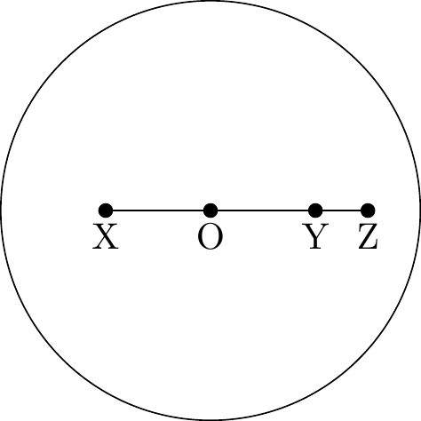

1 Basic Facts and Notions of Logic and Set Theory
This chapter introduces the concepts and terminology of logic and set theory.
What sets aside mathematics from other disciplines is its reliance on proof (Bilaniuk 2009, ix). But what is a proof? In an informal way a proof is any reasoned argument accepted as such by other mathematicians (Bilaniuk 2009, ix).
In that sense mathematical logic is concerned with formalizing and analyzing the kinds of reasoning used in the rest of mathematics (Bilaniuk 2009, ix).
1.1 Propositional logic
Propositional logic attempts to make precise the relationships that certain connectives like not, and, or, and if … then (Bilaniuk 2009, x).
1.1.1 Language
First we will define the formal language of propositional logic, \(\mathcal{L}_P\), by specifying the symbols and formulas
Definition 1.1 (Symbols of \(\mathcal{L}_P\)) The symbols of \(\mathcal{L}_P\) are:
- Parentheses: \((\) and \()\)
- Connectives: \(\neg\) and \(\Longrightarrow\)
- Atomic formulas: \(A_0, A_1, A_2, \ldots, A_n, \ldots\)
Then we specify the ways in which the symbols of \(\mathcal{L}_P\) can be put together.
Definition 1.2 (Formulas of \(\mathcal{L}_P\)) The formulas of \(\mathcal{L}_P\) are those finite sequences or strings of the symbols given in Definition 1.1 which satisfy the following rules:
- Every atomic formula is a formula
- If \(\alpha\) is a formula, then \((\neg \alpha)\) is a formula
- If \(\alpha\) and \(\beta\) are formulas, then \((\alpha \Longrightarrow \beta)\) is a formula
- No other sequence of symbols is a formula
In Definition 1.1 and Definition 1.2 parentheses are just punctuation where their purpose is to group other symbols together, \(\neg\) and \(\Longrightarrow\) represent the connectives not and if … then and the atomic formulas represent statements that cannot be broken down any further using our connectives. Finally we specify that a well formed formula can only be obtained by the first 3 rules pointed out in Definition 1.21.
Exercise 1.1 Show that every formula of \(\mathcal{L}_P\) has the same number of left parentheses as it has of right parentheses.
Solution 1.1. By strong induction on \(n\), the number of connectives (occurrences of \(\neg\) or \(\Longrightarrow\)) in a formula \(\varphi\) of \(\mathcal{L}_P\)
Base step \((n = 0)\): If \(\varphi\) is a formula of \(\mathcal{L}_P\) with no connectives by Definition 1.2 is an atomic formula. Since an atomic formula has no parentheses, it has the same left as right parentheses.
Induction hypothesis \((n \leq k)\): Assume a formula with \(n \leq k\) connectives has the same left as right parentheses.
Induction step \((n = k + 1)\): Suppose \(\varphi\) is a formula with \(n = k + 1\) connectives. From Definition 1.2 \(\varphi\) must be either:
\((\neg \alpha)\) for some formula \(\alpha\) with \(k\) connectives.
- By the induction hypothesis \(\alpha\) has the same left as right parentheses so \((\neg \alpha)\) also have the same left as right parentheses.
\((\beta \Longrightarrow \gamma)\) for some formulas \(\beta\) and \(\gamma\) with \(\leq k\) connectives each.
- By the induction hypothesis \(\beta\) and \(\gamma\) have the same left as right parentheses so \((\beta \Longrightarrow \gamma)\) also has the same left as right parentheses.
Exercise 1.2 Suppose \(\alpha\) is any formula of \(\mathcal{L}_P\). Let \(l(\alpha)\) be the length of \(\alpha\) as a sequence of symbols and let \(p(\alpha)\) be the number of parentheses (counting both left and right parentheses) in \(\alpha\). What are the minimum and maximum values of \(\frac{p(\alpha)}{l(\alpha)}\)?
Solution 1.2. The minimum value of \(p(\alpha)\) is \(0\) when \(\alpha\) is an atomic formula. Therefore the minimum value of \(\frac{p(\alpha)}{l(\alpha)}\) is \(0\) because \(p(\alpha) \geq 0\) and \(l(\alpha) \geq 1\).
In the case of other values lets inspect the possible values of \(p(\alpha)\) and \(l(\alpha)\):
For \(p(\alpha)\) the possible values are \(0, 2, 4, \ldots, 2m, \ldots\).
For \(l(\alpha)\) we can begin with an atomic formula, \(A_0\), and then add \(3\) or \(4\) symbols to create a well formed formula:
- \((\neg A_0)\)
- \((A_0 \Longrightarrow A_1)\)
Where the possible values of \(l(\alpha)\) are \(1, 4, 5, 7, 8, \ldots, s - 1, s, s + 1, \ldots\) as it is shown in Figure 1.1 where the majority of duplicate branches with the same lengths are omitted but can be different in relation to \(p(\alpha)\).

Therefore we can examine the leftmost branch.
- For the lefmost branch we have for \(\frac{p(\alpha)}{l(\alpha)} = \frac{0}{1}, \frac{2}{4}, \frac{4}{7}, \frac{6}{10}, \frac{8}{13}, \ldots, \frac{2n}{3n + 1}, \ldots\). Therefore \(\lim_{n \to \infty} \frac{2n}{3n + 1} = \lim_{n \to \infty} \frac{2}{3} = \frac{2}{3}\).
Therefore \(0 \leq \frac{p(\alpha)}{l(\alpha)}\) and \(\frac{p(\alpha)}{l(\alpha)} < \frac{2}{3}\) for the lefmost branch
Exercise 1.3 Suppose \(\alpha\) is any formula of \(\mathcal{L}_P\). Let \(s(\alpha)\) be the number of atomic formulas in \(\alpha\) (counting repetitions) and let \(c(\alpha)\) be the number of occurrences of \(\Longrightarrow\) in \(\alpha\). Show that \(s(\alpha) = c(\alpha) + 1\).
Solution 1.3. By strong induction on \(n\), the number of connectives (occurrences of \(\neg\) or \(\Longrightarrow\)) in a formula \(\varphi\) of \(\mathcal{L}_P\)
Base step \((n = 0)\): If \(\varphi\) is a formula of \(\mathcal{L}_P\) with no connectives by Definition 1.2 is an atomic formula. Since an atomic formula has no \(\Longrightarrow\) then \(c(\varphi) = 0\) and \(s(\varphi) = 1\) and so \(s(\varphi) = c(\varphi) + 1\).
Induction hypothesis \((n \leq k)\): Assume that for a formula with \(n \leq k\) connectives \(s(\varphi) = c(\varphi) + 1\).
Induction step \((n = k + 1)\): Suppose \(\varphi\) is a formula with \(n = k + 1\) connectives. From Definition 1.2 \(\varphi\) must be either:
\((\neg \alpha)\) for some formula \(\alpha\) with \(k\) connectives.
- By the induction hypothesis for \(\alpha\) we have that \(s(\alpha) = c(\alpha) + 1\). Therefore for \((\neg \alpha)\) we have also that \(s((\neg \alpha)) = c((\neg \alpha)) + 1\).
\((\beta \Longrightarrow \gamma)\) for some formulas \(\beta\) and \(\gamma\) with \(\leq k\) connectives each.
- By the induction hypothesis for \(\beta\) and \(\gamma\) we have that \(s(\beta) = c(\beta) + 1\) and \(s(\gamma) = c(\gamma) + 1\). Therefore \(s((\beta \Longrightarrow \gamma)) = c(\beta) + c(\gamma) + 1 + 1\). But \(c(\beta) + c(\gamma) + 1 = c((\beta \Longrightarrow \gamma))\) so \(s((\beta \Longrightarrow \gamma)) = c((\beta \Longrightarrow \gamma)) + 1\)
- By the induction hypothesis for \(\beta\) and \(\gamma\) we have that \(s(\beta) = c(\beta) + 1\) and \(s(\gamma) = c(\gamma) + 1\). Therefore \(s((\beta \Longrightarrow \gamma)) = c(\beta) + c(\gamma) + 1 + 1\). But \(c(\beta) + c(\gamma) + 1 = c((\beta \Longrightarrow \gamma))\) so \(s((\beta \Longrightarrow \gamma)) = c((\beta \Longrightarrow \gamma)) + 1\)
Exercise 1.4 What are the possible lengths of formulas of \(\mathcal{L}_P\)? Prove it.
Solution 1.4. Using Solution 1.2 and Figure 1.1 the possible possible lengths of formulas of \(\mathcal{L}_P\) are \(1, 4, 5, 7, 8, \ldots, s - 1, s, s + 1, \ldots\).
Exercise 1.5 Find a way for doing without parentheses or other punctuation symbols in defining a formal language for \(\mathcal{L}_P\).
Solution 1.5. See (Łukasiewicz and Borkowski 1970, 180) which is called Lukasiewicz or Polish notation
In Polish notation, logical operators are placed before their operands. This prefix positioning eliminates the need for parentheses, as the order of operations is strictly determined by the operator sequence.
So using Definition 1.2 we have that:
- Every atomic formula is a formula
- If \(\alpha\) is a formula, then \(\neg \alpha\) is a formula
- If \(\alpha\) and \(\beta\) are formulas, then \(\Longrightarrow \alpha \beta\) is a formula
- No other sequence of symbols is a formula
For example \((((\neg \alpha) \Longrightarrow \beta) \Longrightarrow (\neg \gamma))\) can be written using Polish and modern notation as \(\Longrightarrow \Longrightarrow \neg \alpha \beta \neg \gamma\)
Also Polish notation is not ambiguous. For example:
\(((\alpha \Longrightarrow \beta) \Longrightarrow \gamma)\) is written as \(\Longrightarrow \Longrightarrow \alpha \beta \gamma\)
\((\alpha \Longrightarrow (\beta \Longrightarrow \gamma))\) is written as \(\Longrightarrow \alpha \Longrightarrow \beta \gamma\)
Proposition 1.1 Show that the set of formulas of \(\mathcal{L}_P\) is countable.
Proof. Let \(S_{\mathcal{L}_p}\) the set of symbols of \(\mathcal{L}_p\), \(S_{\mathcal{L}_p} = \{ (, ), \neg, \Longrightarrow \} \cup \{ A_0, A_1, A_2, \ldots, A_n, \ldots \}\).
- Because \(\{ (, ), \neg, \Longrightarrow \}\) is finite and \(\{ A_0, A_1, A_2, \ldots, A_n, \ldots \}\) is denumerable then by Exercise D.9 2 \(S_{\mathcal{L}_p}\) is denumerable.
Let \(S_{\mathcal{L}_p}(l(n)) = \underset{n \text{ times}}{\underbrace{S_{\mathcal{L}_p} \times \ldots \times S_{\mathcal{L}_p}}} = S_{\mathcal{L}_p}^n\) the string of symbols of length \(n\) build from \(S_{\mathcal{L}_p}\).
By Corollary D.6 1 \(S_{\mathcal{L}_p}^2\) is denumerable. Also by Corollary D.6 1 and using the principle of induction we can prove that \(S_{\mathcal{L}_p}^3, \ldots, S_{\mathcal{L}_p}^n\) are denumerable sets.
By Exercise D.9 4 \(S_{\mathcal{L}_p}^1 \cup S_{\mathcal{L}_p}^2 \cup \ldots \cup S_{\mathcal{L}_p}^n \cup \dots = \bigcup_{i \in \mathbb{N}} S_{\mathcal{L}_p}^i\) is a denumerable set. That is, any denumerable union of denumerable sets is a denumerable set.
Let \(F_{\mathcal{L}_p}\) be the set of formulas of \(\mathcal{L}_p\). Because \(F_{\mathcal{L}_p} \subseteq \bigcup_{i \in \mathbb{N}} S_{\mathcal{L}_p}^i\) then \(F_{\mathcal{L}_p}\) by Corollary D.6 \(F_{\mathcal{L}_p}\) is either finite or denumerable. However we know that \(F_{\mathcal{L}_p}\) is not finite so it must be denumerable.
1.1.1.1 Informal conventions
We will use the symbols \(\land\), \(\lor\), and \(\iff\) to represent and, or and if and only if respectively. Since they are not among the symbols of \(\mathcal{L}_P\), we will use them as abbreviations for certain constructions involving only \(\neg\) and \(\Longrightarrow\). Namely:
\((\alpha \land \beta)\) is short for \((\neg(\alpha \Longrightarrow (\neg \beta)))\)
\((\alpha \lor \beta)\) is short for \((( \neg \alpha) \Longrightarrow \beta)\)
\((\alpha \iff \beta)\) is short for \(((\alpha \Longrightarrow \beta) \land (\beta \Longrightarrow \alpha))\)
Definition 1.3 (Subformulas) Suppose \(\varphi\) is a formula of \(\mathcal{L}_p\). The set of subformulas of \(\varphi\), \(S(\varphi)\), is defined as follows:
If \(\varphi\) is an atomic formula then \(S(\varphi) = \{ \varphi \}\)
If \(\varphi\) is \((\neg \alpha)\) then \(S(\varphi) = S(\alpha) \cup \{ (\neg \alpha) \}\)
If \(\varphi\) is \((\alpha \Longrightarrow \beta)\) then \(S(\varphi) = S(\alpha) \cup S(\beta) \cup \{ (\alpha \Longrightarrow \beta) \}\)
Exercise 1.6 Find all the subformulas of each of the following formulas.
- \((\neg((\neg A_{56}) \Longrightarrow A_{56}))\)
- \((A_9 \Longrightarrow (A_8 \Longrightarrow (\neg (A_{78} \Longrightarrow (\neg (\neg A_0))))))\)
- \((((\neg A_0) \land (\neg A_1)) \iff (\neg (A_0 \lor A_1)))\)
Solution 1.6. \[\begin{split} S((\neg((\neg A_{56}) \Longrightarrow A_{56}))) & = S(((\neg A_{56}) \Longrightarrow A_{56})) \cup \{ (\neg((\neg A_{56}) \Longrightarrow A_{56})) \} \\ & = \{ A_{56}, (\neg A_{56}), ((\neg A_{56}) \Longrightarrow A_{56}), \\ & \;\;\;\;\;\; (\neg((\neg A_{56}) \Longrightarrow A_{56})) \} \end{split}\]
\[\begin{split} S((A_9 \Longrightarrow (A_8 \Longrightarrow (\neg (A_{78} \Longrightarrow (\neg (\neg A_0))))))) & = S(A_9) \cup S((A_8 \Longrightarrow (\neg (A_{78} \Longrightarrow (\neg (\neg A_0)))))) \\ & \;\;\;\; \cup \{ (A_9 \Longrightarrow (A_8 \Longrightarrow (\neg (A_{78} \Longrightarrow (\neg (\neg A_0)))))) \} \\ & = \{ A_9, A_8, A_{78}, A_0, (\neg A_0), \\ & \;\;\;\;\;\; (\neg(\neg A_0)), (A_{78} \Longrightarrow (\neg (\neg A_0))), \\ & \;\;\;\;\;\; (\neg (A_{78} \Longrightarrow (\neg (\neg A_0)))), \\ & \;\;\;\;\;\; (A_8 \Longrightarrow (\neg (A_{78} \Longrightarrow (\neg (\neg A_0))))), \\ & \;\;\;\;\;\; (A_9 \Longrightarrow (A_8 \Longrightarrow (\neg (A_{78} \Longrightarrow (\neg (\neg A_0)))))) \} \end{split}\]
Let \(\varphi = (((\neg A_0) \land (\neg A_1)) \Longrightarrow (\neg (A_0 \lor A_1)))\) and \(\sigma = ((\neg (A_0 \lor A_1)) \Longrightarrow ((\neg A_0) \land (\neg A_1)))\)
\[\begin{split} S((((\neg A_0) \land (\neg A_1)) \iff (\neg (A_0 \lor A_1)))) & = S((\varphi \Longrightarrow (\neg \sigma))) \cup \{ (\neg (\varphi \Longrightarrow (\neg \sigma)))\} \\ & = \{ A_0, A_1, (\neg A_0), (\neg A_1), (\neg (\neg A_1) ), \\ & \;\;\;\;\;\; (A_0 \lor A_1), ((\neg A_0) \Longrightarrow (\neg (\neg A_1))), \\ & \;\;\;\;\;\; (\neg (A_0 \lor A_1)), ((\neg A_0) \land (\neg A_1)) \\ & \;\;\;\;\;\; \sigma, (\neg \sigma), \varphi, \\ & \;\;\;\;\;\; (\varphi \Longrightarrow (\neg \sigma)), \\ & \;\;\;\;\;\; (\neg(\varphi \Longrightarrow (\neg \sigma))) \} \end{split}\]
1.1.1.2 Unique Readability
To ensure that the formulas of \(\mathcal{L}_p\) are unambiguous (can be read in only one way according to the rules given in Definition 1.2) one must add to Definition 1.1 the requirement that all the symbols of \(\mathcal{L}_p\) are distinct and that no symbol is a subsequence of any other symbol.
Theorem 1.1 (Unique Readability) A formula of \(\mathcal{L}_p\) must satisfy exactly one of the first 3 conditions in Definition 1.2.
Proof. By strong induction on \(n\), the number of connectives (occurrences of \(\neg\) or \(\Longrightarrow\)) in a formula \(\varphi\) of \(\mathcal{L}_P\)
Base step \((n = 0)\): If \(\varphi\) is a formula of \(\mathcal{L}_P\) with no connectives by Definition 1.2 is an atomic formula. Since an atomic formula has no connectives it can not be of the form \((\neg \varphi)\) or \((\alpha \Longrightarrow \beta)\).
Induction hypothesis \((n \leq k)\): Assume a formula with \(n \leq k\) connectives must satisfy exactly one of the first 3 conditions in Definition 1.2.
Induction step \((n = k + 1)\): Suppose \(\varphi\) is a formula with \(n = k + 1\) connectives. From Definition 1.2 \(\varphi\) must be either:
\((\neg \alpha)\) for some formula \(\alpha\) with \(k\) connectives.
By the induction hypothesis \(\alpha\) must satisfy exactly one of the first 3 conditions in Definition 1.2.
Because \(\alpha\) satisfy exactly one of the first 3 conditions in Definition 1.2 then \((\neg \alpha)\) can’t be an atomic formula because an atomic formula doesn’t have connectives.
Now assume that \((\neg \alpha)\) can be expressed as \((\beta \Longrightarrow \gamma)\). Then \(\neg \alpha\) will be equal to \(\beta \Longrightarrow \gamma\). However \(\alpha\) satisfy exactly one of the first 3 conditions in Definition 1.2 so it will be impossible that \(\neg \alpha\) and \(\beta \Longrightarrow \gamma\) are equal.
- Therefore \((\neg \alpha)\) satisfy exactly the 2 condition in Definition 1.2.
\((\beta \Longrightarrow \gamma)\) for some formulas \(\beta\) and \(\gamma\) with \(\leq k\) connectives each.
By the induction hypothesis \(\beta\) and \(\gamma\) must satisfy exactly one of the first 3 conditions in Definition 1.2.
Because \(\beta\) and \(\gamma\) satisfy exactly one of the first 3 conditions in Definition 1.2 then \((\beta \Longrightarrow \gamma)\) can’t be an atomic formula because an atomic formula doesn’t have connectives.
Now assume that \((\beta \Longrightarrow \gamma)\) can be expressed as \((\neg \sigma)\). Then \(\neg \sigma\) will be equal to \(\beta \Longrightarrow \gamma\). However \(\beta\) and \(\gamma\) satisfy exactly one of the first 3 conditions in Definition 1.2 so it will be impossible that \(\neg \sigma\) and \(\beta \Longrightarrow \gamma\) are equal.
- Therefore \((\beta \Longrightarrow \gamma)\) satisfy exactly the 3 condition in Definition 1.2.
1.1.2 Truth Assignments
Whether a given formula \(\varphi\) of \(\mathcal{L}_p\) is true or false usually depends on how we interpret the atomic formulas which appear in \(\varphi\) (Bilaniuk 2009, 7).
Definition 1.4 (Truth assignment) A truth assignment is a function \(v\) whose domain is the set of all formulas of \(\mathcal{L}_p\) and whose range is the set \(\{ T, F \}\) of truth values, such that:
\(v(A_n)\) is defined for every atomic formula \(A_n\).
For any formula \(\alpha\):
\[v((\neg \alpha)) = \begin{cases} T & \text{ if } v(\alpha) = F \\ F & \text{ if } v(\alpha) = T \end{cases}\]
- For any formulas \(\alpha\) and \(\beta\):
\[v((\alpha \Longrightarrow \beta)) = \begin{cases} F & \text{ if } v(\alpha) = T \text{ and } v(\beta) = F \\ T & \text{ otherwise } \end{cases}\]
For example, let \(v(A_0) = T\) and \(v(A_1) = F\) then it is possible to determine \(v(((\neg A_1) \Longrightarrow (A_0 \Longrightarrow A_1)))\) in the following way:
- \(v((\neg A_1)) = T\)
- \(v((A_0 \Longrightarrow A_1)) = F\)
- \(v(((\neg A_1) \Longrightarrow (A_0 \Longrightarrow A_1))) = F\)
A convenient way to write out the determination of the truth value of a formula on a given truth assignment is to use a truth table:
| \(A_0\) | \(A_1\) | \((\neg A_1)\) | \((A_0 \Longrightarrow A_1)\) | \(((\neg A_1) \Longrightarrow (A_0 \Longrightarrow A_1))\) |
|---|---|---|---|---|
| \(T\) | \(F\) | \(T\) | \(F\) | \(T\) |
Using what is described in Section 1.1.1.1 we have the following:
\[v((\alpha \land \beta)) = \begin{cases} T & \text{ if } v(\alpha) = T \text{ and } v(\beta) = T \\ F & \text{ otherwise } \end{cases}\]
\[v((\alpha \lor \beta)) = \begin{cases} F & \text{ if } v(\alpha) = F \text{ and } v(\beta) = F \\ T & \text{ otherwise } \end{cases}\]
\[v((\alpha \iff \beta)) = \begin{cases} T & \text{ if } v(\alpha) = v(\beta) \\ F & \text{ otherwise } \end{cases}\]
Also it is important to point out that in Definition 1.4 \(v((\alpha \Longrightarrow \beta))\) is known as material implication (Egré and Rott 2021). In a 2-valued propositional framework there are 16 possible truth tables for 2 formulas \(\alpha\) and \(\beta\) as it is shown in Table 1.2, Table 1.3, Table 1.4 and Table 1.5
| \(\alpha\) | \(\beta\) | \(\bot\) | \(\top\) | \(\alpha\) | \(\beta\) |
|---|---|---|---|---|---|
| \(T\) | \(T\) | \(F\) | \(T\) | \(T\) | \(T\) |
| \(T\) | \(F\) | \(F\) | \(T\) | \(T\) | \(F\) |
| \(F\) | \(T\) | \(F\) | \(T\) | \(F\) | \(T\) |
| \(F\) | \(F\) | \(F\) | \(T\) | \(F\) | \(F\) |
| \(\alpha\) | \(\beta\) | \(\neg \alpha\) | \(\neg \beta\) | \(\Downarrow\) | \(\Uparrow\) |
|---|---|---|---|---|---|
| \(T\) | \(T\) | \(F\) | \(F\) | \(F\) | \(F\) |
| \(T\) | \(F\) | \(F\) | \(T\) | \(F\) | \(T\) |
| \(F\) | \(T\) | \(T\) | \(F\) | \(F\) | \(T\) |
| \(F\) | \(F\) | \(T\) | \(T\) | \(T\) | \(T\) |
| \(\alpha\) | \(\beta\) | \(\land\) | \(\lor\) | \(\Longrightarrow\) | \(\iff\) |
|---|---|---|---|---|---|
| \(T\) | \(T\) | \(T\) | \(T\) | \(T\) | \(T\) |
| \(T\) | \(F\) | \(F\) | \(T\) | \(F\) | \(F\) |
| \(F\) | \(T\) | \(T\) | \(T\) | \(T\) | \(F\) |
| \(F\) | \(F\) | \(F\) | \(F\) | \(T\) | \(T\) |
| \(\alpha\) | \(\beta\) | \(\Longleftarrow\) | \(\not\Longrightarrow\) | \(\not\Longleftarrow\) | \(\oplus\) |
|---|---|---|---|---|---|
| \(T\) | \(T\) | \(T\) | \(F\) | \(F\) | \(F\) |
| \(T\) | \(F\) | \(T\) | \(T\) | \(F\) | \(T\) |
| \(F\) | \(T\) | \(F\) | \(F\) | \(T\) | \(T\) |
| \(F\) | \(F\) | \(T\) | \(F\) | \(F\) | \(F\) |
Assuming that we want:
\(v(\alpha) = T\), \(v(\beta) = T\) and \(v((\alpha \Longrightarrow \beta)) = T\)
\(v(\alpha) = T\), \(v(\beta) = F\) and \(v((\alpha \Longrightarrow \beta)) = F\)
From the 16 possible truth tables only 4 comply with these both conditions:
| \(\alpha\) | \(\beta\) | \(\land\) | \(\iff\) | \(\beta\) | \(\Longrightarrow\) |
|---|---|---|---|---|---|
| \(T\) | \(T\) | \(T\) | \(T\) | \(T\) | \(T\) |
| \(T\) | \(F\) | \(F\) | \(F\) | \(F\) | \(F\) |
| \(F\) | \(T\) | \(F\) | \(F\) | \(T\) | \(T\) |
| \(F\) | \(F\) | \(F\) | \(T\) | \(F\) | \(T\) |
In Table 1.6 the first truth table corresponds to \(\land\), the second corresponds to \(\iff\) and the third corresponds to \(\beta\) where these tables are not suitable for \(\Longrightarrow\). Therefore the last table is the only truth table suitable for \(\Longrightarrow\) assuming we want the both conditions pointed above in a 2-valued propositional framework.
Proposition 1.2 (Truth values of atomic formulas) Suppose \(\delta\) is any formula and \(u\) and \(v\) are truth assignments such that \(u(A_n) = v(A_n)\) for all atomic formulas \(A_n\) which occur in \(\delta\). Then \(u(\delta) = v(\delta)\).
Proof. By strong induction on \(n\), the number of connectives (occurrences of \(\neg\) or \(\Longrightarrow\)) in a formula \(\delta\) of \(\mathcal{L}_P\)
Base step \((n = 0)\): If \(\delta\) is a formula of \(\mathcal{L}_P\) with no connectives by Definition 1.2 is an atomic formula. So \(\delta = A_i\) for some \(i \in \mathbb{N}\) where \(u(A_i) = v(A_i)\). Therefore \(u(\delta) = v(\delta)\).
Induction hypothesis \((n \leq k)\): Assume that for a formula \(\delta\) with \(n \leq k\) connectives we have that for \(u\) and \(v\) truth assignments such that \(u(A_n) = v(A_n)\) for all atomic formulates \(A_n\) which occur in the \(\delta\) we have that \(u(\delta) = v(\delta)\)
Induction step \((n = k + 1)\): Suppose \(\varphi\) is a formula with \(n = k + 1\) connectives. From Definition 1.2 \(\varphi\) must be either:
\((\neg \delta)\) for some formula \(\delta\) with \(k\) connectives.
- Therefore \(v(\delta) = u(\delta)\) and by Definition 1.4 \(v(\neg \delta) = u( \neg \delta)\) which means that \(v(\varphi) = u(\varphi)\).
\((\delta \Longrightarrow \beta)\) for some formulas \(\delta\) and \(\beta\) with \(k\) connectives.
- Therefore \(v(\delta) = u(\delta)\) and \(v(\beta) = u(\beta)\) and by Definition 1.4 \(v(\delta \Longrightarrow \delta) = u(\delta \Longrightarrow \delta)\) which means that \(v(\varphi) = u(\varphi)\).
Corollary 1.1 (Truth values of atomic formulas) Suppose \(u\) and \(v\) are truth assignments such that \(u(A_n) = v(A_n)\) for every atomic formula \(A_n\). Then \(u = v\), i.e. \(u(\varphi) = v(\varphi)\) for every formula \(\varphi\).
Proof. Because \(u(A_n) = v(A_n)\) for every atomic formula \(A_n\) in \(\mathcal{L}_p\) we can take any formula \(\varphi\) and apply Proposition 1.2. Thefefore \(v(\varphi) = u(\varphi)\) but \(\varphi\) is any formula in \(\mathcal{L}_p\) so it applies to every formula.
Definition 1.5 If \(v\) is a truth assignment and \(\varphi\) is a formula, we will often say that \(v\) satisfies \(\varphi\) if \(v(\varphi) = T\).
Similarly, if \(\Sigma\) is a set of formulas, we will often say that \(v\) satisfies \(\Sigma\) if \(v(\sigma) = T\) for every \(\sigma \in \Sigma\).
We will say that \(\varphi\) (respectively, \(\Sigma\)) is satisfiable if there is some truth assignment which satisfies it.
Definition 1.6 A formula \(\varphi\) is a tautology if it is satisfied by every truth assignment.
A formula \(\psi\) is a contradiction if there is no truth assignment which satisfies it.
For example, \((A_4 \Longrightarrow A_4)\) is a tautology, \((\neg (A_4 \Longrightarrow A_4))\) is a contradiction and \(A_4\) neither of them.
| \(A_4\) | \((A_4 \Longrightarrow A_4)\) | \((\neg (A_4 \Longrightarrow A_4))\) |
|---|---|---|
| \(T\) | \(T\) | \(F\) |
| \(F\) | \(T\) | \(F\) |
Proposition 1.3 If \(\alpha\) is any formula, then \(((\neg \alpha) \lor \alpha)\) is a tautology and \(((\neg \alpha) \land \alpha)\) is a contradiction.
Proof.
| \(\alpha\) | \((\neg \alpha)\) | \(((\neg \alpha) \lor \alpha)\) | \(((\neg \alpha) \land \alpha)\) |
|---|---|---|---|
| \(T\) | \(F\) | \(T\) | \(F\) |
| \(F\) | \(T\) | \(T\) | \(F\) |
Proposition 1.4 A formula \(\beta\) is a tautology if and only if \(\neg \beta\) is a contradiction.
Proof. For all \(v\), where \(v\) is a true assignment, \(v(\beta) = T\). By Definition 1.4 \(v((\neg \beta)) = F\) so \((\neg \beta)\) is a contradiction.
For all \(v\), where \(v\) is a true assignment, \(v((\neg \beta)) = F\). By Definition 1.4 \(v(\beta) = T\) so \(\beta\) is a tautology.
Definition 1.7 A set of formulas \(\Sigma\) implies a formula \(\varphi\), written as \(\Sigma \models \varphi\), if every truth assignment \(v\) which satisfies \(\Sigma\) also satisfies \(\varphi\).
We will often write \(\Sigma \not \models \varphi\) if it is not the case that \(\Sigma \models \varphi\).
In the case where \(\Sigma\) is empty, we will usually write \(\models \varphi\) instead of \(\emptyset \models \varphi\).
Similarly, if \(\Delta\) and \(\Gamma\) are sets of formulas, then \(\Delta\) implies \(\Gamma\), written as \(\Delta \models \Gamma\), if every truth assignment \(v\) which satisfies \(\Delta\) also satisfies \(\Gamma\).
For example, \(\{ A_3, (A_3 \Longrightarrow (\neg A_7)) \} \models (\neg A_7)\) because if \(v\) is a true assignment such that \(v(A_3) = T\) and \(v((A_3 \Longrightarrow (\neg A_7))) = T\) then it must be the case that \(v((\neg A_7)) = T\) by Definition 1.4.
Also, \(\{ A_8, (A_5 \Longrightarrow A_8) \} \not \models A_5\), because if \(u\) is a true assignment such that \(u(A_8) = T\) and \(u((A_5 \Longrightarrow A_8)) = T\). However, it is possible to have \(u(A_5) = F\).
A formula \(\varphi\) is a tautology if and only if \(\models \varphi\) and a contradiction if and only if \(\models (\neg \varphi)\).
Lets brake each element to understand why this is true:
If \(v\) is a truth assignment then:
- \(v\) satisfies \(\sigma \iff v(\sigma) = T\)
If \(\Sigma\) is a set of formulas then:
- \(v\) satisfies \(\Sigma \iff (\forall \sigma)(\sigma \in \Sigma \Longrightarrow v(\sigma)=T)\)
\(\Sigma \models \varphi\) if and only if every truth assignment \(v\) which satisfies \(\Sigma\) also satisfies \(\varphi\)
- \(\Sigma \models \varphi \iff ((\forall v)((\forall \sigma)(\sigma \in \Sigma \Longrightarrow v(\sigma)=T)) \Longrightarrow v(\varphi)=T)\)
Now let’s apply to \(\models \varphi\) when \(\varphi\) is a tautology:
\(\models \varphi \iff ((\forall v)((\forall \sigma)(\sigma \in \emptyset \Longrightarrow v(\sigma)=T)) \Longrightarrow v(\varphi)=T)\)
\(\sigma \in \emptyset\) is false so \((\sigma \in \emptyset \Longrightarrow v(\sigma)=T)\) is true by Definition 1.4.
\((\forall v)((\forall \sigma)(\sigma \in \emptyset \Longrightarrow v(\sigma)=T))\) will be true and \(v(\sigma)=T\) is true because \(\sigma\) is a tautology
By Definition 1.4 \(((\forall v)((\forall \sigma)(\sigma \in \emptyset \Longrightarrow v(\sigma)=T)) \Longrightarrow v(\varphi)=T)\) is true so we can write \(\models \varphi\).
Proposition 1.5 If \(\Gamma\) and \(\Sigma\) are sets of formulas such that \(\Gamma \subseteq \Sigma\), then \(\Sigma \models \Gamma\).
Proof. If \(v\) satisfies \(\Sigma\) then for all \(\sigma \in \Sigma\) we have that \(v(\sigma) = T\). But if \(\gamma \in \Gamma\) then also \(\gamma \in \Sigma\). Therefore \(v(\gamma) = T\) for any formula that belongs to \(\Gamma\). This means that \(\Sigma \models \Gamma\).
Exercise 1.7 How can one check whether or not \(\Sigma \models \varphi\) for a formula \(\varphi\) and a finite set of formulas \(\Sigma\)?
Solution 1.7. We can construct a truth table and evaluate if in each row where the formulas that belongs to \(\Sigma\) are true \(\varphi\) is also true.
For example, let \(\Sigma = \{ (\alpha \Longrightarrow \beta), (\neg \beta) \}\) and \(\varphi = (\neg \alpha)\). The truth table will be:
| \(\alpha\) | \(\beta\) | \((\alpha \Longrightarrow \beta)\) | \((\neg \beta)\) | \((\neg \alpha)\) |
|---|---|---|---|---|
| \(T\) | \(T\) | \(T\) | \(F\) | \(F\) |
| \(T\) | \(F\) | \(F\) | \(T\) | \(F\) |
| \(F\) | \(T\) | \(T\) | \(F\) | \(T\) |
| \(F\) | \(F\) | \(T\) | \(T\) | \(T\) |
The last row of the truth table represents a truth assignment \(v\) that satisfies \(\Sigma\) and also the same truth asignment \(v\) satisfies \(\varphi\). Therefore we can check that \(\Sigma \models \varphi\).
It is importa to mention that \(\Sigma\) must be a finite set of formulas or it will not be possible to check each row in the truth table that is build.
Proposition 1.6 Suppose \(\Sigma\) is a set of formulas and \(\psi\) and \(\rho\) are formulas. Then \(\Sigma \cup \{ \psi \} \models \rho\) if and only if \(\Sigma \models (\psi \Longrightarrow \rho)\).
Proof.
Assume \(\Sigma \models (\psi \Longrightarrow \rho)\) and let \(v\) satisfies \(\Sigma \cup \{ \psi \}\).
By Proposition 1.5 \(v\) satisfies also \(\Sigma\) because \(\Sigma \subseteq \Sigma \cup \{ \psi \}\).
By assumption \(v\) satisfies \((\psi \Longrightarrow \rho)\) because \(\Sigma \models (\psi \Longrightarrow \rho)\). Therefore \(v((\psi \Longrightarrow \rho)) = T\)
Because \(v(\psi) = T\) and \(v((\psi \Longrightarrow \rho)) = T\) by Definition 1.4 it must be the case that \(v(\rho) = T\). Therefore \(\Sigma \cup \{ \psi \} \models \rho\).
Assume \(\Sigma \cup \{ \psi \} \models \rho\).
Let \(v\) satisfies \(\Sigma \cup \{ \psi \}\) so \(v(\sigma) = F\) for all \(\sigma in \Sigma\), \(v(\psi) = T\) and \(v(\rho) = T\).
Because \(v(\psi) = T\) and \(v(\rho) = T\) by Definition 1.4 \(v((\psi \Longrightarrow \rho)) = T\).
Therefore \(\Sigma \models (\psi \Longrightarrow \rho)\).
Proposition 1.7 A set of formulas \(\Sigma\) is satisfiable if and only if there is no contradiction \(\chi\) such that \(\Sigma \models \chi\).
Proof.
Assume \(\Sigma = \emptyset\) by Note 1.1 \(\emptyset\) is satisfiable and \(\chi\) will be a tautology because \(\models \chi\).
Assume \(\Sigma \neq \emptyset\) is a set of formulas that are satisfiable.
- Lets take \(\sigma \in \Sigma\) so \(v(T) = \sigma\). Then \(\Sigma \models \sigma\) where \(\sigma\) is not a contradiction.
Assume \(\Sigma \models \chi\) where \(\chi\) is not a contradiction.
- Then for all \(\sigma \in \Sigma\) we have that \(v(\sigma) = T\). Therefore \(\Sigma\) is satisfiable.
1.1.3 Deductions
Definition 1.8 The 3 axiom schema of \(\mathcal{L}_P\) are2:
\((\alpha \Longrightarrow (\beta \Longrightarrow \alpha))\)
\(((\alpha \Longrightarrow (\beta \Longrightarrow \gamma)) \Longrightarrow ((\alpha \Longrightarrow \beta) \Longrightarrow (\alpha \Longrightarrow \gamma)))\)
\((((\neg \beta) \Longrightarrow (\neg \alpha)) \Longrightarrow (((\neg \beta) \Longrightarrow \alpha) \Longrightarrow \beta))\)
Replacing \(\alpha\), \(\beta\), and \(\gamma\) by particular formulas of \(\mathcal{L}_P\) in any one of the axiom schemas gives an axiom of \(\mathcal{L}_P\).
Proposition 1.8 Every axiom of \(\mathcal{L}_P\) is a tautology.
Proof.
| \(\alpha\) | \(\beta\) | \((\beta \Longrightarrow \alpha)\) | \(\alpha \Longrightarrow ((\beta \Longrightarrow \alpha))\) |
|---|---|---|---|
| \(T\) | \(T\) | \(T\) | \(T\) |
| \(T\) | \(F\) | \(T\) | \(T\) |
| \(F\) | \(T\) | \(F\) | \(T\) |
| \(F\) | \(F\) | \(T\) | \(T\) |
| \(\alpha\) | \(\beta\) | \(\gamma\) | \((\alpha \Longrightarrow (\beta \Longrightarrow \gamma))\) | \(((\alpha \Longrightarrow \beta) \Longrightarrow (\alpha \Longrightarrow \gamma))\) |
|---|---|---|---|---|
| \(T\) | \(T\) | \(T\) | \(T\) | \(T\) |
| \(T\) | \(T\) | \(F\) | \(F\) | \(F\) |
| \(T\) | \(F\) | \(T\) | \(T\) | \(T\) |
| \(T\) | \(F\) | \(F\) | \(T\) | \(T\) |
| \(F\) | \(T\) | \(T\) | \(T\) | \(T\) |
| \(F\) | \(T\) | \(F\) | \(T\) | \(T\) |
| \(F\) | \(F\) | \(T\) | \(T\) | \(T\) |
| \(F\) | \(F\) | \(F\) | \(T\) | \(T\) |
| \(\alpha\) | \(\beta\) | \(\gamma\) | \(((\alpha \Longrightarrow (\beta \Longrightarrow \gamma))) \Longrightarrow \\ ((\alpha \Longrightarrow \beta) \Longrightarrow (\alpha \Longrightarrow \gamma))\) |
|---|---|---|---|
| \(T\) | \(T\) | \(T\) | \(T\) |
| \(T\) | \(T\) | \(F\) | \(T\) |
| \(T\) | \(F\) | \(T\) | \(T\) |
| \(T\) | \(F\) | \(F\) | \(T\) |
| \(F\) | \(T\) | \(T\) | \(T\) |
| \(F\) | \(T\) | \(F\) | \(T\) |
| \(F\) | \(F\) | \(T\) | \(T\) |
| \(F\) | \(F\) | \(F\) | \(T\) |
| \(\alpha\) | \(\beta\) | \(((\neg \beta) \Longrightarrow (\neg \alpha))\) | \((((\neg \beta) \Longrightarrow \alpha) \Longrightarrow \beta)\) |
|---|---|---|---|
| \(T\) | \(T\) | \(T\) | \(T\) |
| \(T\) | \(F\) | \(F\) | \(F\) |
| \(F\) | \(T\) | \(T\) | \(T\) |
| \(F\) | \(F\) | \(T\) | \(T\) |
| \(\alpha\) | \(\beta\) | \((((\neg \beta) \Longrightarrow (\neg \alpha)) \Longrightarrow (((\neg \beta) \Longrightarrow \alpha) \Longrightarrow \beta))\) |
|---|---|---|
| \(T\) | \(T\) | \(T\) |
| \(T\) | \(F\) | \(T\) |
| \(F\) | \(T\) | \(T\) |
| \(F\) | \(F\) | \(T\) |
Definition 1.9 (Modus ponens (rule of inference)) Given the formulas \(\varphi\) and \((\varphi \Longrightarrow \psi)\), one may infer \(\psi\).
Proposition 1.9 Suppose \(\varphi\) and \(\psi\) are formulas. Then \(\{ \varphi, (\varphi \Longrightarrow \psi) \} \models \psi\).
Proof. Becuase \(v(\varphi) = T\) and \(v((\varphi \Longrightarrow \psi)) = T\) by Definition 1.4 it must be the case that \(v(\psi) = T\). Therefore \(\{ \varphi, (\varphi \Longrightarrow \psi) \} \models \psi\).
Definition 1.10 (Deduction or proof) Let \(\Sigma\) be a set of formulas. A deduction or proof from \(\Sigma\) in \(\mathcal{L}_P\) is a finite sequence \(\varphi_1 \varphi_2 \ldots \varphi_n\) of formulas such that for each \(k \leq n\):
- \(\varphi_k\) is an axiom
- \(\varphi_k \in \Sigma\)
- There are \(i, j < k\) such that \(\varphi_k\) follows from \(\varphi_i\) and \(\varphi_j\) by Modus Ponens.
A formula of \(\Sigma\) appearing in the deduction is called a premiss.
\(\Sigma\) proves a formula \(\alpha\), written as \(\Sigma \vdash \alpha\), if \(\alpha\) is the last formula of a deduction from \(\Sigma\).
We will usually write \(\vdash \alpha\) for \(\emptyset \vdash \alpha\)
We will take \(\Sigma \vdash \Delta\) to mean that \(\Sigma \vdash \delta\) for every formula \(\delta \in \Delta\).
Example 1.1 Show that \(\vdash (\varphi \Longrightarrow \varphi)\)
\(((\varphi \Longrightarrow ((\varphi \Longrightarrow \varphi) \Longrightarrow \varphi)) \Longrightarrow ((\varphi \Longrightarrow (\varphi \Longrightarrow \varphi)) \Longrightarrow (\varphi \Longrightarrow \varphi)))\) Axiom 2
\((\varphi \Longrightarrow ((\varphi \Longrightarrow \varphi) \Longrightarrow \varphi))\) Axiom 1
\(((\varphi \Longrightarrow (\varphi \Longrightarrow \varphi)) \Longrightarrow (\varphi \Longrightarrow \varphi))\) Modus ponens 1, 2
\((\varphi \Longrightarrow (\varphi \Longrightarrow \varphi))\) Axiom 1
\((\varphi \Longrightarrow \varphi)\) Modus ponens 3, 4
Example 1.2 Show that \(\{ (\alpha \Longrightarrow \beta), (\beta \Longrightarrow \gamma) \} \vdash (\alpha \Longrightarrow \gamma)\)
\(((\beta \Longrightarrow \gamma) \Longrightarrow (\alpha \Longrightarrow (\beta \Longrightarrow \gamma)))\) Axiom 1
\((\beta \Longrightarrow \gamma)\) Premiss
\((\alpha \Longrightarrow (\beta \Longrightarrow \gamma))\) Modus ponens 1, 2
\(((\alpha \Longrightarrow (\beta \Longrightarrow \gamma)) \Longrightarrow ((\alpha \Longrightarrow \beta) \Longrightarrow (\alpha \Longrightarrow \gamma)))\) Axiom 2
\(((\alpha \Longrightarrow \beta) \Longrightarrow (\alpha \Longrightarrow \gamma))\) Modus ponens 4, 3
\((\alpha \Longrightarrow \beta)\) Premiss
\((\alpha \Longrightarrow \gamma)\) Modus ponens 5, 6
Example 1.3 Show that \(\vdash (((\neg \alpha) \Longrightarrow \alpha) \Longrightarrow \alpha)\)
\((((\neg \alpha) \Longrightarrow (\neg \alpha)) \Longrightarrow (((\neg \alpha) \Longrightarrow \alpha) \Longrightarrow \alpha))\) Axiom 3
\(((\neg \alpha) \Longrightarrow (\neg \alpha))\) Example 1.1
\((((\neg \alpha) \Longrightarrow \alpha) \Longrightarrow \alpha)\) Modus ponens 1, 2
Exercise 1.8 Show that if \(\alpha\), \(\beta\), and \(\gamma\) are formulas, then:
\(\{ (\alpha \Longrightarrow (\beta \Longrightarrow \gamma)), \beta \} \vdash (\alpha \Longrightarrow \gamma)\)
\(\vdash (\alpha \lor (\neg \alpha))\)
Solution 1.8. In the case of \(\{ (\alpha \Longrightarrow (\beta \Longrightarrow \gamma)), \beta \} \vdash (\alpha \Longrightarrow \gamma)\)
\(((\alpha \Longrightarrow (\beta \Longrightarrow \gamma)) \Longrightarrow ((\alpha \Longrightarrow \beta) \Longrightarrow (\alpha \Longrightarrow \gamma)))\) Axiom 2
\((\alpha \Longrightarrow (\beta \Longrightarrow \gamma))\) Premiss
\(((\alpha \Longrightarrow \beta) \Longrightarrow (\alpha \Longrightarrow \gamma))\) Modus ponens 1, 2
\((\beta \Longrightarrow (\alpha \Longrightarrow \beta))\) Axiom 1
\(\beta\) Premiss
\((\alpha \Longrightarrow \beta)\) Modus ponens 4, 5
\((\alpha \Longrightarrow \gamma)\) Modus ponens 3, 6
In the case of \(\vdash (\alpha \lor (\neg \alpha))\) by Section 1.1.1.1 is it equivalent to \(\vdash ((\neg \alpha) \Longrightarrow (\neg \alpha))\)
- \(((\neg \alpha) \Longrightarrow (\neg \alpha))\) Example 1.1
Example 1.4 Let us show that \(\vdash ((\neg (\neg \beta)) \Longrightarrow \beta)\)
\((((\neg \beta) \Longrightarrow (\neg (\neg \beta))) \Longrightarrow (((\neg \beta) \Longrightarrow (\neg \beta)) \Longrightarrow \beta))\) Axiom 3
\(((\neg (\neg \beta)) \Longrightarrow ((\neg \beta) \Longrightarrow (\neg (\neg \beta))))\) Axiom 1
\(((\neg (\neg \beta)) \Longrightarrow (((\neg \beta) \Longrightarrow (\neg \beta)) \Longrightarrow \beta))\) Example 1.2 2, 1
\(((\neg \beta) \Longrightarrow (\neg \beta))\) Example 1.1
\(((\neg (\neg \beta)) \Longrightarrow \beta)\) Exercise 1.8 3, 4
Proposition 1.10 If \(\varphi_1 \varphi_2 \ldots \varphi_n\) is a deduction of \(\mathcal{L}_P\), then \(\varphi_1 \ldots \varphi_{\ell}\) is also a deduction of \(\mathcal{L}_P\) for any \(\ell\) such that \(1 \leq \ell \leq n\).
Proof. Because \(\varphi_1 \varphi_2 \ldots \varphi_n\) is a deduction of \(\mathcal{L}_P\) then by Definition 1.10 \(\varphi_m\) for \(1 \leq m \leq \ell n\) is an axiom, it belongs to a set of premisses or there are \(i, j < m\) such that \(\varphi_m\) follows from \(\varphi_i\) and \(\varphi_i\) by Modus Ponens. Therefore again by Definition 1.10 \(\varphi_1 \ldots \varphi_{\ell}\) is a deduction.
Proposition 1.11 If \(\Gamma \vdash \delta\) and \(\Gamma \vdash (\delta \Longrightarrow \beta)\), then \(\Gamma \vdash \beta\).
Proof. If \(\Gamma \vdash \delta\) then there is a deduction \(\varphi_1 \ldots \varphi_n\) such that \(\varphi_n = \delta\).
Also if \(\Gamma \vdash (\delta \Longrightarrow \beta)\) then there is a deduction \(\psi_1 \ldots \psi_m\) such that \(\psi_m = (\delta \Longrightarrow \beta)\).
Therefore we can build a deduction \(\varphi_1 \ldots \varphi_n \psi_1 \ldots \psi_m \psi_{m+1}\) such that \(\psi_{m+1} = \beta\) where it follows from \(\varphi_n\) and \(\psi_m\) by Modus Ponens.
By Definition 1.10 and using \(\varphi_1 \ldots \varphi_n \psi_1 \ldots \psi_m \psi_{m+1}\) we have that \(\Gamma \vdash \beta\) because for each \(k \leq n\) and \(s \leq m + 1\):
- \(\varphi_k\) or \(\psi_s\) is an axiom
- \(\varphi_k \in \Gamma\) or \(\psi_s \in \Gamma\)
- there are \(i,j \leq k\) or \(i,j \leq s\) such that \(\varphi_k\) or \(\psi_s\) follows from \(\varphi_i\) and \(\varphi_j\) or from \(\psi_i\) and \(\psi_j\) by Modus Ponens.
Proposition 1.12 If \(\Gamma \subseteq \Delta\) and \(\Gamma \vdash \alpha\), then \(\Delta \vdash \alpha\).
Proof. Because \(\Gamma \vdash \alpha\) then there is a deduction \(\varphi_1 \ldots \varphi_n\) such that for each \(k \leq n\):
- \(\varphi_k\) is an axiom
- \(\varphi_k \in \Gamma\)
- there are \(i,j \leq k\) such that \(\varphi_k\) follows from \(\varphi_i\) and \(\varphi_j\) by Modus Ponens.
Because \(\Gamma \subseteq \Delta\) then we also have that:
- \(\varphi_k\) is an axiom
- \(\varphi_k \in \Delta\)
- there are \(i,j \leq k\) such that \(\varphi_k\) follows from \(\varphi_i\) and \(\varphi_j\) by Modus Ponens.
Therefore \(\Delta \vdash \alpha\).
Proposition 1.13 If \(\Gamma \vdash \Delta\) and \(\Delta \vdash \sigma\), then \(\Gamma \vdash \sigma\).
Proof. If \(\Gamma \vdash \Delta\) then \(\Gamma \vdash \delta\) for every formula \(\delta \in \Delta\). Therefore there is a deduction \(\psi_1 \ldots \psi_m\) such that for each \(k \leq m\):
- \(\psi_k\) is an axiom
- \(\psi_k \in \Gamma\)
- there are \(i,j \leq k\) such that \(\psi_k\) follows from \(\psi_i\) and \(\psi_j\) by Modus Ponens.
Because \(\Gamma \vdash \delta\) for every formula \(\delta \in \Delta\) then \(\psi_m = \delta\).
Also if \(\Delta \vdash \sigma\) then there is a deduction \(\varphi_1 \ldots \varphi_n\) such that for each \(s \leq n\):
- \(\varphi_s\) is an axiom
- \(\varphi_s \in \Delta\)
- there are \(i,j \leq s\) such that \(\varphi_s\) follows from \(\varphi_i\) and \(\varphi_j\) by Modus Ponens.
Because \(\Delta \vdash \sigma\) then \(\varphi_n = \sigma\).
Therefore we can build a deduction \(\psi_1 \ldots \psi_m \varphi_1 \ldots \varphi_n\) such that for each \(k \leq m\) and \(s \leq n\):
- \(\psi_k\) or \(\varphi_s\) is an axiom
- \(\psi_k \in \Gamma\) or \(\varphi_s \in \Gamma\)
- there are \(i,j \leq k\) or \(i,j \leq s\) such that \(\psi_k\) or \(\varphi_s\) follows from \(\psi_i\) and \(\psi_j\) or from \(\varphi_i\) and \(\varphi_j\) by Modus Ponens.
Therefore \(\Gamma \vdash \sigma\).
Theorem 1.2 (Deduction Theorem) If \(\Sigma\) is any set of formulas and \(\alpha\) and \(\beta\) are any formulas, then \(\Sigma \vdash (\alpha \Longrightarrow \beta)\) if and only if \(\Sigma \cup \{ \alpha \} \vdash \beta\).
Proof.
Assume \(\Sigma \vdash (\alpha \Longrightarrow \beta)\)
If \(\Sigma \cup \{ \alpha \}\) then because \(\alpha\) is a premiss we have that \(\Sigma \cup \{ \alpha \} \vdash \alpha\)
Also because \(\Sigma \subseteq \Sigma \cup \{ \alpha \}\) and \(Σ \vdash (\alpha \Longrightarrow \beta)\) by Proposition 1.12 \(\Sigma \cup \{ \alpha \} \vdash (\alpha \Longrightarrow \beta)\)
Finally, because \(\Sigma \cup \{ \alpha \} \vdash \alpha\) and \(\Sigma \cup \{ \alpha \} \vdash (\alpha \Longrightarrow \beta)\) by Proposition 1.11 \(\Sigma \cup \{ \alpha \} \vdash \beta\)
Assume \(\Sigma \cup \{ \alpha \} \vdash \beta\)
By strong induction on \(n\), the length of deduction or proof of \(\beta\) from \(\Sigma \cup \{ \alpha \}\)
Base step \((n = 1)\): Then \(\beta\) is an axiom or \(\beta \in \Sigma \cup \{ \alpha \}\)
If \(\beta\) is an axiom then we can proof \((\alpha \Longrightarrow \beta)\) from \(\Sigma\) in the following way:
- \(\beta\) Axiom 1, 2 or 3
- \((\beta \Longrightarrow (\alpha \Longrightarrow \beta))\) Axiom 1
- \((\alpha \Longrightarrow \beta)\) Modus Ponens 2, 1
If \(\beta \in \Sigma\) then:
- \(\beta\) Premiss
- \((\beta \Longrightarrow (\alpha \Longrightarrow \beta))\) Axiom 1
- \((\alpha \Longrightarrow \beta)\) Modus Ponens 2, 1
If \(\beta = \alpha\) then \((\alpha \Longrightarrow \beta) = (\alpha \Longrightarrow \alpha)\) and we can use Example 1.1.
Induction hypothesis \((n \leq k)\): Assume that if there is a deduction or proof of length \(n \leq k\) of \(\beta\) from \(\Sigma \cup \{ \alpha \}\) then \(\Sigma \vdash (\alpha \Longrightarrow \beta)\).
Induction step \((n = k + 1)\): Suppose there is a deduction or proof of length \(n = k + 1\) of \(\beta\) from \(\Sigma \cup \{ \alpha \}\).
Therefore there are 3 possibilities by Definition 1.10: \(\beta\) is an axiom, \(\beta \in \Sigma \cup \{ \alpha \}\) or there are \(i,j \leq k + 1\) such that \(\beta\) follows from \(\psi_i\) and \(\psi_j\).
The first 2 possibilities are cover in the Base step where we can show in a similar way that \(\Sigma \vdash (\alpha \Longrightarrow \beta)\).
In the case of the last possibility and without loss of generality \(\psi_i = (\psi_j \Longrightarrow \beta)\). Furthermore, \(\Sigma \cup \{ \alpha \} \vdash \psi_i\) and \(\Sigma \cup \{ \alpha \} \vdash \psi_j\) are deductions of length \(n \leq k\).
By the Induction hypothesis \(\Sigma \vdash (\alpha \Longrightarrow (\psi_j \Longrightarrow \beta))\) and \(\Sigma \vdash (\alpha \Longrightarrow \psi_j)\). Therefore:
\((\alpha \Longrightarrow (\psi_j \Longrightarrow \beta))\) because \(\Sigma \vdash (\alpha \Longrightarrow (\psi_j \Longrightarrow \beta))\)
\((\alpha \Longrightarrow \psi_j)\) because \(\Sigma \vdash (\alpha \Longrightarrow \psi_j)\)
\(((\alpha \Longrightarrow (\psi_j \Longrightarrow \beta)) \Longrightarrow ((\alpha \Longrightarrow \psi_j) \Longrightarrow (\alpha \Longrightarrow \beta)))\) Axiom 2
\(((\alpha \Longrightarrow \psi_j) \Longrightarrow (\alpha \Longrightarrow \beta))\) Modus Ponens 3, 1
\((\alpha \Longrightarrow \beta)\) Modus Ponens 4, 2
In any case we have that \(\Sigma \vdash (\alpha \Longrightarrow \beta)\).
Example 1.5 Show that \(\vdash (\psi \Longrightarrow \psi)\). Using Theorem 1.2 this is equivalent to \(\emptyset \cup \{ \psi \} \vdash \psi\). Therefore:
- \(\psi\) Premiss
Compare it to Example 1.1.
Exercise 1.9 Show that:
- \(\{ \delta, (\neg \delta) \} \vdash \gamma\)
- \(\vdash (\psi \Longrightarrow (\neg (\neg \psi)))\)
- \(\vdash (((\neg \beta) \Longrightarrow (\neg \alpha)) \Longrightarrow (\alpha \Longrightarrow \beta))\)
- \(\vdash ((\alpha \Longrightarrow \beta) \Longrightarrow ((\neg \beta) \Longrightarrow (\neg \alpha)))\)
- \(\vdash ((\beta \Longrightarrow (\neg \alpha)) \Longrightarrow (\alpha \Longrightarrow (\neg \beta)))\)
- \(\vdash (((\neg \beta) \Longrightarrow \alpha) \Longrightarrow ((\neg \alpha) \Longrightarrow \beta))\)
- \(\vdash (\sigma \Longrightarrow (\sigma \lor \tau))\)
- \(\{ (\alpha \land \beta) \} \vdash \beta\)
- \(\{ (\alpha \land \beta) \} \vdash \alpha\)
- \(\{ \alpha, \beta \} \vdash (\alpha \land \beta)\)
- \(\{ (\alpha \land \beta) \} \vdash (\beta \land \alpha)\)
- \(\{ (\alpha \iff \beta) \} \vdash ((\neg \alpha) \iff (\neg \beta))\)
- \((\alpha \land (\neg \alpha)) \vdash (\neg (\alpha \Longrightarrow \alpha))\)
- \((\alpha \Longrightarrow \beta) \vdash (\neg (\alpha \land (\neg \beta)))\)
- \(((\neg \alpha) \Longrightarrow (\neg (\neg \beta))) \vdash ((\neg \alpha) \Longrightarrow \beta)\)
- \((\neg (\alpha \lor \beta)) \vdash ((\neg \alpha) \land (\neg \beta))\)
- \((\alpha \lor \beta) \vdash (\beta \lor \alpha)\)
Solution 1.9.
\(\{ \delta, (\neg \delta) \} \vdash \gamma\)
\((((\neg \gamma) \Longrightarrow (\neg \delta)) \Longrightarrow (((\neg \gamma) \Longrightarrow \delta) \Longrightarrow \gamma))\) Axiom 3
\(((\neg \delta) \Longrightarrow ((\neg \gamma) \Longrightarrow (\neg \delta)))\) Axiom 1
\((\neg \delta)\) Premiss
\((((\neg \gamma) \Longrightarrow \delta) \Longrightarrow \gamma)\) Modus Ponens 2, 3
\((\delta \Longrightarrow ((\neg \gamma) \Longrightarrow \delta))\) Axiom 1
\(\delta\) Premiss
\(((\neg \gamma) \Longrightarrow \delta)\) Modus Ponens 5, 6
\(\gamma\) Modus Ponens 4, 7
\(\vdash (\psi \Longrightarrow (\neg (\neg \psi)))\)
\((((\neg (\neg (\neg \psi))) \Longrightarrow (\neg \psi)) \Longrightarrow (((\neg (\neg (\neg \psi))) \Longrightarrow \psi) \Longrightarrow (\neg (\neg \psi))))\) Axiom 3
\(((\neg (\neg (\neg \psi))) \Longrightarrow (\neg \psi))\) Example 1.4
\((((\neg (\neg (\neg \psi))) \Longrightarrow \psi) \Longrightarrow (\neg (\neg \psi)))\) Modus Ponens 1, 2
\((\psi \Longrightarrow ((\neg (\neg (\neg \psi))) \Longrightarrow \psi))\) Axiom 1
\((\psi \Longrightarrow (\neg (\neg \psi)))\) Example 1.2 4, 3
By Theorem 1.2 \(\vdash (((\neg \beta) \Longrightarrow (\neg \alpha)) \Longrightarrow (\alpha \Longrightarrow \beta))\) is equivalent to \(\{ ((\neg \beta) \Longrightarrow (\neg \alpha)) \} \vdash (\alpha \Longrightarrow \beta)\)
\((((\neg \beta) \Longrightarrow (\neg \alpha)) \Longrightarrow (((\neg \beta) \Longrightarrow \alpha) \Longrightarrow \beta))\) Axiom 3
\(((\neg \beta) \Longrightarrow (\neg \alpha))\) Premiss
\((((\neg \beta) \Longrightarrow \alpha) \Longrightarrow \beta)\) Modus Ponens 1, 2
\((\alpha \Longrightarrow ((\neg \beta) \Longrightarrow \alpha))\) Axiom 1
\((\alpha \Longrightarrow \beta)\) Example 1.2 4, 3
By Theorem 1.2 \(\vdash ((\alpha \Longrightarrow \beta) \Longrightarrow ((\neg \beta) \Longrightarrow (\neg \alpha)))\) it is equivalent to \(\{ (\alpha \Longrightarrow \beta) \} \vdash ((\neg \beta) \Longrightarrow (\neg \alpha))\)
\((((\neg (\neg \alpha)) \Longrightarrow (\neg(\neg \beta))) \Longrightarrow (((\neg (\neg \alpha)) \Longrightarrow (\neg \beta)) \Longrightarrow (\neg \alpha)))\) Axiom 1
\((\alpha \Longrightarrow \beta)\) Premiss
\((\beta \Longrightarrow (\neg (\neg \beta)))\) Exercise 1.9 2
\((\alpha \Longrightarrow (\neg (\neg \beta)))\) Example 1.2 2, 3
\(((\neg (\neg \alpha)) \Longrightarrow \alpha)\) Example 1.4
\(((\neg (\neg \alpha)) \Longrightarrow (\neg (\neg \beta)))\) Example 1.2 5, 4
\((((\neg (\neg \alpha)) \Longrightarrow (\neg \beta)) \Longrightarrow (\neg \alpha))\) Modus Ponens 1, 6
\(((\neg \beta) \Longrightarrow ((\neg (\neg \alpha)) \Longrightarrow (\neg \beta)))\) Axiom 1
\(((\neg \beta) \Longrightarrow (\neg \alpha))\) Example 1.2 8, 7
By Theorem 1.2 \(\vdash ((\beta \Longrightarrow (\neg \alpha)) \Longrightarrow (\alpha \Longrightarrow (\neg \beta)))\) is equivalent to \(\{ (\beta \Longrightarrow (\neg \alpha)) \} \vdash (\alpha \Longrightarrow (\neg \beta))\)
\((\beta \Longrightarrow (\neg \alpha))\) Premiss
\(((\neg (\neg \alpha)) \Longrightarrow (\neg \beta))\) Exercise 1.9 4 applied to 1
\((\alpha \Longrightarrow (\neg (\neg \alpha)))\) Exercise 1.9 2
\((\alpha \Longrightarrow (\neg \beta))\) Example 1.2 3, 2
By Theorem 1.2 \(\vdash (((\neg \beta) \Longrightarrow \alpha) \Longrightarrow ((\neg \alpha) \Longrightarrow \beta))\) is equivalent to \(\{ ((\neg \beta) \Longrightarrow \alpha) \} \vdash ((\neg \alpha) \Longrightarrow \beta)\)
\(((\neg \beta) \Longrightarrow \alpha)\) Premiss
\(((\neg \alpha) \Longrightarrow (\neg (\neg \beta)))\) Exercise 1.9 4 applied to 1
\(((\neg (\neg \beta)) \Longrightarrow \beta)\) Example 1.4
\(((\neg \alpha) \Longrightarrow \beta)\) Example 1.2 2, 3
By Section 1.1.1.1 \(\vdash (\sigma \Longrightarrow (\sigma \lor \tau))\) is equivalent to \(\vdash (\sigma \Longrightarrow ((\neg \sigma) \Longrightarrow \tau))\). Also applying 2 times Theorem 1.2 \(\vdash (\sigma \Longrightarrow ((\neg \sigma) \Longrightarrow \tau))\) is equivalent to \(\{ \sigma, (\neg \sigma) \} \vdash \tau\)
- \(\tau\) Exercise 1.9 1
By Section 1.1.1.1 \(\{ (\alpha \land \beta) \} \vdash \beta\) is equivalent to \(\{ (\neg (\alpha \Longrightarrow (\neg \beta))) \} \vdash \beta\).
\((((\neg \beta) \Longrightarrow (\neg (\alpha \Longrightarrow (\neg \beta)))) \Longrightarrow (((\neg \beta) \Longrightarrow (\alpha \Longrightarrow (\neg \beta))) \Longrightarrow \beta))\) Axiom 3
\(((\neg (\alpha \Longrightarrow (\neg \beta))) \Longrightarrow ((\neg \beta) \Longrightarrow (\neg (\alpha \Longrightarrow (\neg \beta)))))\) Axiom 1
\(((\neg (\alpha \Longrightarrow (\neg \beta))) \Longrightarrow (((\neg \beta) \Longrightarrow (\alpha \Longrightarrow (\neg \beta))) \Longrightarrow \beta))\) Example 1.2 2, 1
\((\neg (\alpha \Longrightarrow (\neg \beta)))\) Premiss
\((((\neg \beta) \Longrightarrow (\alpha \Longrightarrow (\neg \beta))) \Longrightarrow \beta)\) Modus ponens 3, 4
\(((\neg \beta) \Longrightarrow (\alpha \Longrightarrow (\neg \beta)))\) Axiom 1
\(\beta\) Modus Ponens 5, 6
By Section 1.1.1.1 \(\{ (\alpha \land \beta) \} \vdash \alpha\) is equivalent to \(\{ (\neg (\alpha \Longrightarrow (\neg \beta))) \} \vdash \alpha\).
\((((\neg \alpha) \Longrightarrow (\neg (\alpha \Longrightarrow (\neg \beta)))) \Longrightarrow (((\neg \alpha) \Longrightarrow (\alpha \Longrightarrow (\neg \beta))) \Longrightarrow \alpha))\) Axiom 3
\(((\neg (\alpha \Longrightarrow (\neg \beta))) \Longrightarrow ((\neg \alpha) \Longrightarrow (\neg (\alpha \Longrightarrow (\neg \beta)))))\) Axiom 1
\(((\neg (\alpha \Longrightarrow (\neg \beta))) \Longrightarrow (((\neg \alpha) \Longrightarrow (\alpha \Longrightarrow (\neg \beta))) \Longrightarrow \alpha))\) Example 1.2 2, 1
\((\neg (\alpha \Longrightarrow (\neg \beta)))\) Premiss
\((((\neg \alpha) \Longrightarrow (\alpha \Longrightarrow (\neg \beta))) \Longrightarrow \alpha)\) Modus ponens 3, 4
\(((\neg \alpha) \Longrightarrow (\alpha \Longrightarrow (\neg \beta)))\) Theorem 1.2 and Exercise 1.9 13.
\(\alpha\) Modus Ponens 5, 6
By Section 1.1.1.1 \(\{ \alpha, \beta \} \vdash (\alpha \land \beta)\) is equivalent to \(\{ \alpha, \beta \} \vdash (\neg (\alpha \Longrightarrow (\neg \beta)))\).
\((((\neg (\neg (\alpha \Longrightarrow (\neg \beta)))) \Longrightarrow (\neg \alpha)) \Longrightarrow\) \((((\neg (\neg (\alpha \Longrightarrow (\neg \beta)))) \Longrightarrow \alpha) \Longrightarrow (\neg (\alpha \Longrightarrow (\neg \beta)))))\) Axiom 3
\((((\neg (\neg (\beta \Longrightarrow (\neg \alpha)))) \Longrightarrow (\beta \Longrightarrow (\neg \alpha))) \Longrightarrow\) \((((\neg (\neg (\beta \Longrightarrow (\neg \alpha)))) \Longrightarrow \beta) \Longrightarrow ((\neg (\neg (\beta \Longrightarrow (\neg \alpha)))) \Longrightarrow (\neg \alpha))))\) Axiom 2
\(((\neg (\neg (\beta \Longrightarrow (\neg \alpha)))) \Longrightarrow (\beta \Longrightarrow (\neg \alpha)))\) Example 1.4
\((((\neg (\neg (\beta \Longrightarrow (\neg \alpha)))) \Longrightarrow \beta) \Longrightarrow ((\neg (\neg (\beta \Longrightarrow (\neg \alpha)))) \Longrightarrow (\neg \alpha)))\) Modus Ponens 2, 3
\((\beta \Longrightarrow ((\neg (\neg (\beta \Longrightarrow (\neg \alpha)))) \Longrightarrow \beta))\) Axiom 1
\((\beta \Longrightarrow ((\neg (\neg (\beta \Longrightarrow (\neg \alpha)))) \Longrightarrow (\neg \alpha)))\) Example 1.2 5, 4
\(\beta\) Premiss
\(((\neg (\neg (\beta \Longrightarrow (\neg \alpha)))) \Longrightarrow (\neg \alpha))\) Modus Ponens 6, 7
\(((\beta \Longrightarrow (\neg \alpha)) \Longrightarrow (\neg (\neg (\beta \Longrightarrow (\neg \alpha)))))\) Exercise 1.9 2
\(((\beta \Longrightarrow (\neg \alpha)) \Longrightarrow (\neg \alpha))\) Example 1.2 9, 8
\(((\alpha \Longrightarrow (\neg \beta)) \Longrightarrow (\beta \Longrightarrow (\neg \alpha)))\) Exercise 1.9 5
\(((\alpha \Longrightarrow (\neg \beta)) \Longrightarrow (\neg \alpha))\) Example 1.2 11, 10
\(((\neg (\neg (\alpha \Longrightarrow (\neg \beta)))) \Longrightarrow (\alpha \Longrightarrow (\neg \beta)))\) Example 1.4
\(((\neg (\neg (\alpha \Longrightarrow (\neg \beta)))) \Longrightarrow (\neg \alpha))\) Example 1.2 13, 12
\((((\neg (\neg (\alpha \Longrightarrow (\neg \beta)))) \Longrightarrow \alpha) \Longrightarrow (\neg (\alpha \Longrightarrow (\neg \beta))))\) Modus Ponens 1, 14
\((\alpha \Longrightarrow ((\neg (\neg (\alpha \Longrightarrow (\neg \beta)))) \Longrightarrow \alpha))\) Axiom 1
\((\alpha \Longrightarrow (\neg (\alpha \Longrightarrow (\neg \beta))))\) Example 1.2 16, 15
\(\alpha\) Premiss
\((\neg (\alpha \Longrightarrow (\neg \beta)))\) Modus Ponens 17, 18
\(\{ (\alpha \land \beta) \} \vdash (\beta \land \alpha)\)
\(\beta\) Exercise 1.9 8
\(\alpha\) Exercise 1.9 9
\((\beta \land \alpha)\) Exercise 1.9 10 applied to 8, 9
By Section 1.1.1.1 \(\{ (\alpha \iff \beta) \} \vdash ((\neg \beta) \iff (\neg \alpha))\) is equivalent to \(\{ (\alpha \Longrightarrow \beta) \land (\beta \Longrightarrow \alpha) \} \vdash ((\neg \alpha) \iff (\neg \beta))\)
\((\beta \Longrightarrow \alpha)\) Exercise 1.9 8
\(((\neg \alpha) \Longrightarrow (\neg \beta))\) Exercise 1.9 4 applied to 1
\((\alpha \Longrightarrow \beta)\) Exercise 1.9 9
\(((\neg \beta) \Longrightarrow (\neg \alpha))\) Exercise 1.9 4 applied to 3
\((((\neg \alpha) \Longrightarrow (\neg \beta)) \land ((\neg \beta) \Longrightarrow (\neg \alpha)))\) Exercise 1.9 10 applied to 2, 4
\(((\neg \alpha) \iff (\neg \beta))\) Section 1.1.1.1 5
\((\alpha \land (\neg \alpha)) \vdash (\neg (\alpha \Longrightarrow \alpha))\)
\((((\neg (\neg (\alpha \Longrightarrow \alpha))) \Longrightarrow (\neg \alpha)) \Longrightarrow (((\neg (\neg (\alpha \Longrightarrow \alpha))) \Longrightarrow \alpha) \Longrightarrow (\neg (\alpha \Longrightarrow \alpha))))\) Axiom 3
\(((\neg \alpha) \Longrightarrow ((\neg (\alpha \Longrightarrow \alpha)) \Longrightarrow (\neg \alpha)))\) Axiom 1
\(((\neg \alpha) \Longrightarrow (((\neg (\neg (\alpha \Longrightarrow \alpha))) \Longrightarrow \alpha) \Longrightarrow (\neg (\alpha \Longrightarrow \alpha))))\) Example 1.2 2, 1
\((\neg \alpha)\) Exercise 1.9 8
\((((\neg (\neg (\alpha \Longrightarrow \alpha))) \Longrightarrow \alpha) \Longrightarrow (\neg (\alpha \Longrightarrow \alpha)))\) Modus Ponens 3, 4
\((\alpha \Longrightarrow ((\neg (\neg (\alpha \Longrightarrow \alpha))) \Longrightarrow \alpha))\) Axiom 1
\((\alpha \Longrightarrow (\neg (\alpha \Longrightarrow \alpha)))\) Example 1.2 6, 5
\(\alpha\) Exercise 1.9 9
\((\neg (\alpha \Longrightarrow \alpha))\) Modus Ponens 7, 8
\((\alpha \Longrightarrow \beta) \vdash (\neg (\alpha \land (\neg \beta)))\)
\((\alpha \Longrightarrow \beta)\) Premiss
\((\beta \Longrightarrow (\neg (\neg \beta)))\) Exercise 1.9 2
\((\alpha \Longrightarrow (\neg (\neg \beta)))\) Example 1.2 1, 2
\((\alpha \Longrightarrow (\neg (\neg \beta))) \Longrightarrow (\neg (\neg (\alpha \Longrightarrow (\neg (\neg \beta)))))\) Exercise 1.9 2
\((\neg (\alpha \land (\neg \beta)))\) Section 1.1.1.1 4
\(((\neg \alpha) \Longrightarrow (\neg (\neg \beta))) \vdash ((\neg \alpha) \Longrightarrow \beta)\)
\(((\neg \alpha) \Longrightarrow (\neg (\neg \beta)))\) Premiss
\(((\neg (\neg \beta)) \Longrightarrow \beta)\) Example 1.2
\(((\neg \alpha) \Longrightarrow \beta)\) Example 1.2 1, 2
By Section 1.1.1.1 \((\neg (\alpha \lor \beta)) \vdash ((\neg \alpha) \land (\neg \beta))\) is equivalent to \((\neg ((\neg \alpha) \Longrightarrow \beta)) \vdash (\neg ((\neg \alpha) \Longrightarrow (\neg (\neg \beta))))\)
\((((\neg \alpha) \Longrightarrow (\neg (\neg \beta))) \Longrightarrow ((\neg \alpha) \Longrightarrow \beta))\) Exercise 1.9 15 and Theorem 1.2
\(((\neg((\neg \alpha) \Longrightarrow \beta)) \Longrightarrow (\neg ((\neg \alpha) \Longrightarrow (\neg (\neg \beta)))))\) Exercise 1.9 4
\((\neg ((\neg \alpha) \Longrightarrow \beta))\) Premiss
\((\neg ((\neg \alpha) \Longrightarrow (\neg (\neg \beta))))\) Modus ponens 2, 3
By Section 1.1.1.1 \((\alpha \lor \beta) \vdash (\beta \lor \alpha)\) is equivalent to \((\alpha \Longrightarrow (\neg \beta)) \vdash (\beta \Longrightarrow (\neg \alpha))\)
\(((\alpha \Longrightarrow (\neg \beta)) \Longrightarrow (\beta \Longrightarrow (\neg \alpha)))\) Exercise 1.9 5
\((\alpha \Longrightarrow (\neg \beta))\) Premiss
\((\beta \Longrightarrow (\neg \alpha))\) Modus Ponens 1, 2
1.1.4 Soundness and Completeness
How are deduction and implication related? See for example Proposition 1.6 and Theorem 1.2.
The Soundness and Completeness Theorems say that \(\Sigma \vdash \psi\) if and only if \(\Sigma \models \psi\), i.e. \(\vdash\) and \(\models\) are equivalent for propositional logic (Bilaniuk 2009, 15).
Theorem 1.3 (Soundness theorem) If \(\Delta\) is a set of formulas and \(\alpha\) is a formula such that \(\Delta \vdash \alpha\), then \(\Delta \models \alpha\).
Proof. By strong induction on \(n\), the length of deduction or proof of \(\alpha\) from \(\Delta\):
Base step \((n = 1)\): Then \(\alpha\) is an axiom or \(\alpha \in \Delta\).
If \(\alpha\) is an axiom then by Proposition 1.8 is a tautology so for every truth assignment \(v\) we have that \(v(\alpha) = T\). If \(v(\delta) = T\) for some truth assignment \(v\) for all \(\delta \in \Delta\) then \(\Delta \models \alpha\).
What happen if \(\Delta = \emptyset\)?
- \(\alpha\) will be an axiom so by Proposition 1.8 it can’t be a contradiction.
If \(\alpha \in \Delta\) and assuming that \(v(\delta) = T\) for some truth assignment \(v\) for all \(\delta \in \Delta\) then \(\Delta \models \alpha\).
What happen if \(\alpha\) is a contradiction?
We still have that \(\{ \alpha \} \vdash \alpha\)
In the case of \(\{ \alpha \} \models \alpha \iff ((\forall v)((\forall \sigma)(\sigma \in \{ \alpha \} \Longrightarrow v(\sigma)=T)) \Longrightarrow v(\alpha)=T)\) we have that \(v(\sigma) = T\) is false because \(\{ \alpha\}\) contains a contradiction so \((\forall v)((\forall \sigma)(\sigma \in \{ \alpha \} \Longrightarrow v(\sigma)=T))\) will be false and \(((\forall v)((\forall \sigma)(\sigma \in \{ \alpha \} \Longrightarrow v(\sigma)=T)) \Longrightarrow v(\alpha)=T)\) will be true.
- The above results doesn’t contradicts Proposition 1.7 because in this case \(\{ \alpha \}\) is not satisfiable and there exist a contradiction \(\alpha\) such that \(\{ \alpha \} \models \alpha\).
Induction hypothesis \((n \leq k)\): Assume that if there is a deduction or proof of length \(n \leq k\) of \(\alpha\) from \(\Delta\) then \(\Delta \models \alpha\).
Induction step \((n = k + 1)\): Suppose there is a deduction or proof of length \(n = k + 1\) of \(\alpha\) from \(\Delta\).
Therefore there are 3 possibilities by Definition 1.10: \(\alpha\) is an axiom, \(\alpha \in \Delta\) or there are \(i,j \leq k + 1\) such that \(\alpha\) follows from \(\psi_i\) and \(\psi_j\).
The first 2 possibilities are cover in the Base step where we can show in a similar way that \(\Delta \models \alpha\).
In the case of the last possibility and without loss of generality \(\psi_i = (\psi_j \Longrightarrow \alpha)\). Furthermore, \(\Delta \vdash \psi_i\) and \(\Delta \vdash \psi_j\) are deductions of length \(n \leq k\).
By the Induction hypothesis \(\Delta \models (\psi_j \Longrightarrow \alpha)\) and \(\Delta \models \psi_j\). Therefore:
For all truth assignment \(v\) we have that if \(\delta \in \Delta\) then \(v(\delta) = T\), \(v((\psi_j \Longrightarrow \alpha)) = T\) and \(v(\psi_j) = T\).
By Definition 1.4 \(v(\alpha) = T\) so \(\Delta \models \alpha\)
In any case \(\Delta \models \alpha\).
Soundness guarantees that if you can deduce or prove something using the rules of the logical system, then that something is actually true.
It ensures that the system’s rules of deduction are reliable and do not lead to false conclusions.
- In the case of \(\mathcal{L}_p\) the rules are described in Definition 1.8, Definition 1.9 and Definition 1.10.
Definition 1.11 A set of formulas \(\Gamma\) is inconsistent if \(Γ \vdash (\neg (\alpha \Longrightarrow \alpha))\) for some formula \(\alpha\), and consistent if it is not inconsistent.
For example \(\{ \alpha, (\neg \alpha) \}\) is inconsistent by Exercise 1.9 1 because \(\{ \alpha, (\neg \alpha) \} \vdash (\neg (\alpha \Longrightarrow \alpha))\). What happen if \(\beta\) is a formula that is satisfiable?
Proposition 1.14 If a set of formulas is satisfiable, then it is consistent.
Proof. This is equivalent to show that if a set of formulas is inconsistent then it is not satisfiable4. Therefore:
Let \(\Delta\) a set of formulas such that \(\Delta \vdash (\neg (\alpha \Longrightarrow \alpha))\).
By Theorem 1.3 \(\Delta \models (\neg (\alpha \Longrightarrow \alpha))\)
Because \((\alpha \Longrightarrow \alpha)\) is a tautology by Definition 1.6 \((\neg (\alpha \Longrightarrow \alpha))\) is a contradiction.
Therefore by Proposition 1.7 \(\Delta\) is not satisfiable because there exist a contradiction \(\chi\) such that \(\Delta \models \chi\) where \(\chi = (\neg (\alpha \Longrightarrow \alpha))\).
Proposition 1.15 Suppose \(\Delta\) is an inconsistent set of formulas. Then \(\Delta \vdash \psi\) for any formula \(\psi\).
Proof. If \(\Delta\) is an inconsistent set of formulas then \(\Delta \vdash (\neg (\alpha \Longrightarrow \alpha))\).
Also it is possible to show that \(\{ (\neg (\alpha \Longrightarrow \alpha)) \} \vdash \psi\):
\((((\neg \psi) \Longrightarrow (\neg (\alpha \Longrightarrow \alpha))) \Longrightarrow (((\neg \psi) \Longrightarrow (\alpha \Longrightarrow \alpha)) \Longrightarrow \psi))\) Axiom 1
\(((\neg (\alpha \Longrightarrow \alpha)) \Longrightarrow ((\neg \psi) \Longrightarrow (\neg (\alpha \Longrightarrow \alpha))))\) Axiom 1
\(((\neg (\alpha \Longrightarrow \alpha)) \Longrightarrow (((\neg \psi) \Longrightarrow (\alpha \Longrightarrow \alpha)) \Longrightarrow \psi))\) Example 1.2 2, 1
\((\neg (\alpha \Longrightarrow \alpha))\) Premiss
\((((\neg \psi) \Longrightarrow (\alpha \Longrightarrow \alpha)) \Longrightarrow \psi)\) Modus Ponens 3, 4
\(((\alpha \Longrightarrow \alpha) \Longrightarrow ((\neg \psi) \Longrightarrow (\alpha \Longrightarrow \alpha)))\) Axiom 1
\(((\alpha \Longrightarrow \alpha) \Longrightarrow \psi)\) Example 1.2 6, 5
\((\alpha \Longrightarrow \alpha)\) Example 1.1
\(\psi\) Modus ponens 7, 8
Finally, because \(\Delta \vdash (\neg (\alpha \Longrightarrow \alpha))\) and \(\{ (\neg (\alpha \Longrightarrow \alpha)) \} \vdash \psi\) by Proposition 1.13 \(\Delta \vdash \psi\).
Proposition 1.16 \(\Sigma\) is an inconsistent set of formulas if and only if there is a finite subset \(\Delta\) of \(\Sigma\) such that \(\Delta\) is inconsistent.
It is possible that \(\vdash \sigma\) where \(\sigma\) is a contradiction?
If \(\vdash \sigma\) then there is a deduction \(\psi_1 \ldots \psi_n\) where \(\psi_n = \sigma\) and for each \(k \leq n\):
- \(\psi_k\) is an axiom
- there are \(i, j < k\) such that \(\psi_k\) follows from \(\psi_i\) and \(\psi_j\) by Modus Ponens.
Taking into account that \(\emptyset \vdash \sigma\) so it will not be possible that \(\sigma \in \emptyset\).
Finally by Proposition 1.8 every axiom of \(\mathcal{L}_p\) is a tautology and by Proposition 1.9 it is not possible to obtain a contradiction by using Modus Ponens.
Therefore if \(\vdash \sigma\) then \(\sigma\) can’t be a contradiction.
Proof.
Assume \(\Sigma \vdash (\neg (\alpha \Longrightarrow \alpha))\) then by Warning 1.1 \(\Sigma \neq \emptyset\). Also by Theorem 1.2 there is a deduction \(\psi_1 \ldots \psi_n\) where \(\psi_n = (\neg (\alpha \Longrightarrow \alpha))\) and for each \(k \leq n\):
\(\psi_k\) is an axiom
\(\psi_k \in \Sigma\)
there are \(i, j < k\) such that \(\psi_k\) follows from \(\psi_i\) and \(\psi_j\) by Modus Ponens.
If some or all \(\psi_k \in \Sigma\) then \(\Delta \subseteq \Sigma\) will be the set of formulas than contains the \(\psi_k\) used in \(\psi_1 \ldots \psi_n\). Therefore \(\Delta \vdash (\neg (\alpha \Longrightarrow \alpha))\) where \(\Delta \neq \emptyset\) by Warning 1.1.
To illustrate when \(\Delta = \Sigma\) or \(\Delta \subset \Sigma\) we can point out the following examples:
\(\Sigma = \{ \alpha, ((\beta \Longrightarrow \alpha) \Longrightarrow (\neg (\alpha \Longrightarrow \alpha))) \}\) or \(\Sigma = \{ (\neg (\alpha \Longrightarrow \alpha)) \}\).
\(\Sigma = \{ \alpha, (\alpha \Longrightarrow (\alpha \Longrightarrow (\neg (\alpha \Longrightarrow \alpha)))), (\alpha \Longrightarrow \alpha) \}\) where \(\Delta = \{ \alpha, (\alpha \Longrightarrow (\alpha \Longrightarrow (\neg (\alpha \Longrightarrow \alpha)))) \}\) or \(\Sigma = \{ (\neg (\alpha \Longrightarrow \alpha)), (\alpha \Longrightarrow \alpha) \}\) where \(\Delta = \{ (\neg (\alpha \Longrightarrow \alpha)) \}\).
Assume \(\Delta \subseteq \Sigma\) such that \(\Delta \vdash (\neg (\alpha \Longrightarrow \alpha))\).
- By Proposition 1.12 \(\Sigma \vdash (\neg (\alpha \Longrightarrow \alpha))\) so \(\Sigma\) is inconsistent.
Corollary 1.2 A set of formulas \(\Gamma\) is consistent if and only if every finite subset of \(\Gamma\) is consistent.
Proof. This is equivalent to show that \(\Gamma\) is an inconsistent set of formulas if and only if there is a finite subset \(\Delta\) of \(\Gamma\) such that \(\Delta\) is inconsistent5. Therefore by Proposition 1.16 this is already proved.
Definition 1.12 A set of formulas \(\Sigma\) is maximally consistent if \(\Sigma\) is consistent but \(\Sigma \cup \{ \psi \}\) is inconsistent for any \(\psi \not \in \Sigma\).
Exercise 1.10 Suppose \(v\) is a truth assignment. Show that \(\Sigma = \{ \psi \mid v(\psi) = T \}\) is maximally consistent.
Solution 1.10. First, \(\Sigma\) is satisfiable because \(v\) is a truth assignment that satisfies \(\Sigma\) taking into account that \(v(\psi) = T\). Then by Proposition 1.14 \(\Sigma\) is consistent.
Second, let \(\Sigma \cup \{ \beta \} = \{ \psi, \beta \}\) where \(\beta \not \in \Sigma\). Because \(\beta \not \in \Sigma\) then \(v(\beta) = F\). By Definition 1.4 \(v((\neg \beta)) = T\) so \((\neg \beta) \in \Sigma\). Therefore we can prove that \(\Sigma \cup \{ \beta \} \vdash (\neg (\alpha \Longrightarrow \alpha))\):
\(\beta\) Premiss
\((\neg \beta) \in \Sigma\)
\((\neg (\alpha \Longrightarrow \alpha))\) Exercise 1.9 1 applied to 1, 2
Therefore, \(\Sigma\) is maximally consistent.
Proposition 1.17 If \(\Sigma\) is a maximally consistent set of formulas, \(\psi\) is a formula and \(\Sigma \vdash \psi\) then \(\psi \in \Sigma\).
A proof by reductio ad absurdum is a way to prove \(\beta\) by showing that \((\neg \beta)\) leads to a contradiction (Mendelson 2008, 7, Exercise 5). That is, \(((\neg \beta) \Longrightarrow (\alpha \land (\neg \alpha))) \models \beta\)6.
| \(\beta\) | \((\neg \beta)\) | \((\alpha \land (\neg \alpha))\) | \(((\neg \beta) \Longrightarrow (\alpha \land (\neg \alpha)))\) |
|---|---|---|---|
| \(T\) | \(F\) | \(F\) | \(T\) |
| \(F\) | \(T\) | \(F\) | \(F\) |
Proof. By Note 1.3 and Exercise 1.9 14 assume that \(\Sigma\) is a maximally consistent set of formulas, \(\psi\) is a formula, \(\Sigma \vdash \psi\) and \(\psi \not \in \Sigma\).
Because \(\psi \not \in \Sigma\) and \(\Sigma\) is maximally consistent then \(\Sigma \cup \{ \psi \} \vdash (\neg (\alpha \Longrightarrow) \alpha)\).
By Theorem 1.2 \(\Sigma \vdash (\psi \Longrightarrow (\neg (\alpha \Longrightarrow)) \alpha)\) but \(\Sigma \vdash \psi\) so by Modus Ponens \(\Sigma \vdash (\neg (\alpha \Longrightarrow)) \alpha)\)
The above result is a contradiction because \(\Sigma\) is maximally consistent so by Definition 1.12 it must by consistent. Therefore by Note 1.3 is must be the case that Proposition 1.17 is true.
Proposition 1.18
If \(\Sigma\) is maximally consistent and \((\neg \psi) \in \Sigma\) then \(\psi \not \in \Sigma\).
If \(\Sigma\) is maximally consistent and \(\psi \not \in \Sigma\) then \((\neg \psi) \in \Sigma\).
Proof.
Using Note 1.3 assume that \(\Sigma\) is maximally consistent, \((\neg \psi) \in \Sigma\) and \(\psi \in \Sigma\)
Therefore \(\Sigma \vdash (\neg \psi)\), \(\Sigma \vdash \psi\) and by Exercise 1.9 1 \(\Sigma \vdash (\neg (\alpha \Longrightarrow \alpha))\).
However this is a contradiction because\(\Sigma\) is consistent by Definition 1.12. Therefore $ is maximally consistent and \((\neg \psi) \in \Sigma\) then \(\psi \not \in \Sigma\) must be true.
Assume \(\Sigma\) is maximally consistent and \(\psi \not \in \Sigma\):
By Definition 1.12 \(\Sigma \cup \{ \psi \} \vdash (\neg (\alpha \Longrightarrow))\).
By Theorem 1.2 \(\Sigma \vdash (\psi \Longrightarrow (\neg (\alpha \Longrightarrow \alpha)))\). Therefore:
\((\psi \Longrightarrow (\neg (\alpha \Longrightarrow \alpha)))\) Premiss
\(((\psi \Longrightarrow (\neg (\alpha \Longrightarrow \alpha))) \Longrightarrow ((\alpha \Longrightarrow \alpha) \Longrightarrow (\neg \psi)))\) Exercise 1.9 5
\(((\alpha \Longrightarrow \alpha) \Longrightarrow (\neg \psi))\) Modus Ponens 2, 1
\((\alpha \Longrightarrow \alpha)\) Example 1.1
\((\neg \psi)\) Modus Ponens 3, 4
Therefore \(\Sigma \vdash (\neg \psi)\) and by Proposition 1.17 \((\neg \psi) \in \Sigma\).
Using similar arguments we can prove that:
If \(\Sigma\) is maximally consistent and \(\beta \in \Sigma\) then \((\neg \beta) \not \in \Sigma\).
If \(\Sigma\) is maximally consistent and \((\neg \beta) \not \in \Sigma\) then \(\beta \in \Sigma\).
Proposition 1.19 Suppose \(\Sigma\) is a maximally consistent set of formulas and \(\varphi\) and \(\psi\) are formulas. Then \((\varphi \Longrightarrow \psi) \in \Sigma\) if and only if \(\varphi \not \in \Sigma\) or \(\psi \in \Sigma\).
Proof.
By Exercise 1.9 167 and Note 1.3 assume \(\Sigma\) is maximally consistent, \((\varphi \Longrightarrow \psi) \in \Sigma\), \(\varphi \in \Sigma\) and \(\psi \not \in \Sigma\). Therefore:
Because \(\Sigma \vdash (\varphi \Longrightarrow \psi)\) and \(\Sigma \vdash \varphi\) then \(\Sigma \vdash \psi\) by Modus Ponens.
Because \(\psi \not \in \Sigma\) by Proposition 1.18 \((\neg \psi) \in \Sigma\) so \(\Sigma \vdash (\neg \psi)\).
Because \(\Sigma \vdash \psi\) and \(\Sigma \vdash (\neg \psi)\) by Exercise 1.9 5 \(\Sigma \vdash (\neg (\alpha \Longrightarrow) \alpha)\).
However the above result is a contradiction because \(\Sigma\) is maximally consistent so it must be consistent by Definition 1.12.
Therefore if \(\Sigma\) is a maximally consistent and \((\varphi \Longrightarrow \psi) \in \Sigma\) then \(\varphi \not \in \Sigma\) or \(\psi \in \Sigma\) must be true.
Assume \(\Sigma\) is a maximally consistent and \(\varphi \not \in \Sigma\) or \(\psi \in \Sigma\).
If \(\Sigma\) is a maximally consistent and \(\varphi \not \in \Sigma\) then \((\neg \varphi) \in \Sigma\) by Proposition 1.18 so \(\Sigma \vdash (\neg \varphi)\). Therefore:
\((\neg \varphi)\) Premiss
\(((\neg \varphi) \Longrightarrow ((\neg \psi) \Longrightarrow (\neg \varphi)))\) Axiom 1
\(((\neg \psi) \Longrightarrow (\neg \varphi))\) Modus Ponens 2, 1
\((\varphi \Longrightarrow \psi)\) Exercise 1.9 3
If \(\Sigma\) is a maximally consistent and \(\psi \in \Sigma\) then \(\Sigma \vdash \psi\). Therefore:
\(\psi\) Premiss
\((\psi \Longrightarrow (\varphi \Longrightarrow \psi))\) Axiom 1
\((\varphi \Longrightarrow \psi)\) Modus Ponens 2, 1
In any case because \(\Sigma \vdash (\varphi \Longrightarrow \psi)\) by Proposition 1.17 \((\varphi \Longrightarrow \psi) \in \Sigma\).
Theorem 1.4 Suppose \(\Gamma\) is a consistent set of formulas. Then there is a maximally consistent set of formulas \(\Sigma\) such that \(\Gamma \subseteq \Sigma\).
Proof. If \(\gamma \not \in \Gamma\) and \(\Gamma \cup \{ \gamma \}\) be inconsistent then \(\Gamma = \Sigma\).
Otherwise, assume \(\gamma \not \in \Gamma\) and \(\Gamma \cup \{ \gamma \}\) be inconsistent. Therefore:
By Proposition 1.1 let \(\psi_1, \psi_2, \ldots, \psi_n, \ldots\) the formulas of \(\mathcal{L}_p\).
Let \(\Delta_1 = \Gamma\) and \(\Delta_{k+1}\) (Fagin 1995, 55, Lemma 3.1.2):
\[\Delta_{k+1} = \begin{cases} \Delta_k \cup \{ \psi_k \} & \text{if is consistent} \\ \Delta_k & \text{if is inconsistent} \end{cases}\]
Let \(\Lambda = \bigcup_{k \in \mathbb{N}} \Delta_k\) then \(\Lambda\) is maximally consistent because:
Because every finite subset of \(\Lambda\) is contained in some \(\Delta_k\) for some \(k\) and each \(\Delta_k\) is consistent by Corollary 1.2 \(\Lambda\) is consistent.
Let \(\beta \not \in \Lambda\) then there is some \(\psi_i\) such that \(\beta = \psi_i\) and \(\Delta_{i+1} = \Delta_i \cup \{ \psi_i \}\) is inconsistent. Because \(\Delta_{i+1}\) is a finite subset of \(\Lambda\) by Proposition 1.16 \(\Lambda \cup \{ \beta \}\) is inconsistent.
Theorem 1.5 A set of formulas is consistent if and only if it is satisfiable.
Proof.
If a set of formulas \(\Gamma\) is consistent then by Theorem 1.4 there is maximally consistent set of formulas \(\Sigma\) such that \(\Gamma \subseteq \Sigma\). Therefore:
Lets define a truth assignment \(v\) such that \(v(A_i) = T\) if and only if \(A_i \in \Sigma\) (Bilaniuk 2009, 20). Also by Exercise 1.9 12 and because \(\{ (\alpha \iff \beta) \} \models ((\neg \beta) \iff (\neg \alpha))\) we have that \(v(A_i) = T\) if and only if \(A_i \in \Sigma\) is equivalent to \(v(A_i) = F\) if and only if \(A_i \not \in \Sigma\).
By strong induction on \(n\), the number of connectives (occurrences of \(\neg\) or \(\Longrightarrow\)) in \(\varphi\):
Base step \((n = 0)\): Because \(\varphi\) has no connectives then by Definition 1.2 \(\varphi\) is an atomic formula. Therefore by the assumption made \(v(\varphi) = T\) if and only if \(\varphi \in \Sigma\).
Induction hypothesis \((n \leq k)\): Assume that if \(\varphi\) is a formula with \(n \leq k\) connectives then \(v(\varphi) = T\) if and only if \(\varphi \in \Sigma\).
Induction step \((n = k + 1)\): Suppose \(\varphi\) is a formula with \(n = k + 1\) connectives. From Definition 1.2 \(\varphi\) must be either:
\((\neg \alpha)\) for some formula \(\alpha\) with \(k\) connectives. By the induction hypothesis \(v(\alpha) = T\) if and only if \(\alpha \in \Sigma\):
\(v((\neg \alpha)) = F\) Definition 1.4
\(v(\alpha) = T\) Definition 1.4 or Theorem 1.3 (for \(\iff\) to apply)
\(\alpha \in \Sigma\) Induction hypothesis or Proposition 1.18 (for \(\iff\) to apply)
\((\neg \alpha) \not \in \Sigma\) Proposition 1.18
\((\beta \Longrightarrow \gamma)\) for some formulas \(\beta\) and \(\gamma\) with \(\leq k\) connectives each. By the induction hypothesis \(v(\beta) = T\) if and only if \(\beta \in \Sigma\) and \(v(\gamma) = T\) if and only if \(\gamma \in \Sigma\):
\(v((\beta \Longrightarrow \gamma)) = T\) Definition 1.4
\(v(\beta) = F\) or \(v(\gamma) = T\) Definition 1.4 or induction hypothesis (for \(\iff\) to apply)
\(\beta \not \in \Sigma\) and \(\gamma \in \Sigma\) induction hypothesis or Proposition 1.19 (for \(\iff\) to apply)
\((\beta \Longrightarrow \gamma) \in \Sigma\) Proposition 1.19
In any case \(v(\varphi) = T\) if and only if \(\varphi \in \Sigma\).
Because for all \(\gamma \in \Gamma\) then \(\gamma \in \Sigma\) by the above result \(v(\gamma) = T\) for all \(\gamma \in \Gamma\). Therefore \(\Gamma\) is satisfiable.
If a set of formulas \(\Gamma\) is satisfiable then by Proposition 1.14 \(\Gamma\) is consistent.
Theorem 1.6 (Completeness Theorem) If \(\Delta\) is a set of formulas and \(\alpha\) is a formula such that \(\Delta \models \alpha\), then \(\Delta \vdash \alpha\).
Proof. If \(\Delta \models \alpha\) then by Definition 1.2 \(\Delta \cup \{ (\neg \alpha) \}\) is not satisfiable because there is no truth assignment \(v\) such that \(v(\alpha) = T\) and \(v((\neg \alpha)) = T\).
If \(\Delta \cup \{ (\neg \alpha) \}\) is not satisfiable by Theorem 1.5, Exercise 1.9 12 and because \(\{ (\alpha \iff \beta) \} \models ((\neg \beta) \iff (\neg \alpha))\) we have that \(\Delta \cup \{ (\neg \alpha) \}\) is inconsistent, \(\Delta \cup \{ (\neg \alpha) \} \vdash (\neg (\alpha \Longrightarrow \alpha))\).
By Theorem 1.2 \(\Delta \vdash ((\neg \alpha) \Longrightarrow (\neg (\alpha \Longrightarrow \alpha)))\) Therefore:
\(((\neg \alpha) \Longrightarrow (\neg (\alpha \Longrightarrow \alpha)))\) Premiss
\(((\alpha \Longrightarrow \alpha) \Longrightarrow \alpha)\) Exercise 1.9 3
\((\alpha \Longrightarrow \alpha)\) Example 1.1
\(\alpha\) Modus Ponens 2, 3
The above result means that \(\Delta \vdash \alpha\).
Completeness guarantees that if something is actually true, then you can deduce or prove it using the rules of the logical system.
- In the case of \(\mathcal{L}_p\) the rules are described in Definition 1.8, Definition 1.9 and Definition 1.10.
Theorem 1.7 (Compactness Theorem) A set of formulas \(\Gamma\) is satisfiable if and only if every finite subset of \(\Gamma\) is satisfiable.
Proof. By Theorem 1.5 \(\Gamma\) is satisfiable if and only if \(\Gamma\) is consistent.
By Corollary 1.2 \(\Gamma\) is consistent if and only if every finite subset of \(\Gamma\) is consistent.
By Theorem 1.5 every finite subset of \(\Gamma\) is consistent if and only if every finite subset of \(\Gamma\) is satisfiable.
Therefore by the above results \(\Gamma\) is satisfiable if and only if every finite subset of \(\Gamma\) is satisfiable.
Exercise 1.11 Show that:
\((\alpha \land (\beta \lor \gamma)) \vdash ((\alpha \land \beta) \lor (\alpha \land \gamma))\)
\((\alpha \lor (\beta \land \gamma)) \vdash ((\alpha \lor \beta) \land (\alpha \lor \gamma))\)
Solution 1.11.
Let’s use a truth table:
\(\alpha\)
\(\beta\)
\(\gamma\)
\((\alpha \land (\beta \lor \gamma))\)
\(((\alpha \land \beta) \lor (\alpha \land \gamma))\)
\(T\)
\(T\)
\(T\)
\(T\)
\(T\)
\(T\)
\(T\)
\(F\)
\(T\)
\(T\)
\(T\)
\(F\)
\(T\)
\(T\)
\(T\)
\(T\)
\(F\)
\(F\)
\(F\)
\(F\)
\(F\)
\(T\)
\(T\)
\(F\)
\(F\)
\(F\)
\(T\)
\(F\)
\(F\)
\(F\)
\(F\)
\(F\)
\(T\)
\(F\)
\(F\)
\(F\)
\(F\)
\(F\)
\(F\)
\(F\)
- Therefore by Theorem 1.6 because (\((\alpha \land (\beta \lor \gamma)) \models ((\alpha \land \beta) \lor (\alpha \land \gamma))\)) then (\((\alpha \land (\beta \lor \gamma)) \vdash ((\alpha \land \beta) \lor (\alpha \land \gamma))\))
Let’s use a truth table:
\(\alpha\)
\(\beta\)
\(\gamma\)
\((\alpha \lor (\beta \land \gamma))\)
\(((\alpha \lor \beta) \land (\alpha \lor \gamma))\)
\(T\)
\(T\)
\(T\)
\(T\)
\(T\)
\(T\)
\(T\)
\(F\)
\(T\)
\(T\)
\(T\)
\(F\)
\(T\)
\(T\)
\(T\)
\(T\)
\(F\)
\(F\)
\(T\)
\(T\)
\(F\)
\(T\)
\(T\)
\(T\)
\(T\)
\(F\)
\(T\)
\(F\)
\(F\)
\(F\)
\(F\)
\(F\)
\(T\)
\(F\)
\(F\)
\(F\)
\(F\)
\(F\)
\(F\)
\(F\)
- Therefore by Theorem 1.6 because \((\alpha \lor (\beta \land \gamma)) \models ((\alpha \lor \beta) \land (\alpha \lor \gamma))\) then \((\alpha \lor (\beta \land \gamma)) \vdash ((\alpha \lor \beta) \land (\alpha \lor \gamma))\).
Exercise 1.12 Show that:
\((\alpha \Longrightarrow (\beta \Longrightarrow \gamma)) \vdash ((\alpha \land \beta) \Longrightarrow \gamma)\)
Solution 1.12.
Let’s use a truth table:
\(\alpha\)
\(\beta\)
\(\gamma\)
\((\alpha \Longrightarrow (\beta \Longrightarrow \gamma))\)
\(((\alpha \land \beta) \Longrightarrow \gamma)\)
\(T\)
\(T\)
\(T\)
\(T\)
\(T\)
\(T\)
\(T\)
\(F\)
\(F\)
\(F\)
\(T\)
\(F\)
\(T\)
\(T\)
\(T\)
\(T\)
\(F\)
\(F\)
\(T\)
\(T\)
\(F\)
\(T\)
\(T\)
\(T\)
\(T\)
\(F\)
\(T\)
\(F\)
\(T\)
\(T\)
\(F\)
\(F\)
\(T\)
\(T\)
\(T\)
\(F\)
\(F\)
\(F\)
\(T\)
\(T\)
- Therefore by Theorem 1.6 because \((\alpha \Longrightarrow (\beta \Longrightarrow \gamma)) \models ((\alpha \land \beta) \Longrightarrow \gamma)\) then \((\alpha \Longrightarrow (\beta \Longrightarrow \gamma)) \vdash ((\alpha \land \beta) \Longrightarrow \gamma)\)
1.2 First order logic
Propositional logic has obvious deficiencies as a tool for mathematical reasoning. First-order logic remedies enough of these to be adequate for formalizing most ordinary mathematics (Bilaniuk 2009, 23).
1.2.1 Language
First we will define the first-order language, \(\mathcal{L}\), by specifying the symbols and formulas.
Definition 1.13 (Symbols of \(\mathcal{L}\)) The symbols of \(\mathcal{L}\) are:
- Parentheses: \((\) and \()\)
- Connectives: \(\neg\) and \(\Longrightarrow\)
- Quantifier: \(\forall\)
- Variables: \(v_0, v_1, v_2, \ldots, v_n, \ldots\)
- Equality: \(=\)
- A, possibly empty, set of constant symbols
- For each \(k \geq 1\) a, possibly empty, set of \(k\)-place function symbols
- For each \(k \geq 1\) a, possibly empty, set of \(k\)-place relation, or predicate, symbols
The first 5 symbols are the logical symbols of \(\mathcal{L}\), shared by every first-order language, and the rest are the non-logical symbols of \(\mathcal{L}\), which usually depend on what the language’s intended use.
Note: It is possible to define first-order languages without \(=\), so \(=\) is considered a non-logical symbol by many authors. While such languages have some uses, they are uncommon in ordinary mathematics.
Any first-order language \(\mathcal{L}\) has countably many logical symbols. It may have uncountably many symbols if it has uncountably many non-logical symbols. Unless explicitly stated otherwise, we will assume that every first-order language we encounter has only countably many non-logical symbols.
In \(\mathcal{L}\) the parentheses are just punctuation while the connectives, \(\neg\) and \(\Longrightarrow\), are intended to express not and if … then. The rest of the symbols are new and are intended to express ideas that cannot be handled by \(\mathcal{L}\):
The quantifier symbol, \(\forall\), is meant to represent for all, and is intended to be used with the variable symbols, \(\forall v_4\).
\(=\) is a special binary relation symbol intended to represent equality.
The constant symbols are meant to be names for particular elements of the structure under discussion.
\(k\)-place function symbols are meant to name particular functions which map \(k\)-tuples of elements of the structure to elements of the structure.
\(k\)-place relation symbols are intended to name particular \(k\)-place relations among elements of the structure.
Example 1.6 A formal language for elementary number theory, call it \(\mathcal{L}_{NT}\), can be defined as follows:
- Constant symbols: \(0\) and \(1\).
- Two \(2\)-place function symbols: \(+\) and \(\cdot\).
- Two binary relation symbols: \(<\) and \(\mid\)
\(0\) and \(1\) are intended to be names for the numbers zero and one, \(+\) and \(\cdot\) names for the operations of addition and multiplications, and \(<\) and \(\mid\) names for the relations less than and divides.
Example 1.7 Here are some other first-order languages. Recall that we need only specify the non-logical symbols in each case.
The language of pure equality, \(\mathcal{L}_=\):
- No non-logical symbols at all.
A language for fields, \(\mathcal{L}_F\):
- Constant symbols: \(0\), \(1\).
- \(2\)-place function symbols: \(+\), \(\cdot\).
A language for set theory, \(\mathcal{L}_S\):
- \(2\)-place relation symbol: \(\in\).
A language for linear orders, \(\mathcal{L}_O\):
- \(2\)-place relation symbol: \(<\).
Another language for elementary number theory, \(\mathcal{L}_N\):
Constant symbol: \(0\).
\(1\)-place function symbol: \(S\).
\(2\)-place function symbols: \(+\), \(\cdot\), \(E\).
- Here \(0\) is intended to represent zero, \(S\) the successor function, \(S(n) = n + 1\), and \(E\) the exponential function, \(E(n, m) = nm\).
A worst-case countable language, \(\mathcal{L}_1\):
Constant symbols: \(c_1, c_2, c_3, \dots\).
For each \(k \geq 1\), \(k\)-place function symbols: \(f_1^k, f_2^k, f_3^k, \ldots\).
For each \(k \geq 1\), \(k\)-place relation symbols: \(P_1^k, P_2^k, P_3^k, \ldots\).
- This language has no use except as an abstract example.
It remains to specify how to form valid formulas from the symbols of a first-order language \(\mathcal{L}\). This will be more complicated than it was for \(\mathcal{L}_P\) where we need to define what is a term which has no counterpart in \(\mathcal{L}_P\).
Definition 1.14 The terms of a first-order language \(\mathcal{L}\) are those finite sequences of symbols of \(\mathcal{L}\) which satisfy the following rules:
- Every variable symbol \(v_n\) is a term.
- Every constant symbol \(c\) is a term.
- If \(f\) is a \(k\)-place function symbol and \(t1, \ldots, tk\) are terms then \(ft_1 \ldots t_k\) is also a term.
- Nothing else is a term.
That is, a term is an expression which represents some (possibly indeterminate) element of the structure under discussion. For example, in \(\mathcal{L}_{NT}\) or \(\mathcal{L}_{N}\), \(+v_0v_1\), informally \(v_0 + v_1\), is a term. Though precisely which natural number it represents depends on what values are assigned to the variables \(v_0\) and \(v_1\).
Exercise 1.13 Which of the following are terms of one of the languages defined in Example 1.6 and Example 1.7? If so, which of these languages are they terms of, if not, why not?
- \(·v_2\)
- \(+0\cdot+v_611\)
- \(\mid1+v_30\)
- \((< E101 \Longrightarrow +11)\)
- \(++\cdot+00000\)
- \(f_4^3f_7^2c_4v_9c_1v_4\)
- \(\cdot v_5(+1v_8)\)
- \(<v_6v_2\)
- \(1+0\)
Solution 1.13.
\(\cdot\) is a \(2\)-place function so \(·v_2\) is not a valid term for \(\mathcal{L}_{NT}\), \(\mathcal{L}_F\) and \(\mathcal{L}_N\).
\(\cdot\) is a \(2\)-place function so \(\cdot+v_611\) is not a valid term for \(\mathcal{L}_{NT}\), \(\mathcal{L}_F\) and \(\mathcal{L}_N\). Therefore \(+0\cdot+v_611\) is not a valid term for those cases. Remember that only if \(f\) is a \(k\)-place function symbol and \(t_1, \ldots, t_k\) terms then \(ft_1 \ldots t_k\) is a term but not in the case for \(k\)-place relation symbols.
\(\mid1+v_30\) is not a valid term for \(\mathcal{L}_{NT}\) because \(\mid\) is a \(2\)-place relation symbol and not a \(k\)-place function symbol.
\((< E101 \Longrightarrow +11)\) is not a valid term because \(\Longrightarrow\) is not a term.
\(+00000\) is not a valid term for \(\mathcal{L}_{NT}\), \(\mathcal{L}_F\) and \(\mathcal{L}_N\) because \(+\) is a \(2\)-place function. Therefore \(++\cdot+00000\) is not a valid term for those cases.
\(f_7^2c_4v_9c_1v_4\) is not a term for \(\mathcal{L}_1\) because \(f_7^2\) is a \(2\)-place function. Therefore \(f_4^3f_7^2c_4v_9c_1v_4\) is also not a term for \(\mathcal{L}_1\).
\(\cdot v_5(+1v_8)\) is not a valid term because \((\) and \()\) are not terms.
\(<v_6v_2\) is not a valid term for \(\mathcal{L}_O\) because \(<\) is a \(2\)-place relation symbol and not a \(k\)-place function symbol. Remember that only if \(f\) is a \(k\)-place function symbol and \(t_1, \ldots, t_k\) terms then \(ft_1 \ldots t_k\) is a term but not in the case for \(k\)-place relation symbols.
\(+0\) is not a valid term for \(\mathcal{L}_{NT}\), \(\mathcal{L}_F\) and \(\mathcal{L}_N\) because \(+\) is a \(2\)-place function. Therefore \(1+0\) is not a valid term for those cases.
Exercise 1.14 Choose one of the languages defined in Example 1.6 and Example 1.7. Which has terms of length greater than one? Determine the possible lengths of terms of this language.
Solution 1.14.
For \(\mathcal{L}_{NT}\) lets begin with \(0, 1\) or \(v_0, v_1, v_2, \ldots, v_n, \ldots\) then add a \(2\)-place function symbol and a constant or a variable, like \(+0v_1\). Therefore the possible length terms of \(\mathcal{L}_{NT}\) are \(1 , 3, \ldots, 2n - 1, \ldots\) for \(n \geq 1\).
For \(\mathcal{L}_=\) the only possible terms are \(v_0, v_1, v_2, \ldots, v_n, \ldots\). Therefore the possible length term of \(\mathcal{L}_=\) is \(1\).
For \(\mathcal{L}_F\) lets begin with \(0, 1\) or \(v_0, v_1, v_2, \ldots, v_n, \ldots\) then add a \(2\)-place function symbol and a constant or a variable, like \(\cdot 1 v_2\). Therefore the possible length terms of \(\mathcal{L}_F\) are \(1 , 3, \ldots, 2n - 1, \ldots\) for \(n \geq 1\).
For \(\mathcal{L}_S\) the only possible terms are \(v_0, v_1, v_2, \ldots, v_n, \ldots\). Therefore the possible length term of \(\mathcal{L}_S\) is \(1\).
For \(\mathcal{L}_N\) lets begin with \(0\) or \(v_0, v_1, v_2, \ldots, v_n, \ldots\) then add a \(1\)-place or \(2\)-place function symbol and a constant or a variable, like \(S0\) or \(E0v_2\). Therefore the possible length terms of \(\mathcal{L}_N\) are \(1 , 2, \ldots, n, \ldots\) for \(n \geq 1\).
For \(\mathcal{L}_1\) lets begin with \(c_1, c_2, \ldots, c_n, \ldots\) or \(v_0, v_1, v_2, \ldots, v_n, \ldots\) then add a \(k\)-place function symbol and a constant or a variable, like \(f_1^1v_3\). Therefore the possible length terms of \(\mathcal{L}_1\) are \(1 , 2, \ldots, n, \ldots\) for \(n \geq 1\).
Proposition 1.20 The set of terms of a countable first-order language \(\mathcal{L}\) is countable.
Proof. In a countable first-order language \(\mathcal{L}\) the logical and non logical symbols of \(\mathcal{L}\) are countable.
Therefore for the terms of \(\mathcal{L}\) the variables are countable, the set of constants are countable and the \(k\)-place function symbols are countable.
Let \(St_{\mathcal{L}}\) the set of symbols of \(\mathcal{L}\) used to form terms:
\[\begin{split} St_{\mathcal{L}} = & \{ v_0, \ldots, v_n, \ldots, \} \\ & \cup \{ c_1, \ldots, c_n, \dots \} \\ & \cup \{ f_1^1, \ldots, f_n^1, \ldots \} \\ & \cup \{ f_1^2, \ldots, f_n^2, \ldots \} \\ & \; \vdots \\ & \cup \{ f_1^m, \ldots, f_n^m, \ldots \} \\ & \; \vdots \end{split}\]
- By Exercise D.9 4 \(St_{\mathcal{L}}\) is denumerable. That is, any denumerable union of denumerable sets is a denumerable set.
Let \(St_{\mathcal{L}}(l(n)) = \underset{n \text{ times}}{\underbrace{St_{\mathcal{L}} \times \ldots \times St_{\mathcal{L}}}} = St_{\mathcal{L}}^n\) the strings of symbols of length \(n\) build from \(St_{\mathcal{L}}\).
By Corollary D.6 1 \(St_{\mathcal{L}}^2\) is a denumerable set. Also by Corollary D.6 1 and using the principle of induction we can prove that \(St_{\mathcal{L}}^3, \ldots, St_{\mathcal{L}}^n\) are denumerable sets.
By Exercise D.9 4 \(St_{\mathcal{L}}^1 \cup St_{\mathcal{L}}^2 \cup \ldots \cup St_{\mathcal{L}}^n \cup \dots = \bigcup_{i \in \mathbb{N}} St_{\mathcal{L}}^i\) is a denumerable set. That is, any denumerable union of denumerable sets is a denumerable set.
Let \(Ft_{\mathcal{L}}\) the set of terms of \(\mathcal{L}\). Because \(Ft_{\mathcal{L}} \subseteq \bigcup_{i \in \mathbb{N}} St_{\mathcal{L}}^i\) by Corollary D.6 \(Ft_{\mathcal{L}}\) is either finite or denumerable. However we know that \(Ft_{\mathcal{L}}\) is not finite so it must be denumerable.
Definition 1.15 The formulas of a first-order language \(\mathcal{L}\) are the finite sequences of the symbols of \(\mathcal{L}\) satisfying the following rules:
- If \(P\) is a \(k\)-place relation symbol and \(t_1, \ldots, t_k\) are terms, then \(Pt_1 \ldots t_k\) is a formula.
- If \(t_1\) and \(t_2\) are terms then \(=t_1t_2\) is a formula.
- If \(\alpha\) is a formula then \((\neg \alpha)\) is a formula.
- If \(\alpha\) and \(\beta\) are formulas then \((\alpha \Longrightarrow \beta)\) is a formula.
- If \(\varphi\) is a formula and \(v_n\) is a variable then \(\forall v_n \varphi\) is a formula.
- Nothing else is a formula.
The first 2 types of formulas are known as atomic formulas of \(\mathcal{L}\)
Exercise 1.15 Which of the following are formulas of one of the languages defined in Example 1.6 and Example 1.7? If so, which of these languages are they terms of, if not, why not?
- \(=0+v_7\cdot1v_3\)
- \((\neg=v_1v_1)\)
- \((\mid v_20 \Longrightarrow \cdot01)\)
- \((\neg \forall v_5 (= v_5v_5))\)
- \(< +01 \mid v_1v_3\)
- \((v_3 = v_3 \Longrightarrow \forall v_5 v_3 = v_5)\)
- \(\forall v_6 (= v_60 \Longrightarrow \forall v_9(\neg \mid v_9v_6))\)
- \(\forall v_8 < +11v_4\)
Solution 1.15.
\(=0+v_7\cdot1v_3\) is a formula of \(\mathcal{L}_{NT}, \mathcal{L}_{F}\) and \(\mathcal{L}_N\) taking into account that \(+v_7\cdot1v_3\) and \(0\) are terms so \(=0+v_7\cdot1v_3\) is a formula.
\((\neg=v_1v_1)\) is a formula of \(\mathcal{L}_{NT}, \mathcal{L}_=, \mathcal{L}_F, \mathcal{L}_S, \mathcal{L}_0, \mathcal{L}_N\) and \(\mathcal{L}_1\) taking into account that \(v_1\) is a term, \(=v_1v1\) is a formula so \((\neg=v_1v_1)\) is a formula.
\((\mid v_20 \Longrightarrow \cdot01)\) is not a formula because \(\cdot01\) is a term taking into account that \(\cdot\) is a \(2\)-place function symbol. Therefore \((\mid v_20 \Longrightarrow \cdot01)\) can not be a formula.
\((\neg \forall v_5 (= v_5v_5))\) is not a formula because \((=v_5v_5)\) is not a formula. We have that \(=v_5v_5\) is a formula but not \((=v_5v_5)\) with parentheses.
\(< +01 \mid v_1v_3\) is a formula of \(\mathcal{L}_{NT}\) taking into account that \(\mid v_1v_3\) is a term, \(+01\) is a term and \(<\) is a \(2\)-place relation symbol.
\((v_3 = v_3 \Longrightarrow \forall v_5 v_3 = v_5)\) is not a formula because \(v_3 = v_3\) and \(v_3 = v_5\) are not formulas.
\(\forall v_6 (= v_60 \Longrightarrow \forall v_9(\neg \mid v_9v_6))\) is not a formula because \(\mid v_9v_6\) is a term so \((\neg \mid v_9v_6)\) is not a formula.
\(\forall v_8 < +11v_4\) is not a formula because \(<\) is a \(2\)-place symbol relation. So, \(< +11v_4\) can not be a formula.
Exercise 1.16 Show that every formula of a first-order language has the same number of left parentheses as of right parentheses.
Solution 1.16. By strong induction on \(n\), the number of connectives and quantifiers (occurrences of \(\neg\), \(\Longrightarrow\) or \(\forall\)) in a formula \(\varphi\) of \(\mathcal{L}\)
Base step \((n = 0)\): If \(\varphi\) is a formula of \(\mathcal{L}_P\) with no connectives or quantifiers by Definition 1.15 is an atomic formula: \(Pt_1 \ldots t_k\) or \(=t_1t_2\). Since an atomic formula has no parentheses, it has the same left as right parentheses.
Induction hypothesis \((n \leq k)\): Assume a formula with \(n \leq k\) connectives and quantifiers has the same left as right parentheses.
Induction step \((n = k + 1)\): Suppose \(\varphi\) is a formula with \(n = k + 1\) connectives and quantifiers. From Definition 1.15 \(\varphi\) must be:
\((\neg \alpha)\) for some formula \(\alpha\) with \(k\) connectives and quantifiers.
- By the induction hypothesis \(\alpha\) has the same left as right parentheses so \((\neg \alpha)\) also have the same left as right parentheses.
\((\beta \Longrightarrow \gamma)\) for some formulas \(\beta\) and \(\gamma\) with \(\leq k\) connectives and quantifiers each.
- By the induction hypothesis \(\beta\) and \(\gamma\) have the same left as right parentheses so \((\beta \Longrightarrow \gamma)\) also has the same left as right parentheses.
\(\forall v_n \alpha\) for some formula \(\alpha\) with \(k\) connectives and quantifiers.
- By the induction hypothesis \(\alpha\) has the same left as right parentheses so \(\forall v_n \alpha\) also have the same left as right parentheses.
Exercise 1.17 Choose one of the languages defined in Example 1.6 and Example 1.7 and determine the possible lengths of formulas of this language.
Solution 1.17. Suppose \(\alpha\) is any formula of \(\mathcal{L}_=\). Let \(l(\alpha)\) be the length of \(\alpha\) as a sequence of symbols.
The minimum value of \(l(\alpha)\) is \(3\) where \(\alpha\) would be equal to \(=v_1v_2\) taking into account that \(\mathcal{L}_=\) has no constants, \(k\)-place function symbols and \(k\)-place relation symbols. That is, the atomic formulas of \(\mathcal{L}_=\) are of the form \(=v_1v_2\) where \(v_1\) and \(v_2\) are variables.
With an atomic formula of the form \(=v_1v_2\) we can create formulas of the following lengths:
- \(\forall v_1 =v_1v_2, \forall v_2 \forall v_1 =v_1v_2, \forall v_3 \forall v_2 \forall v_1 =v_1v_2, \ldots\)
- \((\neg =v_1v_2), \forall v_1(\neg =v_1v_2), \forall v_2 \forall v_1(\neg =v_1v_2), \forall v_3 \forall v_2 \forall v_1(\neg =v_1v_2), \ldots\)
That is, \(l(\alpha) = 3, 5, 6, 7, 8, 9, 10, 11, 12, \ldots\) in relation to \(\mathcal{L}_=\).
Proposition 1.21 A countable first-order language \(\mathcal{L}\) has countably many formulas.
Proof. Let \(S_{\mathcal{L}}\) the set of symbols of \(\mathcal{L}\), \(S_{\mathcal{L}_p} = \{ P, =, \neg, (,), \Longrightarrow, \forall \} \cup \{ v_0, v_1, v_2, \ldots, v_n, \ldots \} \cup Ft_{\mathcal{L}}\) where \(Ft_{\mathcal{L}}\) is the set of terms of \(\mathcal{L}\).
- Because \(\{ P, =, \neg, (,), \Longrightarrow, \forall \}\) is finite, \(\{ v_0, v_1, v_2, \ldots, v_n, \ldots \}\) is denumerable and \(Ft_{\mathcal{L}}\) is denumerable by Proposition 1.20 then by Exercise D.9 1, 2 \(S_{\mathcal{L}}\) is denumerable.
Let \(S_{\mathcal{L}}(l(n)) = \underset{n \text{ times}}{\underbrace{S_{\mathcal{L}} \times \ldots \times S_{\mathcal{L}}}} = S_{\mathcal{L}}^n\) the string of symbols of length \(n\) build from \(S_{\mathcal{L}}\).
By Corollary D.6 1 \(S_{\mathcal{L}}^2\) is denumerable. Also by Corollary D.6 1 and using the principle of induction we can prove that \(S_{\mathcal{L}}^3, \ldots, S_{\mathcal{L}}^n\) are denumerable sets.
By Exercise D.9 4 \(S_{\mathcal{L}}^1 \cup S_{\mathcal{L}}^2 \cup \ldots \cup S_{\mathcal{L}}^n \cup \dots = \bigcup_{i \in \mathbb{N}} S_{\mathcal{L}}^i\) is a denumerable set. That is, any denumerable union of denumerable sets is a denumerable set.
Let \(F_{\mathcal{L}}\) be the set of formulas of \(\mathcal{L}\). Because \(F_{\mathcal{L}} \subseteq \bigcup_{i \in \mathbb{N}} S_{\mathcal{L}}^i\) then \(F_{\mathcal{L}}\) by Corollary D.6 \(F_{\mathcal{L}}\) is either finite or denumerable. However we know that \(F_{\mathcal{L}}\) is not finite so it must be denumerable.
In practice, devising a formal language intended to deal with a particular (kind of) structure isn’t the end of the job: one must also specify axioms in the language that the structure(s) one wishes to study should satisfy.
Exercise 1.18 In each case, write down a formula of the given language expressing the given informal statement.
- “Addition is associative” in \(\mathcal{L}_F\).
- “There is an empty set” in \(\mathcal{L}_S\).
- “Between any two distinct elements there is a third element” in \(\mathcal{L}_O\).
- “n0 = 1 for every n different from 0” in \(\mathcal{L}_N\).
- “There is only one thing” in \(\mathcal{L}_=\).
Solution 1.18.
First we specify it in an informal way as:
\(\forall v_3 \forall v_2 \forall v_1 (v_3 + (v_2 + v_1) = (v_3 + v_2) + v_1)\)
In a formal way it can be specify as:
\(\forall v_3 \forall v_2 \forall v_1 +v_3+v_2v_1 = ++v_3v_2v_1\)
First we specify what an empty set is in an informal way: \(\forall v_2 (v_2 \notin v_1)\)
Then we can specify its existence: \(\exists v_1 \forall v_2 (v_2 \notin v_1)\)
In a formal way it can be specify initially as:
\(\exists v_1 \forall v_2 (\neg \in v_2 v_1)\)
However we don’t have the \(\exists\) quantifier but we can express it as:
\((\neg \forall v_1 (\neg \forall v_2 (\neg \in v_2 v_1)))\)
First we specify it in an informal way as:
\(\forall v_3 \forall v_1 (v_1 < v_3 \Longrightarrow \exists v_2 (v_1 < v_2 \land v_2 < v_3))\)
In a formal way it can be specify as initially as:
\(\forall v_3 \forall v_1 (<v_1 v_3 \Longrightarrow \exists v_2 (<v_1v_2 \land <v_2v_3))\)
Taking into account that we don’t have the connective \(\land\) and the quantifier \(\exists\) we can express it as:
\(\forall v_3 \forall v_1 (<v_1 v_3 \Longrightarrow \neg \forall v_2 (\neg(\neg(<v_1v_2 \Longrightarrow (\neg <v_2v_3)))))\)
First we specify it in an informal way as:
\(\forall v_1 (v_1 \neq 0 \Longrightarrow v_1^0 = 1)\)
In a formal way it can be specify as:
\(\forall v_1 ((\neg = v_10) \Longrightarrow =Ev_101)\)
First we specify it in an informal way as:
\(\exists v_1 \forall v_2 (v_1 = v_2)\)
where the idea is to specify first that something exists and second “everything” is that thing.
In a formal way it can be specify as:
\((\neg \forall v_1 (\neg \forall v_2 =v_1v_2))\)
Exercise 1.19 Define first-order languages to deal with the following structures and, in each case, an appropriate set of axioms in your language:
- Groups
- Graphs
- Vector spaces
Solution 1.19.
The language of \(\mathcal{L}_{Gro}\) would be:
Constant symbol: \(e\)
2-place function symbol: \(\cdot\)
In an informal way the axioms would be:
\(\forall v_3 \forall v_2 \forall v_1 (v_3 \cdot v_2) \cdot v_1 = v_3 \cdot (v_2 \cdot v_1)\) (associativity)
\(\forall v_1 (e \cdot v_1 = v_1 \land v_1 \cdot e = v_1)\) (identity element)
\(\forall v_1 \exists v_2 (v_1 v_2 = e \land v_2 v_1 = e)\) (inverse element)
Note: The last axiom c reveals a key factor in relation to the interchangeability between \(\forall\) and \(\exists\). The axiom c it is not the same as \(\exists v_2 \forall v_1 (v_1 v_2 = e \land v_2 v_1 = e)\). Axiom c specifies that for each \(v_1\) possibly a different \(v_2\) works. However, in the other case is says there is some \(v_2\) that works for every \(v_1\).
The language of \(\mathcal{L}_{Gra}\) would be:
2-place relation symbol: \(E\) (\(xEy\) means “there is an edge from \(x\) to \(y\)”)
In an informal way the axioms would be:
\(\forall v_1 \forall v_2 (v_1Ev_2 \Longrightarrow v_2Ev_1)\) (undirectedness)
\(\forall v_1 (\neg v_1Ev_1)\) (no loops)
Note: in this case we are only taking into account simple graphs where there are no multiple edges between 2 vertices and the possibility of loops are excluded.
To define the language of \(\mathcal{L}_V\) first we must divide the countable variables to differentiate scalars and vectors:
Scalars: \(s_1, s_2, \ldots\)
Vectors: \(v_1, v_2, \ldots\)
Then we have the non-logical symbols:
Constants for scalars: \(0_s, 1_s\)
Constant for vectors: \(0_v\)
2-place functions for scalars: \(+_s\), \(\cdot_s\)
2-place function for vectors: \(+_v\)
2-place function for scalar multiplication: \(\cdot_{sv}\)
In an informal way the axioms would be:
\(\forall v_3 \forall v_2 \forall v_1 (v_3 +_v (v_2 +_v v_1)) = ((v_3 +_v v_2) +_v v_1)\)
\(\forall v_2 \forall v_1 (v_2 +_v v_1) = (v_1 +_v v_2)\)
\(\forall v_1 (v_1 +_v 0_v = v_1)\)
\(\forall v_1 \exists v_2 (v_1 +_v v_2 = 0_v)\)
\(\forall s_2 \forall s_1 \forall v_1 (s_2 \cdot_{sv} (s_1 \cdot_{sv} v_1)) = ((s_2 \cdot_s s_1) \cdot_{sv} v_1)\)
\(\forall v_1 (1_s \cdot_{sv} v_1 = v_1)\)
\(\forall s_1 \forall v_2 \forall v_1 (s_1 \cdot_{sv} (v_2 +_v v_1)) = (s_1 \cdot_{sv}v_2 +_v s_1\cdot_{sv}v_1)\)
\(\forall s_1 \forall s_2 \forall v_1 ((s_1 +_s s_2) \cdot_{sv} v_1) = (s_1\cdot_{sv} v_1 +_v s_2\cdot_{sv} v_1)\)
Plus the axioms in relation to the scalars:
\(\forall s_1 \forall s_2 \forall s_3 ((s_1 +_s s_2) +_s s_3) = (s_1 +_s (s_2 +_s s_3))\)
\(\forall s_1 \forall s_2 (s_1 +_s s_2) = (s_2 +_s s_1)\)
\(\forall s_1 (s_1 +_s 0_s) = s_1\)
\(\forall s_1 \exists s_2 (s_1 +_s s_2 = 0_s)\)
\(\forall s_1 \forall s_2 \forall s_3 ((s_3 \cdot_s s_2) \cdot_s s_1) = ((s_3 \cdot_s s_2) \cdot_s s_1)\)
\(\forall s_1 \forall s_2 (s_2 \cdot_s s_1) = (s_1 \cdot_s s_2)\)
\(\forall s_1 (1_s \cdot_s s_1) = s_1\)
\(\forall s_1 (s_1 \neq 0 \Longrightarrow \exists s_2(s_1 \cdot_s s_2 = 1_s))\)
\(\forall s_1 \forall s_2 \forall s_3 ((s_1 +_s s_2)\cdot_s s_3) = ((s_1 \cdot_s s_3) +_s (s_2 \cdot_s s_3))\)
Exercise 1.20 Define the set of subformulas of a formula \(\varphi\) of a first-order language \(\mathcal{L}\).
Solution 1.20. Suppose \(\varphi\) is a formula of \(\mathcal{L}\). The set of subformulas of \(\varphi\), \(S(\varphi)\), is defined as follows:
If \(\varphi\) is an atomic formula then \(S(\varphi) = \{ \varphi \}\)
If \(\varphi\) is \((\neg \alpha)\), then \(S(\varphi) = S(\alpha) \cup \{ (\neg \alpha) \}\)
If \(\varphi\) is \((\alpha \Longrightarrow \beta)\), then \(S(\varphi) = S(\alpha) \cup S(\beta) \cup \{ (\alpha \Longrightarrow \beta) \}\)
If \(\varphi\) is \(\forall v_n \alpha\), then \(S(\varphi) = S(\alpha) \cup \{ \forall v_n \alpha \}\)
For example, if \(\varphi = (\neg \forall v_1 (\neg = v_1v_2))\) then \(S(\varphi)\) contains the following elements:
- \((\neg \forall v_1 (\neg = v_1v_2))\)
- \(\forall v_1 (\neg = v_1v_2)\)
- \((\neg = v_1v_2)\)
- \(= v_1v_2\)
Second, we will need a concept that has no counterpart in propositional logic.
Definition 1.16 Suppose \(x\) is a variable of a first-order language \(\mathcal{L}\). Then \(x\) occurs free in a formula \(\varphi\) of \(\mathcal{L}\) is defined as follows:
If \(\varphi\) is atomic, then \(x\) occurs free in \(\varphi\) if and only if \(x\) occurs in \(\varphi\).
If \(\varphi\) is \((\neg \alpha)\), then \(x\) occurs free in \(\varphi\) if and only if \(x\) occurs free in \(\alpha\).
If \(\varphi\) is \((\alpha \Longrightarrow \beta)\), then \(x\) occurs free in \(\varphi\) if and only if \(x\) occurs free in \(\alpha\) and \(\beta\).
If \(\varphi\) is \(\forall v_k \psi\), then \(x\) occurs free in \(\varphi\) if and only if \(x\) is different from \(v_k\) and \(x\) occurs free in \(\varphi\).
An occurrence of \(x\) in \(\varphi\) which is not free is said to be bound. A formula \(\sigma\) of \(\mathcal{L}\) in which no variable occurs free is said to be a sentence.
Definition 1.16 4 is the key: it asserts that an occurrence of a variable \(x\) is bound instead of free if it is in the “scope” of an occurrence of \(\forall x\). For example, \(v_7\) is free in \(\forall v_5 = v_5v_7\), but \(v_5\) is not. Different occurences of a given variable in a formula may be free or bound, depending on where they are; e.g. \(v_6\) occurs both free and bound in \(\forall v_0 (= v_0f^1_3 v_6 \Longrightarrow \forall (\neg \forall v_6 P^1_9 v_6))\).
Exercise 1.21 Give a precise definition of the scope of a quantifier.
Solution 1.21. If \(\varphi\) is \(\forall v_n \alpha\), then the scope of the quantifier \(\forall\) is the subformula \(\alpha\).
Exercise 1.22 Which of the formulas you gave in solving Exercise 1.18 are sentences?
Solution 1.22.
For \(\forall v_3 \forall v_2 \forall v_1 +v_3+v_2v_1 = ++v_3v_2v_1\) this formula is a sentence because \(v_3, v_2\) and \(v_1\) are bound.
For \((\neg \forall v_1 (\neg \forall v_2 (\neg \in v_2 v_1)))\) this formula is a sentence because \(v_2\) and \(v_1\) are bound.
For \(\forall v_3 \forall v_1 (<v_1 v_3 \Longrightarrow \neg \forall v_2 (\neg(\neg(<v_1v_2 \Longrightarrow (\neg <v_2v_3)))))\) this formula is a sentence because \(v_3, v_2\) and \(v_1\) are bound.
For \(\forall v_1 ((\neg = v_10) \Longrightarrow =Ev_101)\) this formula is a sentence because \(v_1\) is bound.
For \((\neg \forall v_1 (\neg \forall v_2 =v_1v_2))\) this formula is a sentence because \(v_1\) and \(v_2\) are bound.
Definition 1.17 A first-order language \(\mathcal{L}'\) is an extension of a first-order language \(\mathcal{L}\), sometimes written as \(\mathcal{L} \subseteq \mathcal{L}'\), if every non-logical symbol of \(\mathcal{L}\) is a non-logical symbol of the same kind of \(\mathcal{L}'\).
Exercise 1.23 Which of the languages given in Example 1.7 are extensions of other languages given in Example 1.7?
Solution 1.23.
\(\mathcal{L}_= \subseteq \mathcal{L}_F\), \(\mathcal{L}_= \subseteq \mathcal{L}_S\), \(\mathcal{L}_= \subseteq \mathcal{L}_O\), \(\mathcal{L}_= \subseteq \mathcal{L}_N\) and \(\mathcal{L}_= \subseteq \mathcal{L}_1\)
\(\mathcal{L}_F\) is not an extension of \(\mathcal{L}_S, \mathcal{L}_O, \mathcal{L}_N\) and \(\mathcal{L}_1\) because \(1\) as a constant is not a symbol of any of the other first-order languages
\(\mathcal{L}_S\) is not an extension of \(\mathcal{L}_F, \mathcal{L}_O, \mathcal{L}_N\) and \(\mathcal{L}_1\) because \(\in\) as a 2-place relation symbol is not a symbol of any of the other first-order languages
\(\mathcal{L}_O\) is not an extension of \(\mathcal{L}_F, \mathcal{L}_S, \mathcal{L}_N\) and \(\mathcal{L}_1\) because \(<\) as a 2-place relation symbol is not a symbol of any of the other first-order languages
\(\mathcal{L}_N\) is not an extension of \(\mathcal{L}_F, \mathcal{L}_S, \mathcal{L}_O\) and \(\mathcal{L}_1\) because \(E\) as a 2-place function symbol is not a symbol of any of the other first-order languages
\(\mathcal{L}_1\) is not an extension of \(\mathcal{L}_F, \mathcal{L}_S, \mathcal{L}_O\) and \(\mathcal{L}_N\) because it has more constant symbols, \(k\)-place functions symbols and \(k\)-place relation symbols.
Suppose \(\mathcal{L}\) is a first-order language and \(\mathcal{L}'\) is an extension of \(\mathcal{L}\). Then every formula \(\varphi\) of \(\mathcal{L}\) is a formula of \(\mathcal{L}'\).
Proof. This results is proved in 2 parts using strong induction:
By strong induction on \(n\), the length in a term \(\alpha\), \(l(\alpha)\), of \(\mathcal{L}\)
Base step \((n = 1)\): If \(\alpha\) is a term of \(\mathcal{L}\) with \(l(\varphi) = 1\) by Definition 1.14 it is a variable \(v_1\) symbol or a constant symbol \(c\). Taking into account \(c\) is also a symbol of the same kind in \(\mathcal{L}'\) and \(v_1\) is a logical symbol then \(\alpha\) is also a term of \(\mathcal{L}'\).
Induction hypothesis \((n \leq k)\): Assume that if \(\alpha\) is a term of \(\mathcal{L}\) with \(l(\alpha) = n \leq k\) then it is also a term of \(\mathcal{L}'\) where \(\mathcal{L}'\) is an extension of \(\mathcal{L}\).
Induction step \((n = k + 1)\): Suppose \(\alpha\) is a term of \(\mathcal{L}\) with \(l(\alpha) = n = k + 1\). From Definition 1.14 \(\alpha\) must be a \(s\)-place function symbol where \(ft_1t_2 \ldots t_s\) and \(t_1,t_2, \ldots, t_s\) are terms. By the Induction hypothesis \(ft_1t_2 \ldots t_{s-1}\) and \(t_s\) are also terms of \(\mathcal{L}'\). Therefore again by @Definition 1.14 \(ft_1t_2 \ldots t_s\) is a term of \(\mathcal{L}'\).
By strong induction on \(n\), the length in a formula \(\varphi\), \(l(\varphi)\), of \(\mathcal{L}\)
Base step \((n = 2)\): If \(\varphi\) is a formula of \(\mathcal{L}\) with \(l(\varphi) = 2\) by Definition 1.15 it is an atomic formula and in particular a \(1\)-place relation symbol like \(Pt_1\) where \(t_1\) is a term. Because \(t_1\) is a term and \(l(\varphi) = 2\) by Definition 1.14 it is a variable \(v_1\) or a constant \(c\). Taking into account \(c\) is also a symbol of the same kind in \(\mathcal{L}'\) and \(v_1\) is a logical symbol then \(\varphi\) is also a formula of \(\mathcal{L}'\).
Induction hypothesis \((n \leq k)\): Assume that if \(\varphi\) is a formula of \(\mathcal{L}\) with \(l(\varphi) = n \leq k\) then it is also a formula of \(\mathcal{L}'\) where \(\mathcal{L}'\) is an extension of \(\mathcal{L}\).
Induction step \((n = k + 1)\): Suppose \(\varphi\) is a formula of \(\mathcal{L}\) with \(l(\varphi) = n = k + 1\). From Definition 1.15 \(\varphi\) must be either:
\(Pt_1t_2 \ldots t_k\) for some terms \(t_1, t_2, \ldots t_k\).
By Definition 1.14 each term is a variable symbol \(v_n\), a constant symbol \(c\) or a \(k\)-place function symbol, \(ft_1't_2', \ldots t_k'\) where \(t_1', t_2', \dots t_k'\) are terms.
By the Induction hypothesis \(Pt_1t_2 \ldots t_{k-1}\) is a formula of \(\mathcal{L}'\) and by the first part of the proof \(t_k\) is a term of \(\mathcal{L}'\). By Definition 1.15 \(Pt_1t_2 \ldots t_k\) is a formula of \(\mathcal{L}'\).
\(=t_1t_2\) for some terms \(t_1, t_2\).
By Definition 1.14 each term is a variable symbol \(v_n\), a constant symbol \(c\) or a \(k\)-place function symbol, \(ft_1't_2', \ldots t_k'\) where \(t_1', t_2', \dots t_k'\) are terms.
By the first part of the proof \(t_1, t_2\) are terms of \(\mathcal{L}'\). By Definition 1.15 \(=t_1t_2\) is a formula of \(\mathcal{L}'\).
\((\neg \alpha)\) for some formula \(\alpha\).
- By the Induction hypothesis \(\alpha\) is a formula of \(\mathcal{L}'\). By Definition 1.15 \((\neg \alpha)\) is a formula of \(\mathcal{L}'\).
\((\alpha \Longrightarrow \beta)\) for some formulas \(\alpha\) and \(\beta\).
- By the Induction hypothesis \(\alpha\) and \(\beta\) are formulas of \(\mathcal{L}'\). By Definition 1.15 \((\alpha \Longrightarrow \beta)\) is a formula of \(\mathcal{L}'\).
\(\forall v_n \alpha\) for some variable \(v_n\) and some formula \(\alpha\).
- By the Induction hypothesis \(\alpha\) is a formula of \(\mathcal{L}'\) and \(v_n\) is a logical symbol. By Definition 1.15 \(\forall v_n \alpha\) is a formula of \(\mathcal{L}'\).
1.2.1.1 Informal conventions
We will use the symbols \(\land\), \(\lor\), \(\iff\), and \(\exists\) to represent and, or, if and only if and the quantifier “there exists” respectively. Since they are not among the symbols of , we will use them as abbreviations for certain constructions involving only \(\neg\) and \(\Longrightarrow\). Namely:
\((\alpha \land \beta)\) is short for \((\neg(\alpha \Longrightarrow (\neg \beta)))\)
\((\alpha \lor \beta)\) is short for \((( \neg \alpha) \Longrightarrow \beta)\)
\((\alpha \iff \beta)\) is short for \(((\alpha \Longrightarrow \beta) \land (\beta \Longrightarrow \alpha))\)
\(\exists v_k \varphi\) is short for \((\neg \forall v_k (\neg \varphi))\)
1.2.1.2 Unique readibility
To ensure that the formulas of \(\mathcal{L}\) are unambiguous (can be read in only one way according to the rules given in Definition 1.15) one must add to Definition 1.13 the requirement that all the symbols of \(\mathcal{L}\) are distinct and that no symbol is a subsequence of any other symbol.
Theorem 1.8 Any term of a first-order language \(\mathcal{L}\) satisfies exactly one of first 3 conditions in Definition 1.14
Proof. By strong induction on \(n\), the length in a term \(\varphi\), \(l(\varphi)\), of \(\mathcal{L}\)
Base step \((n = 1)\): If \(\varphi\) is a term of \(\mathcal{L}\) with \(l(\varphi) = 1\) by Definition 1.14 is a variable or a constant symbol.
If it is a variable then it can not be a constant because all the symbols of \(\mathcal{L}\) are distinct and viceversa.
If it is a variable or a constant it can not be a \(k\)-place function because this last term has a length equal or greater than \(2\).
Induction hypothesis \((n \leq k)\): Assume a term with length \(n \leq k\) must satisfy exactly one of the first 3 conditions in Definition 1.14.
Induction step \((n = k + 1)\): Suppose \(\varphi\) is a term with length \(n = k + 1\). From Definition 1.14 \(\varphi\) must be:
\(ft_1t_2 \ldots t_s\) for some terms \(t_1t_2 \ldots t_s\) and length \(k+1\).
If \(l(\varphi) = 2\) then \(\varphi = fv_1\) or \(\varphi = fc\) but not both where \(f\) alone is not a term. Also \(\varphi\) can not be a variable or a constant symbol.
If \(l(\varphi) > 2\) by the induction hypothesis \(ft_1t_2 \ldots t_{s-1}\) must satisfy exactly one of the first 3 conditions in Definition 1.15. Then \(ft_1t_2 \ldots t_{s-1}t_s\) can not be a variable or a constant symbol because it has a length greater than \(2\).
Theorem 1.9 (Unique readability) Any formula of a first-order language satisfies exactly one of first 5 conditions in Definition 1.15
Proof. By strong induction on \(n\), the length in a formula \(\varphi\), \(l(\varphi)\), of \(\mathcal{L}\)
Base step \((n = 2)\): If \(\varphi\) is a formula of \(\mathcal{L}\) with \(l(\varphi) = 2\) by Definition 1.14 is a \(1\)-place relation symbol where \(\varphi = Pt_1\) and \(t_1\) is a term. Also \(\varphi\) can not be of the form \(=t_1t_2\), \((\neg \alpha)\), \((\alpha \Longrightarrow \beta)\) or \(\forall v_n \alpha\).
Induction hypothesis \((n \leq k)\): Assume a formula with length \(n \leq k\) must satisfy exactly one of the first 5 conditions in Definition 1.14.
Induction step \((n = k + 1)\): Suppose \(\varphi\) is a formula with length \(n = k + 1\). From Definition 1.14 \(\varphi\) must be either:
\(Pt_1t_2 \ldots t_s\) for some terms \(t_1t_2 \ldots t_s\) and length \(k+1\)
- By the induction hypothesis \(Pt_1t_2 \ldots t_{s-1}\) must satisfy exactly one of the first 5 conditions in Definition 1.14. So \(Pt_1t_2 \ldots t_s\) can not be of the form \(=t_1t_2\), \((\neg \alpha)\), \((\alpha \Longrightarrow \beta)\) or \(\forall v_n \alpha\).
\(=t_1t_2\) for some terms \(t_1t_2\) and length \(k+1\)
- By the induction hypothesis \(t_1\) and \(t_2\) must satisfy exactly one of the first 5 conditions in Definition 1.14. So \(=t_1t_2\) can not be of the form \(Pt_1t_2 \ldots t_s\), \((\neg \alpha)\), \((\alpha \Longrightarrow \beta)\) or \(\forall v_n \alpha\).
\((\neg \alpha)\) for some formula \(\alpha\) and length \(k+1\)
- By the induction hypothesis \(\alpha\) must satisfy exactly one of the first 5 conditions in Definition 1.14. So \((\neg \alpha)\) can not be of the form \(Pt_1t_2 \ldots t_s\), \(=t_1t_2\), \((\alpha \Longrightarrow \beta)\) or \(\forall v_n \alpha\).
\((\alpha \Longrightarrow \beta)\) for some formulas \(\alpha\), \(\beta\) and length \(k+1\)
- By the induction hypothesis \(\alpha\) and \(\beta\) must satisfy exactly one of the first 5 conditions in Definition 1.14. So \((\alpha \Longrightarrow \beta)\) can not be of the form \(Pt_1t_2 \ldots t_s\), \(=t_1t_2\), \((\neg \alpha)\) or \(\forall v_n \alpha\).
\(\forall v_n \alpha\) for some variable \(v_n\), some formula \(\alpha\) and length \(k+1\)
- By the induction hypothesis \(\alpha\) must satisfy exactly one of the first 5 conditions in Definition 1.14. So \(\forall v_n \alpha\) can not be of the form \(Pt_1t_2 \ldots t_s\), \(=t_1t_2\), \((\neg \alpha)\) or \((\alpha \Longrightarrow \beta)\).
1.2.2 Structures and Models
Defining truth and implication in first-order logic is a lot harder than it was in propositional logic. First-order languages are intended to deal with mathematical objects like groups or linear orders, so it makes little sense to speak of the truth of a formula without specifying a context.
It follows that we need to make precise which mathematical objects or structures a given first-order language can be used to discuss and how, given a suitable structure, formulas in the language are to be interpreted.
Throughout this section, let \(\mathcal{L}\) be an arbitrary fixed countable first-order language.
Definition 1.18 A structure \(\mathfrak{M}\) for \(\mathcal{L}\) consists of the following:
A non-empty set \(M\), often written as \(|\mathfrak{M}|\), called the universe of \(\mathfrak{M}\)
For each constant symbol \(c\) of \(\mathcal{L}\), an element \(c^{\mathfrak{M}}\) of \(M\)
For each \(k\)-place function symbol \(f\) of \(\mathcal{L}\), a function \(f^{\mathfrak{M}}: M^k \longrightarrow M\), i.e. a \(k\)-place function on \(M\)
For each \(k\)-place relation symbol \(P\) of \(\mathcal{L}\), a relation \(P^{\mathfrak{M}} \subseteq M^k\), i.e. a \(k\)-place relation on \(M\)
It is customary to use upper-case “gothic” characters such as \(\mathfrak{M}\) and \(\mathfrak{N}\) for structures. For example, consider \(\mathfrak{Q} = (\mathbb{Q}, <)\) where \(<\) is the “less than” relation on the rationals. This is a structure relation for \(\mathcal{L}_O\), the language for linear orders defined in Example 1.7.
\(\mathfrak{Q}\) is not the only possible structure for \(\mathcal{L}_O\): \((\mathbb{R}, <)\), \((\{0\}, \emptyset)\) and \((\mathbb{N}, \mathbb{N}^2)\) are also other possibilities. Note that in these cases the relation symbol \(<\) is interpreted by relations on the universe which are not linear orders. One can ensure that a structure satisfy various conditions beyond what Definition 1.18 guarantees by requiring appropriate formulas to be true when interpreted in the structure.
On the other hand, \((\mathbb{R})\) is not a structure for \(\mathcal{L}_O\) because it lacks a binary relation to interpret the symbol \(<\) by, while \((\mathbb{N}, 0, 1, +, ·, |, <)\) is not a structure for \(\mathcal{L}_O\) because it has two binary relations where \(\mathcal{L}_O\) has a symbol only for one, plus constants and functions for which \(\mathcal{L}_O\) lacks symbols.
Exercise 1.24 The first-order languages referred to below were all defined in Example 1.7.
Is \((\emptyset)\) a structure for \(\mathcal{L}=\)?
Determine whether \(\mathfrak{Q} = (\mathbb{Q}, <)\) is a structure for each of \(\mathcal{L}_=\), \(\mathcal{L}_F\), and \(\mathcal{L}_S\).
Give three different structures for \(\mathcal{L}_F\) which are not fields.
Solution 1.24.
No because according to Definition 1.18 it must contains a non-empty set \(M\)
Is not a structure for \(\mathcal{L}_=\) because it contains a 2-place relation symbol, it s not a structure for \(\mathcal{L}_F\) because it doesn’t contain constant symbols and is a structure of \(\mathcal{L}_S\) where \(< = \in^\mathfrak{S}\) must be interpreted as \(\in^\mathfrak{S} \subseteq \mathbb{Q}^2\)
The non-logical symbols of \(\mathcal{L}_F\) are the constant symbols \(0, 1\) and \(2\)-place relation symbols \(+, \cdot\). Then a structure for \(\mathcal{L}_F\) is \(\mathfrak{F} = (M, 0^{\mathfrak{F}}, 1^{\mathfrak{F}}, +^{\mathfrak{F}}, \cdot^{\mathfrak{F}})\).
Some structures that are not fields can be:
\((\mathbb{N}, 0, 1, +, \cdot)\) because there is not \(x \neq y \in \mathbb{N}\) such that \(x + y = 0\)
\((\mathbb{Z}, 0, 1, +, \cdot)\) because there is not \(x \neq y \in \mathbb{Z}\) such that \(x \cdot y = 1\)
\((\{ 0, 1 \}, 0, 1, +, \cdot)\) with \(1 + 1 = 1\) and \(1 + 0 = 1\) because for \(1\) there is no \(y \in \{ 0, 1 \}\) such that \(1 + y = 0\)
To determine what it means for a given formula to be true in a structure for the corresponding language, we will also need to specify how to interpret the variables when they occur free. (Bound variables have the associated quantifier to tell us what to do.)
Definition 1.19 Let \(V = \{ v_0, v_1, v_2, \ldots \}\) be the set of all variable symbols of \(\mathcal{L}\) and suppose \(\mathfrak{M}\) is a structure for \(\mathcal{L}\). A function \(s: V \longrightarrow |\mathfrak{M}|\) is said to be an assignment for \(\mathfrak{M}\).
Note that these are not truth assignments like those for \(\mathcal{L}_P\). An assignment just interprets each variable in the language by an element of the universe of the structure. Also, as long as the universe of the structure has more than one element, any variable can be interpreted in more than one way. Hence there are usually many different possible assignments for a given structure.
Example 1.8 Consider the structure \(\mathfrak{R} = (\mathbb{R}, 0, 1, +, \cdot)\) for \(\mathcal{L}_F\). Each of the following functions is an assignment for \(\mathfrak{R}\):
- \(p(v_n) = \pi\) for each \(n\)
- \(r(v_n) = e^n\) for each \(n\)
- \(s(v_n) = n + 1\) for each \(n\)
In fact every \(V \longrightarrow \mathbb{R}\) is an assignment for \(\mathfrak{R}\).
In order to use assignments to determine whether formulas are true in a structure, we need to know how to use an assignment to interpret each term of the language as an element of the universe.
Definition 1.20 Suppose \(\mathfrak{M}\) is a structure for \(\mathcal{L}\) and \(s: V \longrightarrow |\mathfrak{M}|\) is an assignment for \(\mathfrak{M}\). Let \(T\) be the set of all terms of \(\mathcal{L}\). Then the extended assignment \(\mathbf{s}: T \longrightarrow |\mathfrak{M}|\) is defined inductively as follows:
- For each variable \(x\), \(\mathbf{s}(x) = s(x)\)
- For each constant symbol \(c\), \(\mathbf{s}(c) = c^{\mathfrak{M}}\)
- For every \(k\)-place function symbol \(f\) and terms \(t_1, \ldots t_k\),
\[\mathbf{s}(ft_1 \ldots t_k) = f^{\mathfrak{M}}(\mathbf{s}(t_1), \ldots, \mathbf{s}(t_k))\]
Example 1.9 Let \(\mathfrak{R}\) be the structure for \(\mathcal{L}_F\) given in Example 1.8, and let \(\mathbf{p}\), \(\mathbf{r}\), and \(\mathbf{s}\) be the extended assignments corresponding to the assignments \(p\), \(r\), and \(s\) defined in Example Example 1.8. Consider the term \(+ \cdot v_6 v_0 + 0 v_3\) of \(\mathcal{L}_F\). Then:
\(\begin{aligned} \mathbf{p}(+ \cdot v_6 v_0 + 0 v_3) & = +(\mathbf{p}(\cdot v_6 v_0), \mathbf{p}(+ 0 v_3)) \\ & = +(\cdot(\mathbf{p}(v_6), \mathbf{p}(v_0)), +(\mathbf{p}(0), \mathbf{p}(v_3))) \\ & = +(\cdot(p(v_6), p(v_0)), +(0, p(v_3))) \\ & = +(\cdot(\pi, \pi), +(0, \pi)) \\ & = +(\pi^2, \pi) \\ & = \pi^2 + \pi \end{aligned}\)
\(\begin{aligned} \mathbf{r}(+ \cdot v_6 v_0 + 0 v_3) & = +(\mathbf{r}(\cdot v_6 v_0), \mathbf{p}(+ 0 v_3)) \\ & = +(\cdot(\mathbf{r}(v_6), \mathbf{r}(v_0)), +(\mathbf{r}(0), \mathbf{r}(v_3))) \\ & = +(\cdot(r(v_6), r(v_0)), +(0, r(v_3))) \\ & = +(\cdot(e^6, e^0), +(0, e^3)) \\ & = +(e^6, e^3) \\ & = e^6 + e^3 \end{aligned}\)
\(\begin{aligned} \mathbf{s}(+ \cdot v_6 v_0 + 0 v_3) & = +(\mathbf{s}(\cdot v_6 v_0), \mathbf{s}(+ 0 v_3)) \\ & = +(\cdot(\mathbf{s}(v_6), \mathbf{s}(v_0)), +(\mathbf{s}(0), \mathbf{s}(v_3))) \\ & = +(\cdot(s(v_6), s(v_0)), +(0, s(v_3))) \\ & = +(\cdot(6 + 1, 0 + 1), +(0, 3 + 1)) \\ & = +(7, 4) \\ & = 11 \end{aligned}\)
Exercise 1.25 \(\mathfrak{N} = (\mathbb{N}, 0, S, +, \cdot, E)\) is a structure for \(\mathcal{L}_N\). Let \(s: V \to \mathbb{N}\) be the assignment defined by \(s(v_k) = k + 1\). What are \(\mathbf{s}(E + v_{19} v_1 \cdot 0 v_{45})\) and \(\mathbf{s}(SSS + E 0 v_6 v_7)\)?
Solution 1.25.
\(\begin{aligned} \mathbf{s}(E + v_{19} v_1 \cdot 0 v_{45}) & = E(\mathbf{s}(+ v_{19} v_1), \mathbf{s}(\cdot 0 v_{45})) \\ & = E(+(\mathbf{s}(v_{19}), \mathbf{s}(v_1)), \cdot (\mathbf{s}(0), \mathbf{s}(v_{45}))) \\ & = E(+(s(v_{19}), s(v_1)), \cdot (0, s(v_{45}))) \\ & = E(+(20, 2), \cdot (0, 46)) \\ & = E(22, 0) \\ & = 1 \\ \end{aligned}\)
\(\begin{aligned} \mathbf{s}(SSS + E 0 v_6 v_7) & = S(\mathbf{s}(SS + E 0 v_6 v_7)) \\ & = S(S(\mathbf{s}(S + E 0 v_6 v_7))) \\ & = S(S(S(\mathbf{s}( + E 0 v_6 v_7)))) \\ & = S(S(S(+(\mathbf{s}(E 0 v_6), \mathbf{s}(v_7) )))) \\ & = S(S(S(+(E(\mathbf{s}(0), \mathbf{s}(v_6)), s(v_7)))))) \\ & = S(S(S(+(E(0,s(v_6)), 8)))) \\ & = S(S(S(+(E(0,7), 8)))) \\ & = S(S(S(+(0, 8)))) \\ & = S(S(S(8))) \\ & = S(S(9)) \\ & = S(10) \\ & = 11 \end{aligned}\)
Proposition 1.22 \(\mathbf{s}\) is unique, i.e. given an assignment \(s\), no other function \(T \longrightarrow |\mathfrak{M}|\) satisfies conditions 1–3 in Definition 1.20
Proof. By strong induction on \(n\), the length in a term \(\alpha\), \(l(\alpha)\), of \(\mathcal{L}\)
Base step \((n = 1)\): If \(\alpha\) is a term of \(\mathcal{L}\) with \(l(\varphi) = 1\) where \(\mathbf{s}\) and \(\mathbf{r}\) extend the assignment \(s\) then \(\varphi\) is a constant of a variable.
If \(\varphi\) is a variable \(v_1\) then \(\mathbf{s}(v_1) = s(v_1)\) and \(\mathbf{r}(v_1) = s(v_1)\) for all \(v_1\). Also because in this case the domains of \(\mathbf{s}\) and \(\mathbf{r}\) are the variables of \(\mathcal{L}\) then by Exercise 1.43 3 \(\mathbf{s} = \mathbf{r}\)
If \(\varphi\) is a constant \(c\) then \(\mathbf{s}(c) = c^{\mathfrak{M}}\) and \(\mathbf{r}(c) = c^{\mathfrak{M}}\) for all \(c\). Also because in this case the domains of \(\mathbf{s}\) and \(\mathbf{r}\) are the constants of \(\mathcal{L}\) then by Exercise 1.43 3 \(\mathbf{s} = \mathbf{r}\)
Induction hypothesis \((n \leq k)\): Assume that if \(\alpha\) is a term of \(\mathcal{L}\) with \(l(\alpha) = n \leq k\) then \(\mathbf{s}(t) = \mathbf{r}(t)\) for all \(t\). Also because it means that \(\mathbf{s} = \mathbf{r}\) for all terms with \(l(\alpha) = n \leq k\) of \(\mathcal{L}\) by Exercise 1.43 3
Induction step \((n = k + 1)\): Suppose \(\alpha\) is a term of \(\mathcal{L}\) with \(l(\alpha) = n = k + 1\). From Definition 1.14 \(\alpha\) must be a \(s\)-place function symbol where \(ft_1t_2 \ldots t_s\) and \(t_1,t_2, \ldots, t_s\) are terms where \(\mathbf{s}(ft_1t_2 \ldots t_s) = f^{\mathfrak{M}}(\mathbf{s}(t_1), \mathbf{s}(t_2), \ldots \mathbf{s}(t_s))\) and \(\mathbf{r}(ft_1t_2 \ldots t_s) = f^{\mathfrak{M}}(\mathbf{r}(t_1), \mathbf{r}(t_2), \ldots \mathbf{r}(t_s))\).
Then \(\mathbf{s}(t_1) = \mathbf{r}(t_1)\), \(\mathbf{s}(t_2) = \mathbf{r}(t_2)\), \(\ldots\), \(\mathbf{s}(t_s) = \mathbf{r}(t_s)\) by the Induction hypothesis. Therefore, \(f^{\mathfrak{M}}(\mathbf{s}(t_1), \mathbf{s}(t_2), \ldots \mathbf{s}(t_s)) = f^{\mathfrak{M}}(\mathbf{r}(t_1), \mathbf{r}(t_2), \ldots \mathbf{r}(t_s)) = \mathbf{r}(ft_1t_2 \ldots t_s)\). So, \(\mathbf{s}(ft_1t_2 \ldots t_s) = \mathbf{r}(ft_1t_2 \ldots t_s)\) for all \(t_1, t_2, \ldots, t_s\) in \(T\). Also \(\mathbf{s}\) and \(\mathbf{t}\) have the same domain where by Exercise 1.43 3 \(\mathbf{s} = \mathbf{r}\).
With Definition 1.19 and Definition 1.20 in hand, we can take our first cut at defining what it means for a first-order formula to be true.
Definition 1.21 Suppose \(\mathfrak{M}\) is a structure for \(\mathcal{L}\), \(s\) is an assignment for \(\mathfrak{M}\), and \(\varphi\) is a formula of \(\mathcal{L}\). Then \(\mathfrak{M} \models \varphi[s]\) is defined as follows:
If \(\varphi\) is \(=t_1t_2\) for some terms \(t_1\) and \(t_2\), then \(\mathfrak{M} \models \varphi[s]\) if and only if \(\mathbf{s}(t_1) = \mathbf{s}(t_2)\)
If \(\varphi\) is \(Pt_1 \ldots t_k\) for some \(k\)-place relation symbol \(P\) and terms \(t1, \ldots,tk\), then \(M \models \varphi[s]\) if and only if \((s(t_1), \ldots, s(t_k)) \in P^{\mathfrak{M}}\), i.e. \(P^{\mathfrak{M}}\) is true of \((s(t_1), . . . , s(t_k))\).
If \(\varphi\) is \((\neg \psi)\) for some formula \(\psi\), then \(\mathfrak{M} \models \psi[s]\) if and only if it is not the case that \(\mathfrak{M} \models \psi[s]\).
If \(\psi\) is \((\alpha \longrightarrow \beta)\), then \(\mathfrak{M} \models \psi[s]\) if and only if \(\mathfrak{M} \models \beta[s]\) whenever \(\mathfrak{M} \models \alpha[s]\), i.e. unless \(\mathfrak{M} \models \alpha[s]\) but not \(\mathfrak{M} \models \beta[s]\)
If \(\varphi\) is \(\forall x \delta\) for some variable \(x\), then \(\mathfrak{M} \models \varphi[s]\) if and only if for all \(m \in |\mathfrak{M}|\), \(M \models \delta[s(x|m)]\), where \(s(x|m)\) is the assignment
\[s(x|m)(v_k) = \begin{cases} s(v_k) & \text{if } v_k \text{ is different from } x \\ m & \text{if } v_k \text{ is } x \end{cases}\]
If \(\mathfrak{M} \models \varphi[s]\), we shall say that \(\mathfrak{M}\) satisfies \(\varphi\) on assignment \(s\) or that \(\varphi\) is true in \(\mathfrak{M}\) on assignment \(s\). We will often write \(\mathfrak{M} \not \models \varphi[s]\) if it is not the case that \(\mathfrak{M} \models \varphi[s]\). Also, if \(\Gamma\) is a set of formulas of \(\mathcal{L}\), we shall take \(\mathfrak{M} \models \Gamma[s]\) to mean that \(\mathfrak{M} \models \gamma[s]\) for every formula \(\gamma \in \Gamma\) and say that \(\mathfrak{M}\) satisfies \(\Gamma\) on assignment \(s\). Similarly, we shall take \(M \not \models \Gamma[s]\) to mean that \(\mathfrak{M} \not \models \gamma[s]\) for some formula \(\gamma \in \Gamma\).
Example 1.10 Let \(\mathfrak{R}\) be the structure for \(\mathcal{L}_F\) and \(s\) the assignment for \(\mathfrak{R}\) given in Example 1.8, and consider the formula \(\forall v_1 (= v_3 \cdot 0 v_1 \longrightarrow = v_3 0)\) of \(\mathcal{L}_F\). We can verify that \(\mathfrak{R} \models \forall v_1 (= v_3 \cdot 0 v_1 \longrightarrow = v_3 0)[s]\) as follows:
\(\begin{aligned} \mathfrak{R} \models \forall v_1 (= v_3 \cdot 0 v_1 \Longrightarrow = v_3 0)[s] & \iff \forall m \in |\mathfrak{R}|, \mathfrak{R} \models (= v_3 \cdot 0 v_1 \Longrightarrow = v_3 0)[s(v_1|m)] \\ & \iff \forall m \in |\mathfrak{R}|, \mathfrak{R} \models (=v_3 \cdot 0 v_1)[s(v_1|m)] \Longrightarrow \mathfrak{R} \models (= v_3 0)[s(v_1|m)] \\ & \iff \forall m \in |\mathfrak{R}|, \mathbf{s}(v_1|m)(v_3) = \mathbf{s}(v_1|m)(\cdot 0 v_1) \Longrightarrow \mathbf{s}(v_1|m)(v_3) = \mathbf{s}(v_1|m)(0) \\ & \iff \forall m \in |\mathfrak{R}|, \mathbf{s}(v_3) = \cdot(\mathbf{s}(v_1|m)(0), \mathbf{s}(v_1|m)(v_1)) \Longrightarrow \mathbf{s}(v_3) = \mathbf{s}(0) \\ & \iff \forall m \in |\mathfrak{R}|, \mathbf{s}(v_3) = \cdot(\mathbf{s}(0), m) \Longrightarrow \mathbf{s}(v_3) = \mathbf{s}(0) \\ & \iff \forall m \in |\mathfrak{R}|, s(v_3) = \cdot(0, m) \Longrightarrow s(v_3) = 0 \\ & \iff \forall m \in |\mathfrak{R}|, 4 = 0 \Longrightarrow 4 = 0 \\ \end{aligned}\)
Therefore we have that \(\forall v_1 (= v_3 \cdot 0 v_1 \longrightarrow = v_3 0)\) is true in \(\mathfrak{R}\) on assignment \(s\) or that \(\mathfrak{R}\) satisfies \(\forall v_1 (= v_3 \cdot 0 v_1 \longrightarrow = v_3 0)\) on assignment \(s\) because \(4 = 0\) is false to \(4 = 0 \Longrightarrow 4 = 0\) is true.
Exercise 1.26 Let \(\mathfrak{N}\) be the structure for \(\mathcal{L}_N\) in Exercise 1.25. Let \(p: V \longrightarrow \mathbb{N}\) be defined by \(p(v_{2k}) = k\) and \(p(v_{2k+1}) = k\). Verify that
- \(\mathfrak{N} \models \forall w (\neg Sw = 0)[p]\)
- \(\mathfrak{N} \models \forall x \exists y x + y = 0[p]\)
Solution 1.26.
\(\begin{aligned} \mathfrak{N} \models \forall w (\neg Sw = 0)[p] & \iff \forall m \in |\mathfrak{N}|, \mathfrak{N} \models (\neg = Sw 0)[s(w|m)] \\ & \iff \forall m \in |\mathfrak{N}|, \mathfrak{N} \not \models = Sw 0[s(w|m)] \\ & \iff \forall m \in |\mathfrak{N}|, \mathfrak{N} \not \models \mathbf{s}(w|m)(Sw) = \mathbf{s}(w|m)(0)\\ & \iff \forall m \in |\mathfrak{N}|, \mathfrak{N} \not \models S(\mathbf{s}(w|m)(w)) = 0 \\ & \iff \forall m \in |\mathfrak{N}|, \mathfrak{N} \not \models S(m) = 0 \\ & \iff \forall m \in |\mathfrak{N}|, \mathfrak{N} \not \models m + 1 = 0 \\ & \iff \forall m \in |\mathfrak{N}|, \mathfrak{N} \models \neg (m + 1 = 0) \\ \end{aligned}\)
Therefore we have that \(\forall w (\neg Sw = 0)\) is true in \(\mathfrak{R}\) on assignment \(p\) or that \(\mathfrak{R}\) satisfies \(\forall w (\neg Sw = 0)\) on assignment \(s\) because \(\neg (= m + 1 = 0)\) is true \(\forall m \in |\mathfrak{N}|\).
\(\begin{aligned} \mathfrak{N} \not \models \forall x \exists y x + y = 0 [p] & \iff \neg (\mathfrak{N} \models \forall x \exists y x + y = 0 [p]) \\ & \iff \neg (\forall m \in |\mathfrak{N}|, \mathfrak{N} \models \exists y x + y = 0[p(x|m)]) \\ & \iff \neg (\forall m \in |\mathfrak{N}|, \mathfrak{N} \models (\neg \forall y \neg (x + y = 0))[p(x|m)]) \\ & \iff \exists m \in |\mathfrak{N}|, \mathfrak{N} \models \forall y \neg (x + y = 0)[p(x|m)] \end{aligned}\)
In the last part we need to apply a double assignment so we define in this case \(s(x|m, y|n)\):
\[s(x|m, y|n)(v_k) = \begin{cases} m & \text{if } v_k \text{ is } x \\ n & \text{if } v_k \text{ is } y \\ s(v_k) & \text{ otherwise} \end{cases}\]
Therefore we have that:
\(\begin{aligned} \exists m \in |\mathfrak{N}|, \mathfrak{N} \models \forall y \neg (x + y = 0)[p(x|m)] & \iff \exists m \in |\mathfrak{N}| \forall n \in |\mathfrak{N}|, \mathfrak{N} \models \neg (x + y = 0)[p(x|m)] \\ & \iff \exists m \in |\mathfrak{N}| \forall n \in |\mathfrak{N}|, \neg (\mathfrak{N} \models (x + y = 0)[p(x|m)]) \\ & \iff \exists m \in |\mathfrak{N}| \forall n \in |\mathfrak{N}|, \mathfrak{N} \not \models (x + y = 0)[p(x|m, y|n)] \\ & \iff \exists m \in |\mathfrak{N}| \forall n \in |\mathfrak{N}|, \mathfrak{N} \not \models \mathbf{p}(x|m, y|n)(x) + \mathbf{p}(x|m, y|n)(y) = \mathbf{p}(x|m, y|n)(0) \\ & \iff \exists m \in |\mathfrak{N}| \forall n \in |\mathfrak{N}|, \mathfrak{N} \not \models m + n = p(0) \\ & \iff \exists m \in |\mathfrak{N}| \forall n \in |\mathfrak{N}|, \mathfrak{N} \not \models m + n = 0 \\ \end{aligned}\)
Therefore we have that \(\forall x \exists y x + y = 0\) is false in \(\mathfrak{N}\) on assignment \(p\) or that \(\mathfrak{R}\) doesn’t satisfy \(\forall x \exists y x + y = 0\) on assignment \(p\) because the only \(x\) where \(\exists y x + y = 0\) is \(x = 0\).
Proposition 1.23 Suppose \(\mathfrak{M}\) is a structure for \(\mathcal{L}\), \(s\) is an assingment for \(\mathfrak{M}\), \(x\) is a variable, and \(\varphi\) is a formula of a first-order language \(\mathcal{L}\). Then \(\mathfrak{M} \models \exists x \varphi[s]\) if and only if \(\mathfrak{M} \models \varphi[s(x|m)]\) for some \(m \in |\mathfrak{M}|\)
Proof. \(\begin{aligned} \mathfrak{M} \models \exists x \varphi[s] & \iff \mathfrak{M} \models (\neg \forall x (\neg \varphi)[s]) \\ & \iff \neg (\mathfrak{M} \models \forall x (\neg \varphi)[s]) \\ & \iff \neg (\forall m \in |\mathfrak{M}|, \mathfrak{M} \models (\neg \varphi)[s(x|m)]) \\ & \iff \exists m \in |\mathfrak{M}|, \mathfrak{M} \models \varphi[s(x|m)] \end{aligned}\)
Working with particular assignments is difficult but, while sometimes unavoidable, not always necessary.
Definition 1.22 Suppose \(\mathfrak{M}\) is a structure for \(\mathcal{L}\), and \(\varphi\) a formula of \(\mathcal{L}\). Then \(M \models \varphi\) if and only if \(M \models \varphi[s]\) for every assignment \(s: V → |\mathfrak{M}|\) for \(\mathfrak{M}\). \(\mathfrak{M}\) is a model of \(\varphi\) or that \(\varphi\) is true in \(\mathfrak{M}\) if \(\mathfrak{M} \models \varphi\). We will often write \(\mathfrak{M} \not \models \psi\) if it is not the case that \(\mathfrak{M} \models \psi\). Similarly, if \(\Gamma\) is a set of formulas, we will write \(\mathfrak{M} \models \Gamma\) if \(\mathfrak{M} \models \gamma\) for every formula \(\gamma \in \Gamma\), and say that \(\mathfrak{M}\) is a model of \(\Gamma\) or that \(\mathfrak{M}\) satisfies \(\Gamma\). A formula or set of formulas is satisfiable if there is some structure \(\mathfrak{M}\) which satisfies it. We will often write \(\mathfrak{M} \not \models \Gamma\) if it is not the case that \(\mathfrak{M} \models \Gamma\).
Note: \(\mathfrak{M} \not \models \varphi\) does not mean that for every assignment \(s: V \longrightarrow |\mathfrak{M}|\), it is not the case that \(\mathfrak{M} \models \varphi[s]\). It only means that that there is some assignment \(r: V → |\mathfrak{M}|\) for which \(\mathfrak{M} \models \varphi[r]\) is not true.
1.3 Sets
This section is a treatment of axiomatic set theory from the naive point of view as described in (Halmos 2017):
It is axiomatic in that some axioms for set theory are stated and used as the basis of all subsequent proofs (Halmos 2017, v). For an axiomatic approach see Appendix E.
It is naive in that the language and notation are those of ordinary informal (but formalizable) mathematics (Halmos 2017, v)
One thing that the development will not include is a definition of sets. The naive point of view adopted assumes that the reader has the ordinary, human, intuitive (and frequently erroneous) understanding of what sets are. The purpose of the exposition is to delineate some of the many things that one can correctly do with them (Halmos 2017, 1).
1.3.1 The axiom of extensionality
Sets, as they are usually conceived, have elements or members. It is important to know that a set itself may also be an element of some other set.
The principal concept of set theory, the one that in completely axiomatic studies is the principal primitive (undefined) concept, is that of belonging. If \(x\) belongs to \(A\), \(x\) is an element of \(A\), we shall write \(x \in A\). Also if \(x\) is not an element of \(A\) we shall write \(x \not \in A\), \((\neg (x \in A))\).
A possible relation between sets, more elementary than belonging, is equality. The equality of two sets \(A\) and \(B\) is written as \(A = B\). Also if \(A\) and \(B\) are not equal is denoted as \(A \neq B\), \((\neg (A = B))\).
Definition 1.23 (Axiom of extensionality) Two sets are equal if and only if they have the same elements.
\[A = B \iff \forall x(x \in A \iff x \in B)\]
The axiom expresses the basic idea that a set is determined by its elements:
If \(A\) and \(B\) are equal then they have the same elements.
If \(A\) and \(B\) have the same elements then they are equal.
If \(A\) and \(B\) are sets then \(A\) is included in \(B\) or \(A\) is a subset of \(B\) if every element of \(A\) is an element of \(B\). If this is the case this situation is denoted as \(A \subseteq B\). Thus:
Definition 1.24 (Subset) \[A \subseteq B \iff \forall x(x \in A \Longrightarrow x \in B)\]
Because \(A = A\) then \(A \subseteq A\). If \(\neg (A \subseteq B)\) then we write \(A \not \subseteq B\). In this case \(\neg \forall x(x \in A \Longrightarrow x \in B)\).
Any subset of \(A\) different from \(A\) is called a proper subset of \(A\). To denote that \(C\) is a proper subset of \(A\) we use the notation \(C \subset A\). Thus:
Definition 1.25 (Proper subset) \[C \subset A \iff (C \subseteq A \land A \not \subseteq C)\]
If \(A \subseteq B\) and \(B \subseteq A\) then \(A\) and \(B\) have the same elements so by Definition 1.23 \(A = B\). Thus:
\[A = B \iff (A \subseteq B \land B \subseteq A)\]
Exercise 1.27 Proof the following assertions or answer the following questions:
\(\{ a \} = \{ a, a \}\)
¿How many elements does the set \(\{ 1, 2, 3 \}\) have?
¿How many elements does the set \(\{ 1, \{ 2, 3 \} \}\) have?
¿Does \(2 \in \{ 1, \{ 2\} \}\)?
¿Does \(\{ 2 \} \subseteq \{ 1, \{ 2\} \}\)?
\(A \subseteq B \land B \subseteq C \Longrightarrow A \subseteq C\)
\(B \subset A \iff (B \subseteq A \land \exists x (x \in A \land x \not \in B))\)
\(\{ a \} = \{ b, c\}\) if and only if \((a = b \land b = c)\)
Solution 1.27.
\(\begin{aligned} a \in \{ a \} & \iff a \in \{ a, a \} \\ \end{aligned}\)
The set \(\{ 1, 2, 3 \}\) has 3 elements: \(1, 2\) and \(3\)
The set \(\{ 1, \{2, 3\} \}\) has 2 elements: \(1\) and \(\{2, 3\}\)
No because the elements of \(\{ 1, \{ 2\} \}\) are \(1\) and \(\{ 2\}\). Therefore \(2\) is not an element of \(\{ 1, \{ 2\} \}\).
No because \(2 \in \{ 2\}\) and \(2 \not \in \{ 1, \{ 2\} \}\).
\(\begin{aligned} x \in A & \Longrightarrow x \in B \\ & \Longrightarrow x \in C \end{aligned}\)
\(\begin{aligned} B \subset A & \iff (C \subseteq A \land A \not \subseteq C) \\ & \iff (C \subseteq A \land \neg \forall x(x \in A \Longrightarrow x \in B)) \\ & \iff (C \subseteq A \land \exists x \neg(x \in A \Longrightarrow x \in B)) \\ & \iff (C \subseteq A \land \exists x \neg \neg (x \in A \land x \not \in B)) \\ & \iff (C \subseteq A \land \exists x (x \in A \land x \not \in B)) \\ \end{aligned}\)
We deduce this assertion in 2 parts:
Assume \((a = b \land b = c)\)
- Then \(\{ b, c \} = \{ a, a \} = \{ a \}\). Therefore \(\{ a \} = \{ b, c \}\)
Assume \(\{ a \} = \{ b, c \}\) then \(\{ a \} \subseteq \{ b, c \}\) and \(\{ b, c \} \subseteq \{ a \}\).
If \(\{ a \} \subseteq \{ b, c \}\) then \(a \in \{ b, c \}\) so \(a = b \lor a = c\).
If \(\{ b, c \} \subseteq \{ a \}\) then \(b \in \{ a \}\) and \(c \in \{ a \}\). Therefore \(a = b \land a = c\).
So we have that \(a = b \land a = c\) taking into account that \(a = b\) and \(a = c\) must be true.
1.3.2 Axiom schema of specification (or separation)
All the basic principles of set theory, except only Definition 1.23 are designed to make new sets out of old ones. The first and most important of these basic principles is the axiom of secham of specification.
Let \(A\) be the set of all men. The sentence \(x\) is married is true for some of the elements \(x \in A\) and false for others. The principle we are illustrating is the one that justifies the passage from the given set \(A\) to the subset (namely, the set of all married men) specified by the given sentence (Halmos 2017, 4).
To indicate the generation of the subset, it is usually denoted by:
\[\{ x \in A \mid x \text{ is married} \}\]
Definition 1.26 (Axiom schema of specification) If \(P\) is a property then for every set \(A\) there exist a set \(B = \{ x \in A \mid P(x) \}\) that contains all those \(x \in A\) that have the property \(P\).
- Observe that \(B \subseteq A\) and that if \(A\) exists then \(B = \{ x \in A \mid P(x) \}\) exists
Lets see an amusing application of Definition 1.26. Consider \(P(x)\) as \((\neg (x \in x))\) or more compact \(x \not \in x\). Therefore if \(A\) is a set and \(B = \{ x \in A \mid x \not \in x \}\) then:
\[y \in B \iff (y \in A \land y \not \in y) \tag{1.1}\]
Can it be that \(B \in A\)? Because \(B \subseteq A\) then if \(B \in A\) we have that \(B \in B\) or \(B \not \in A\) but not both:
If \(B \in B\) by Equation 1.1 \(B \in A \land B \not \in B\) but this is a contradiction because \((B \in B) \land (B \not \in B)\)
If \(B \not \in B\) and because \(B \in A\) then again by Equation 1.1 \(B \in B\). However this is again a contradiction because \((B \in B) \land (B \not \in B)\)
Because \(B \in A\) generates a contradiction by Note 1.3 it must be the case that \(B \not \in A\). In simple words nothing contains everything or there is no universe (Halmos 2017, 6–7). In older approaches to set theory, the existence of a universe was taken for granted, and the argument in the preceding paragraph was known as the Russell paradox (Halmos 2017, 7).
Let as assume that there exists a set. Later on we shall formulate a deeper and more useful existential assumption, this assumption plays a temporary role only (Halmos 2017, 8). One consequence of this assumption is that there exists a set without any elements at all. By Definition 1.26 define \(B\) using some false \(P(x)\) like \(x \not = x\):
\[B = \{ x \in A \mid x \not = x \}\] Furthermore by Definition 1.23 \(B\) is unique. This is because \(\forall x(x \not \in B)\) so if there is another \(B^*\) such that \(\forall x(x \not \in B^*)\) then we have that:
\(\forall x(x \in B \Longrightarrow x \in B^*)\) is true because \(x \in B\) is false so \(B \subseteq B^*\)
\(\forall x(x \in B^* \Longrightarrow x \in B)\) is true because \(x \in B^*\) is false so \(B^* \subseteq B\)
Therefore \(B = B^*\). Because \(B\) is unique we will use the symbol \(\emptyset\) for this set. Therefore \(\emptyset\) has the following property:
Definition 1.27 (Empty set property) \[\forall x (x \not \in \emptyset)\] Note: The above property is equivalent to \(\neg \exists x (x \in \emptyset)\). So if \(B \neq \emptyset\) then \(\exists x (x \in B)\).
We know that \(\emptyset \subseteq \emptyset\) but we also have that \(\emptyset \subseteq A\) for any set \(A\). How could it be that the empty set is a subset of every set? To prove that something is true about the empty set, prove that it cannot be false (Halmos 2017, 8). Assume \(\emptyset \not \subseteq A\) for any set \(A\). But this will mean that there is some \(x\) such that \(x \in \emptyset \land x \not \in A\). However this is not possible because \((\forall x)(x \not \in \emptyset)\). Therefore by Note 1.3 it must be the case that \((\forall A)(\emptyset \subseteq A)\).
1.3.3 Axiom of pairing
The pairing axiom states that whenever we have two sets \(a\) and \(b\), there is a set \(A\) whose only members are \(a\) and \(b\).
Definition 1.28 (Axiom of pairing) If \(a\) and \(b\) are sets there is a set \(A\) such that it contains exactly \(a\) and \(b\).
By Definition 1.26 we can specify \(P(x)\) as \(x = a \lor x = b\) and build \(A\) as:
\[A = \{ x \in C \mid x = a \lor x = b \}\]
If there is another set \(B\) such that \(\{ x \in C \mid x = a \lor x = b \}\) then by Definition 1.23 \(A = B\) so we can denote \(A\) as \(\{ a, b\}\). In case \(a = b\) we have that \(\{ a, a \}\) but we can simply write \(\{ a\}\) because \(\{ a, a \} \subseteq \{ a \}\) and \(\{ a \} \subseteq \{ a, a \}\) so \(\{ a, a \} = \{ a \}\). Also \(a \in A\) is equivalent to \(\{ a \} \subseteq A\) but be careful because \(a \not = \{ a \}\).
Furthermore because \(\emptyset\) exists we can build new sets:
\[\{ \emptyset \}, \{ \{ \emptyset \} \}, \{ \{ \{ \emptyset \} \} \}, \ldots\]
Or pairs of them like \(\{ \emptyset, \{ \emptyset \} \}\), \(\{ \{ \emptyset \}, \{ \{ \emptyset \} \} \}\). But we can still apply the same logic by creating new sets from the above sets like \(\{ \emptyset, \{ \emptyset, \{ \emptyset \} \} \}\).
Because \(\{ a, b \} = \{ b, a \}\) and using the above logic we can use those aspects to motive the definition of ordered pair as:
Definition 1.29 (Ordered pair) \[(a, b) = \{ \{ a \}, \{ a, b\} \}\] Note: \((a, b) = \{ \{ a \}, \{ a, b\} \}\) is defined as an ordered pair because \((a, b) = (a^{'}, b^{'})\) if and only if \(a = a^{'} \land b = b^{'}\) (See Exercise 1.28).
Definition 1.30 (\(n\)-tuple) We can use Definition 1.29 to define recursively an \(n\)-tuple for \(n \geq 3\) as:
\[\begin{split} (a_1, a_2, a_3) & = ((a_1, a_2), a_3) \\ (a_1, a_2, a_3, a_4) & = ((a_1, a_2, a_3), a_4) \\ & \;\; \vdots \\ (a_1, \ldots , a_n) & = ((a_1, \ldots, a_{n-1}), a_n) \end{split}\]
Exercise 1.28 Prove the following assertions:
\((a, b) = (a^{'}, b^{'})\) if and only if \(a = a^{'} \land b = b^{'}\)
\((a_1, \ldots, a_n) = (a_1^{'}, \ldots, a_n^{'})\) if and only if \(a_1 = a_1^{'} \land \ldots \land a_n = a_n^{'}\)
Solution 1.28.
We deduce this assertion in 2 parts:
If \(a = a^{'} \land b = b^{'}\) then \((a, b) = \{ \{ a^{'} \}, \{ b^{'}, a^{'}\} \}\). But \((a^{'}, b^{'}) = \{ \{ a^{'} \}, \{ a^{'}, b^{'}\} \}\) so \((a, b) = (a^{'}, b^{'})\).
If \((a, b) = (a^{'}, b^{'})\) lets assume 2 cases (Forero Cuervo 2009, 59):
Assume \(a^{'} = b^{'}\) then \((a^{'}, b^{'}) = \{ \{ a^{'} \}, \{ a^{'}, a^{'}\} \} = \{ \{ a^{'} \}, \{ a^{'} \} \} = \{ \{ a^{'} \} \}\). Because \((a^{'}, b^{'}) = (a, b)\) then \(\{ \{ a^{'} \} \} = \{ \{ a \}, \{ b, a \} \}\). Therefore \(b = a\) and \(\{ \{ a \} \}\) so \(a^{'} = a\). In particular \(a = a^{'} \land b = b^{'}\).
Assume \(a^{'} \neq b^{'}\) then because \((a, b) = (a^{'}, b^{'})\) we have that \(\{ \{ a \}, \{ a, b \} \} = \{ \{ a^{'} \}, \{ a^{'}, b^{'}\} \}\). Also \(a \neq b\) because \(a^{'} \neq b^{'}\). Therefore \(a = a^{'}\) and \(\{ a, b \} = \{ a^{'}, b^{'}\}\). But again \(a^{'} \neq b^{'}\) so \(b = b^{'}\). We have that \(a = a^{'} \land b = b^{'}\).
By strong induction on \(n\):
Base step \((n = 2)\): We can use the proof of Exercise 1.28 exercise 1 to show that \((a_1, a_2) = (a_1^{'}, a_2^{'})\) if and only if \(a_1 = a_1^{'} \land a_2 = a_2^{'}\).
Induction hypothesis \((n \leq k)\): Assume that \((a_1, \ldots, a_n) = (a_1^{'}, \ldots, a_n^{'})\) if and only if \(a_1 = a_1^{'} \land \ldots \land a_n = a_n^{'}\)
Induction step \((n = k + 1)\):
Assume \(a_1 = a_1^{'} \land \ldots \land a_k \land a_{k+1} = a_{k+1}^{'}\).
We have that \((a_1, \ldots, a_k, a_{k+1}) = ((a_1, \ldots, a_k), a_{k+1}) = \{ \{ (a_1, \ldots, a_k) \}, \{ (a_1, \ldots, a_k), a_{k+1} \} \}\).
By the induction hypothesis \((a_1, \ldots, a_k) = (a_1^{'}, \ldots, a_k^{'})\). Also \(a_{k+1} = a_{k+1}^{'}\).
Therefore \((a_1, \ldots, a_k, a_{k+1}) = \{ \{ (a_1^{'}, \ldots, a_k^{'}) \}, \{ (a_1^{'}, \ldots, a_k^{'}), a_{k+1}^{'} \} \}\). So \((a_1, \ldots, a_k, a_{k+1}) = (a_1^{'}, \ldots, a_k^{'}, a_{k+1}^{'})\).
Assume \((a_1, \ldots, a_k, a_{k+1}) = (a_1^{'}, \ldots, a_k^{'}, a_{k+1}^{'})\).
Then \(((a_1, \ldots, a_k), a_{k+1}) = ((a_1^{'}, \ldots, a_k^{'}), a_{k+1}^{'})\). Therefore by the base step \((a_1, \ldots, a_k) = (a_1^{'}, \ldots, a_k^{'})\) and \(a_{k+1} = a_{k+1}^{'}\).
By the induction hypothesis \(a_1 = a_1^{'} \land \ldots \land a_k = a_k^{'}\). Also \(a_{k+1} = a_{k+1}^{'}\).
Therefore \(a_1 = a_1^{'} \land \ldots \land a_k = a_k^{'} \land a_{k+1} = a_{k+1}^{'}\).
1.3.4 Axiom of union
If \(A\) and \(B\) are sets, it is sometimes natural to wish to unite their elements into one comprehensive set (Halmos 2017, 12).
Definition 1.31 (Axiom of union) For any set \(A\) there exist a set \(B = \bigcup A\), the union of all elements of \(A\).
In other words \(\bigcup A = \{ x \in C \mid \exists C (C\in A) \}\) or that \(x \in \bigcup A\) if and only if \(\exists C (C\in A \land x \in C)\).
For example let \(A = \{ \{ a, b\}, \{ c \} \}\) then \(\bigcup A = \{ a, b, c \}\). Also if \(A\) and \(B\) are sets using Definition 1.28 we can generate the set \(\{ A, B \}\) and apply Definition 1.31 to obtain:
Definition 1.32 (Union of 2 sets) \[\begin{split} \bigcup \{ A, B \} & = \{ x \in C \mid C = A \lor C = B \} \\ & = A \cup B \end{split}\]
Note: If \(x \in A \cup B\) then \(x \in A\) or \(x \in B\).
Also let \(B = \{ A \}\) then \(\bigcup B = \{ x \in A \mid A \in B \} = A\). What about \(\bigcup \emptyset\)? Well, \(\bigcup \emptyset = \{ x \in A \mid A \in \emptyset \}\). But there is no \(A \in \emptyset\) so there is not \(x \in \bigcup \emptyset\). Therefore \(\bigcup \emptyset = \emptyset\).
Exercise 1.29 Prove the following assertions:
\(A \cup \emptyset = A\)
\(A \cup A = A\)
\(A \cup B = B \cup A\)
\(A \subseteq A \cup B\)
\((A \cup B) \cup C = A \cup (B \cup C)\)
\(A \subseteq B\) if and only if \(A \cup B = B\)
Solution 1.29.
\(\begin{aligned} x \in A \cup \emptyset & \iff x \in A \lor x \in \emptyset \\ & \iff x \in A \end{aligned}\)
\(\begin{aligned} x \in A \cup A & \iff x \in A \lor x \in A \\ & \iff x \in A \end{aligned}\)
\(\begin{aligned} x \in A \cup B & \iff x \in A \lor x \in B \\ & \iff x \in B \lor x \in A \\ & \iff x \in B \cup A \end{aligned}\)
\(\begin{aligned} x \in A & \Longrightarrow x \in A \lor x \in B \\ & \Longrightarrow x \in A \cup B \end{aligned}\)
\(\begin{aligned} x \in (A \cup B) \cup C & \iff x \in (A \cup B) \lor x \in C \\ & \iff (x \in A \lor x \in B) \lor x \in C \\ & \iff x \in A \lor (x \in B \lor x \in C) \\ & \iff x \in A \lor x \in (B \cup C) \\ & \iff x \in A \cup (B \cup C) \\ \end{aligned}\)
We deduce this assertion in 2 parts:
Assume \(A \subseteq B\)
- \(\begin{aligned} x \in A \cup B & \iff x \in A \lor x \in B \\ & \iff x \in B \lor x \in B \\ & \iff x \in B \end{aligned}\)
Assume \(A \cup B = B\)
- \(\begin{aligned} x \in A \cup B & \Longrightarrow x \in A \lor x \in B \\ & \Longrightarrow x \in B \end{aligned}\)
What about intersections? By Definition 1.26 we can define the intersection of 2 sets with \(P(x) = x \in B\) as:
Definition 1.33 (Intersection of 2 sets) \[A \cap B = \{ x \in A \mid x \in B \}\] Note: If \(x \in A \cap B\) then \(x \in A\) and \(x \in B\).
Exercise 1.30 Prove the following assertions:
\(A \cap \emptyset = \emptyset\)
\(A \cap A = A\)
\(A \cap B = B \cap A\)
\(A \cap B \subseteq A\)
\((A \cap B) \cap C = A \cap (B \cap C)\)
\(A \subseteq B\) if and only if \(A \cap B = A\)
Solution 1.30.
\(A \cap \emptyset = \{ x \in A \mid x \in \emptyset \}\) but there is no \(x \in \emptyset\) so there is no \(x \in A \cap \emptyset\). Therefore \(A \cap \emptyset = \emptyset\).
\(\begin{aligned} x \in A \cap A & \iff x \in A \land x \in A \\ & \iff x \in A \end{aligned}\)
\(\begin{aligned} x \in A \cap B & \iff x \in A \land x \in B \\ & \iff x \in B \land x \in A \\ & \iff x \in B \cap A \end{aligned}\)
\(\begin{aligned} x \in A \cap B & \Longrightarrow x \in A \land x \in B \\ & \Longrightarrow x \in A \end{aligned}\)
\(\begin{aligned} x \in (A \cap B) \cap C & \iff x \in (A \cap B) \lor x \in C \\ & \iff (x \in A \land x \in B) \land x \in C \\ & \iff x \in A \land (x \in B \land x \in C) \\ & \iff x \in A \land x \in (B \cap C) \\ & \iff x \in A \cap (B \cap C) \\ \end{aligned}\)
We deduce this assertion in 2 parts:
Assume \(A \subseteq B\)
- \(\begin{aligned} x \in A \cap B & \iff x \in A \land x \in B \\ & \iff x \in A \land x \in A \\ & \iff x \in A \end{aligned}\)
Assume \(A \cap B = A\)
- \(\begin{aligned} x \in A \cap B & \Longrightarrow x \in A \land x \in B \\ & \Longrightarrow x \in A \end{aligned}\)
Pairs of sets with an empty intersection occur frequently enough to justify the use of a special word. If \(A \cap B = \emptyset\), the sets \(A\) and \(B\) are called disjoint. Also if in a collection of sets any two distinct sets of the collection are disjoint we may speak in such a situation of a pairwise disjoint collection (Halmos 2017, 15).
Definition 1.34 (Pairwaise disjoint collection) Let \(B = \{ A_i \in A \mid A_i \}\) then \(B\) is a pairwise disjoint collection if \(i \neq j\) then \(A_i \cap A_j = \emptyset\).
We can define \(\bigcap B = \{ x \in A_i \mid \forall A_i \in B \}\). Once we define \(\bigcap B\) we can have that \(\bigcap B = \emptyset\) but \(B\) is not necessary a pairwise disjoint collection. For example let \(B = \{ \{ a, b \}, \{ b, c \}, \{ a, c \} \}\) where we have that:
- \(\{ a, b \} \cap \{ b, c \} = b\)
- \(\{ b, c \} \cap \{ a, c \} = c\)
- \(\{ a, b \} \cap \{ a, c \} = a\)
- \(\{ a, b \} \cap \{ b, c \} \cap \{ a, c \} = \emptyset\)
Therefore if \(B\) is a pairwise disjoint collection of sets it is disjoint but if \(B\) is a disjoint collection of sets it is not necessary true that is a pairwise disjoint collection.
Also there are two useful facts about unions and intersections known as distributive laws (Halmos 2017, 15) that can be prove using Exercise 1.11 (See Exercise 1.31).
Exercise 1.31 Prove the following assertions:
\(A \cup (B \cap C) = (A \cup B) \cap (A \cup C)\)
\(A \cap (B \cup C) = (A \cap B) \cup (A \cap C)\)
\((A \cap B) \cup C = A \cap (B \cup C)\) if and only if \(C \subseteq A\)
\(A \cap B = A \cup B\) if and only if \(A = B\)
\(A \cup C = B \cup C \land A \cap C = B \cap C\) then \(A = B\)
Solution 1.31.
\(\begin{aligned} x \in A \cup (B \cap C) & \iff x \in A \lor x \in (B \land C) \\ & \iff (x \in A \lor x \in B) \land (x \in A \lor x \in C) \\ & \iff x \in (A \cup B) \land x \in (A \cup C) \\ & \iff x \in (A \cup B) \cap (A \cup C) \end{aligned}\)
\(\begin{aligned} x \in A \cap (B \cup C) & \iff x \in A \land x \in (B \lor C) \\ & \iff (x \in A \land x \in B) \lor (x \in A \land x \in C) \\ & \iff x \in (A \cap B) \lor x \in (A \cap C) \\ & \iff x \in (A \cap B) \cup (A \cap C) \end{aligned}\)
We deduce this assertion in 2 parts:
Assume \(A \cap B = A \cup B\)
\(\begin{aligned} x \in A & \Longrightarrow x \in A \cup B \\ & \iff x \in A \cap B \\ & \Longrightarrow x \in B \end{aligned}\)
\(\begin{aligned} x \in B & \Longrightarrow x \in B \cup A \\ & \iff x \in A \cap B \\ & \Longrightarrow x \in A \end{aligned}\)
Assume \(A = B\)
- \(\begin{aligned} x \in A \cap (B \cup C) & \iff x \in (A \cap B) \cup (A \cap C) \\ & \iff x \in (A \cap B) \lor x \in (A \cap C) \\ & \iff x \in (A \cap B) \lor x \in C \\ & \iff x \in (A \cap B) \cup C \end{aligned}\)
We deduce this assertion in 2 parts:
Assume \(A \subseteq B\)
- \(\begin{aligned} x \in A \cap B & \iff x \in A \land x \in B \\ & \iff x \in A \land x \in A \\ & \iff x \in A \end{aligned}\)
Assume \(A \cap B = A\)
- \(\begin{aligned} x \in A \cap B & \iff x \in A \cap A \\ & \iff x \in A \\ & \iff x \in A \cup A \\ & \iff x \in A \cup B \end{aligned}\)
\(\begin{aligned} x \in A & \iff x \in A \cap (A \cup C) \\ & \iff x \in A \cap (B \cup C) \\ & \iff x \in (A \cap B) \cup (A \cap C) \\ & \iff x \in (B \cap A) \cup (B \cap C) \\ & \iff x \in B \cap (A \cup C) \\ & \iff x \in B \cap (B \cup C) \\ & \iff x \in B \end{aligned}\)
1.3.5 Axiom of power set
Recall that \(B \subseteq A\) means that \(B\) is a subset of \(A\). That is, every element in \(B\) is also an element of \(A\). Given any set \(A\) , the axiom of power set ensures that one can form a set that consists of every subset of \(A\) (Cunningham 2016, 34).
Definition 1.35 (Axiom of power set) For any \(A\) there exists a set \(\mathscr{P}(A)\), the set of all subsets of \(A\).
In that sense \(\mathscr{P}(A) = \{ x \in C \mid x \subseteq A \}\). For example we have:
- \(\mathscr{P}(\emptyset) = \{ \emptyset \}\)
- \(\mathscr{P}(\{ a \}) = \{ \emptyset, \{ a \} \}\)
- \(\mathscr{P}(\{ a,b \}) = \{ \emptyset, \{ a \}, \{ b \}, \{ a, b \} \}\)
- \(\begin{aligned} \mathscr{P}(\mathscr{P}(\{ a,b \})) = \{ & \emptyset, \\ & \{ \emptyset \}, \{ \{ a \} \}, \{ \{ b \} \}, \{ \{ a, b \} \}, \\ & \{ \emptyset, \{ a \} \}, \{ \emptyset, \{ b \} \}, \{ \emptyset, \{ a, b \} \}, \{ \{ a \}, \{ b \} \}, \{ \{ a \}, \{ a, b \} \}, \{ \{ b \}, \{ a, b \} \}, \\ & \{ \emptyset, \{ a \}, \{ b \} \}, \{ \emptyset, \{ a \}, \{ a, b \} \}, \{ \emptyset, \{ b \}, \{ a, b \} \}, \{ \{ a \}, \{ b \}, \{ a, b \} \}, \\ & \{ \emptyset, \{ a \}, \{ b \}, \{ a, b \} \} \\ & \} \end{aligned}\)
Exercise 1.32 Prove the following assertions or answer the following questions:
\(B \subseteq A\) if and only if \(\mathscr{P}(B) \subseteq \mathscr{P}(A)\)
\(\mathscr{P}(B) \cap \mathscr{P}(A) = \mathscr{P}(B \cap A)\)
Give a counterexample to show that \(\mathscr{P}(B) \cup \mathscr{P}(A) = \mathscr{P}(B \cup A)\) is not always true.
\(\mathscr{P}(B) \cup \mathscr{P}(A) \subseteq \mathscr{P}(B \cup A)\)
\(\mathscr{P}(B) = \mathscr{P}(A)\) then \(B = A\)
If \(A\) is finite and has \(n\) elements prove that the power set \(\mathscr{P}(A)\) has \(2^n\) elements. Hint: In choosing a subset of \(A\), there are 2 possibilities with respect to each of the \(n\) elements, that is, it is in the set or not in it.
Solution 1.32.
We deduce this assertion in 2 parts:
Assume \(B \subseteq A\)
- \(\begin{aligned} x \in \mathscr{P}(B) & \iff x \subseteq B \\ & \Longrightarrow x \subseteq A \\ & \iff x \in \mathscr{P}(A) \end{aligned}\)
Assume \(\mathscr{P}(B) \subseteq \mathscr{P}(A)\)
- \(\begin{aligned} x \in B & \iff \{ x \} \subseteq B \\ & \iff \{ x \} \in \mathscr{P}(B) \\ & \Longrightarrow \{ x \} \in \mathscr{P}(A) \\ & \iff \{ x \} \subseteq A \\ & \iff x \in A \end{aligned}\)
\(\begin{aligned} x \in \mathscr{P}(B) \cap \mathscr{P}(A) & \iff x \in \mathscr{P}(B) \land x \in \mathscr{P}(A) \\ & \iff x \subseteq B \land x \subseteq A \\ & \iff x \subseteq B \cap A \\ & \iff x \in \mathscr{P}(B \cap A) \end{aligned}\)
Let \(B = \{ b \}\) and \(A = \{ a \}\) then:
\(\mathscr{P}(B) = \{ \emptyset, \{ b \} \}\)
\(\mathscr{P}(A) = \{ \emptyset, \{ a \} \}\)
\(\mathscr{P}(B) \cup \mathscr{P}(A) = \{ \emptyset, \{ b \}, \{ a \} \}\)
\(B \cup A = \{ b, a \}\)
\(\mathscr{P}(B \cup A) = \{ \emptyset, \{ b \}, \{ a \}, \{ b, a \} \}\)
- Therefore \(\mathscr{P}(B \cup A) \not \subseteq \mathscr{P}(B) \cup \mathscr{P}(A)\)
\(\begin{aligned} x \in \mathscr{P}(B) \cup \mathscr{P}(A) & \iff x \in \mathscr{P}(B) \lor x \in \mathscr{P}(A) \\ & \iff x \subseteq B \lor x \subseteq A \\ & \Longrightarrow x \subseteq B \text{ Assume this case without loss of generality} \\ & \Longrightarrow x \subseteq B \cup A \\ & \iff x \in \mathscr{P}(B \cup A) \end{aligned}\)
\(\begin{aligned} x \in B & \iff \{ x \} \subseteq B \\ & \iff \{ x \} \in \mathscr{P}(B) \\ & \iff \{ x \} \in \mathscr{P}(A) \\ & \iff \{ x \} \subseteq A \\ & \iff x \in A \end{aligned}\)
Assume initially that \(A = \{ a_1, a_2, a_3 \}\) so \(A\) has \(3\) elements. We can list the elements of \(\mathscr{P}(A)\) as it is shown in Figure 1.2. First we can have subsets that include \(a_1\) or don’t include \(a_1\), then we can have subsets that include \(a_2\) or don’t include \(a_2\) and finally we can have subsets that include \(a_3\) or don’t include \(a_3\). So there are \(2 \times 2 \times 2 = 2^3 = 8\) possible subsets. In the case of \(A = \{ a_1, \ldots, a_k \}\) we can proceed in the same way where there will be \(\underset{k \text{ times}}{\underbrace{2 \times \ldots \times 2}} = 2^k\) possible subsets.
Using Definition 1.35 we can define the following set know as the product of \(A\) and \(B\) where it is the set of all pairs \((x, y)\) such that \(x \in A\) and \(y \in B\):
Definition 1.36 (Product of 2 sets) \[A \times B = \{(x,y) \in S \mid x \in A \land y \in B \}\] Note: The product \(A \times B\) can be defined because \((x,y) \in S \subseteq \mathscr{P}(\mathscr{P}(A \cup B))\). For example if \(A = \{ a \}\) and \(B = \{ b \}\) then \(\{ \{ \{ a \}, \{ a, b \} \}, \{ \{ b \}, \{ b, a \} \} \} = \{ (a, b), (b, a) \} \subseteq \mathscr{P}(\mathscr{P}(A \cup B))\).
Definition 1.37 (Product of \(n\)-sets) We can use Definition 1.36 to define recursively the product of \(n\)-sets \(n \geq 3\) as:
\[\begin{split} (A_1, A_2, A_3) & = (A_1 \times A_2) \times A_3 \\ (A_1, A_2, A_3, A_4) & = (A_1, A_2, A_3) \times A_4 \\ & \;\; \vdots \\ (A_1, \ldots , A_n) & = (A_1 \times \ldots \times A_{n-1}) \times A_n \end{split}\]
Thus,
\[(A_1 \times \ldots \times A_{n-1}) \times A_n = \{ (x_1, \ldots, x_n): x_1 \in A_1 \land \ldots \land x_n \in A_n \}\]
Note: We use the following notation \(X^n = \underset{n \text{ times}}{\underbrace{X \times \ldots \times X}}\) when \(A_i = X\) for \(i = 1, \ldots n\)
Exercise 1.33 Prove the following assertions or answer the following questions:
Let \(A = \{ a \}\) and \(B = \{ c, d \}\). Find \(A \times B\) and \(B \times A\)
Let \(A = \{ a, b \}\) and \(B = \{ c, d \}\). Find \(A \times B\)
If \(A\) and \(B\) are finite sets, A has \(n\) elements, and \(B\) has \(k\) elements. How many elements has \(A \times B\)?
Find \(A \times \emptyset\) and \(\emptyset \times A\)
Show that \(A \times B = B \times A\) if and only \(A = \emptyset \lor B = \emptyset \lor A = B\)
What is \((A_1 \times A_2) \times A_3\)?
Solution 1.33.
First we calculate \(A \times B\) and then \(B \times A\)
\(A \times B = \{ (a, c), (a, d) \}\)
\(B \times A = \{ (c, a), (a, d) \}\)
\(A \times B = \{ (a, c), (a, d), (b, c), (b, d) \}\)
For the first position of the ordered pair we have \(n\) possibilities to choose and for the second position we have \(k\) possibilities. Therefore there are \(n \times k\) possibilities for the ordered pair \((a, b)\) where \(a \in A\) and \(b \in B\).
First we calculate \(A \times \emptyset\) and then \(\emptyset \times A\)
\(A \times \emptyset = \{ (x, y) \in S \mid x \in A \land \emptyset \in y \}\). But there is no \(y\) such that \(y \in \emptyset\). Therefore there is no \((x, y) \in A \times \emptyset\). So it must be the case that \(A = \emptyset\) because \(\emptyset\) is unique.
\(\emptyset \times A = \{ (x, y) \in S \mid x \in \emptyset \land A \in y \}\). But there is no \(x\) such that \(x \in \emptyset\). Therefore there is no \((x, y) \in \emptyset \times A\). So it must be the case that \(\emptyset \times A = \emptyset\) because \(\emptyset\) is unique.
We deduce this assertion in 2 parts:
Assume \(A = \emptyset \lor B = \emptyset \lor A = B\)
- If \(A = \emptyset \lor B = \emptyset\) by Exercise 1.33 exercise 4 \(A \times B = \emptyset = B \times A\). Also if \(A = B\) then \(A \times B = A \times A = B \times A\).
Assume \(A \times B = B \times A\)
One possibility is cover by Exercise 1.33 exercise 4 where \(A \times B = B \times A = \emptyset\) so \(A = \emptyset \lor B = \emptyset\)
If \(A \times B = B \times A \neq \emptyset\) then \((x, y) \in A \times B\) where \(x \in A\) if and only if $(x, y) \(B \times A\) where \(x \in B\). Therefore \(A \subseteq B\) and \(B \subseteq A\) so \(A = B\).
- Therefore \(A = \emptyset \lor B = \emptyset \lor A = B\)
\(\begin{aligned} (A_1 \times A_2) \times A_3 & = \{ ((a_1, a_2), a_3) \in S \mid (a_1, a_2) \in A_1 \times A_2 \land a_3 \in A_3 \} \\ & = \{ (a_1, a_2, a_3) \in S \mid a_1 \in A_1 \land a_2 \in A_1 \times A_2 \land a_3 \in A_3 \} \end{aligned}\)
1.3.6 Difference and complement
If \(A\) and \(B\) are sets using Definition 1.26 we can define the difference between 2 sets as:
Definition 1.38 (Difference of 2 sets) \[A - B = \{ x \in A \mid x \not \in B \}\]
Note: In this definition it is not necessary to assume \(B \subseteq A\) (Halmos 2017, 17).
Also if \(A \subseteq U\) and \(U \neq \emptyset\) we can define the complement of \(A\) relative to \(U\) as:
Definition 1.39 (Complement of a set relative to \(U\)) \[A^{'} = \{ x \in U \mid x \not \in A \}\] Note: Remember that \(A \subseteq U\) and \(U \neq \emptyset\).
Exercise 1.34 Prove the following assertions:
\((A^{'})^{'} = A\)
\(\emptyset^{'} = U\)
\(U^{'} = \emptyset\)
\(A \cap A^{'} = \emptyset\)
\(A \cup A^{'} = U\)
\(B \subseteq A\) if and only if \(A^{'} \subseteq B^{'}\)
\(B \subseteq A\) if and only if \(B - A = \emptyset\)
\((A \cap B)^{'} = A^{'} \cup B^{'}\)
\((A \cup B)^{'} = A^{'} \cap B^{'}\)
Solution 1.34.
\(\begin{aligned} x \in (A^{'})^{'} & \iff x \not \in A^{'} \\ & \iff x \in A \end{aligned}\)
\(\emptyset^{'}\) is defined as \(\emptyset^{'} = \{ x \in U \mid x \not \in \emptyset \}\) so \(\emptyset^{'} = U\)
\(U^{'}\) is defined as \(U^{'} = \{ x \in U \mid x \not \in U \}\) so \(U^{'} = \emptyset\) because there is no \(x\) such that \(x \in U\) and \(x \not \in U\)
\(A \cap A^{'}\) is defined as \(A \cap A^{'} = \{ x \in A \mid x \in A^{'} \} = \{ x \in A \mid x \not \in A \}\). Therefore \(A \cap A^{'} = \emptyset\) because there is no \(x\) such that \(x \in A\) and \(x \not \in A\)
If \(x \in A \cup A^{'}\) by hypothesis we know that \(x \in U\). Therefore we need to show that \(U \subseteq A \cup A^{'}\):
- \(\begin{aligned} x \in U & \Longrightarrow x \in A \lor x \not \in A \\ & \Longrightarrow x \in A \lor x \in A^{'} \\ & \Longrightarrow x \in A \cup A^{'} \end{aligned}\)
\(B \subseteq A\) is equivalent to \(\forall x (x \in B \Longrightarrow x \in A)\). This last part is equivalent to \(\forall x (x \not \in A \Longrightarrow x \not \in B)\) so we have that \(\forall x (x \in A^{'} \Longrightarrow x \in B^{'})\). Therefore \(B \subseteq A\) is equivalent to \(A^{'} \subseteq B^{'}\).
We deduce this assertion in 2 parts:
If \(B \subseteq A\) then \(x \in B \Longrightarrow x \in A\). Therefore there is no \(x\) such that \(x \in B \land x \not \in A\). Therefore \(B - A = \emptyset\).
If \(B - A = \emptyset\) then \(\neg \exists x (x \in B \land x \not \in A)\). Therefore \(\forall x \neg (x \in B \land x \not \in A)\) which is equivalent to \(\forall (x \in B \Longrightarrow x \in A)\). So \(B \subseteq A\).
\(\begin{aligned} x \in (A \cap B)^{'} & \iff x \not \in A \cap B \\ & \iff \neg (x \in A \land x \in B) \\ & \iff x \not \in A \lor x \not \in B \\ & \iff x \in A^{'} \lor x \in B^{'} \\ & \iff x \in A^{'} \cup B^{'} \end{aligned}\)
\(\begin{aligned} x \in (A \cup B)^{'} & \iff x \not \in A \cup B \\ & \iff \neg (x \in A \lor x \in B) \\ & \iff x \not \in A \land x \not \in B \\ & \iff x \in A^{'} \land x \in B^{'} \\ & \iff x \in A^{'} \cap B^{'} \end{aligned}\)
Exercise 1.35 Prove the following assertions:
\(A - B = A \cap B^{'}\)
\(A - (A - B) = A \cap B\)
\(A \cap (B - C) = (A \cap B) - (A \cap C)\)
\(A \cap B \subseteq (A \cap C) \cup (B \cap C^{'})\)
\((A \cup C) \cap (B \cup C^{'}) \subseteq A \cup B\)
\((A \cup B) - (A \cap B) = (A - B) \cup (B - A)\)
Solution 1.35.
\(\begin{aligned} x \in A - B & \iff x \in A \land x \not \in B \\ & \iff x \in A \land x \in B^{'} \\ & \iff x \in A \cap B^{'} \end{aligned}\)
\(\begin{aligned} x \in A - (A - B) & \iff x \in A \land x \not \in (A - B) \\ & \iff x \in A \land (x \not \in A \lor x \in B) \\ & \iff (x \in A \land x \not \in A) \lor (x \in A \land x \in B) \\ & \iff (x \in A \land x \not \in A) \lor x \in (A \cap B) \\ & \iff x \in (A \cap B) \end{aligned}\)
\(\begin{aligned} x \in A \cap (B - C) & \iff x \in A \land x \in (B - C) \\ & \iff x \in A \land (x \in B \land x \not \in C) \\ & \iff (x \in A \land x \in B) \land x \not \in C \\ & \iff (x \in A \land x \in B) \land (x \not \in A \lor x \not \in C) \\ & \iff x \in (A \cap B) \land x \not \in (A \cap C) \\ & \iff x \in (A \cap B) - (A \cap C) \end{aligned}\)
For \(A \subseteq U\) we have that \(A = A \cap U = A \cap (B \cup B^{'}) = (A \cap B) \cup (A \cap B^{'})\). Therefore:
\(\begin{aligned} (A \cap C) \cup (B \cap C^{'}) = & ((A \cap C) \cap B) \cup ((A \cap C) \cap B^{'}) \\ & \cup ((B \cap C^{'}) \cap A) \cup ((B \cap C^{'}) \cap A^{'}) \\ = & ((A \cap B) \cap C) \cup ((A \cap C) \cap B^{'}) \\ & \cup ((A \cap B) \cap C^{'}) \cup ((B \cap C^{'}) \cap A^{'}) \\ = & ((A \cap B) \cap C) \cup ((A \cap B) \cap C^{'}) \\ & \cup ((A \cap C) \cap B^{'}) \cup ((B \cap C^{'}) \cap A^{'}) \\ = & (A \cap B) \cup ((A \cap C) \cap B^{'}) \cup ((B \cap C^{'}) \cap A^{'}) \\ \end{aligned}\)
So \(A \cap B \subseteq (A \cap C) \cup (B \cap C^{'})\).
We deduce this assertion in 2 parts:
\(\begin{aligned} (A \cup C) \cap (B \cup C^{'}) & = ((A \cup C) \cap B) \cup ((A \cup C) \cap C^{'}) \\ & = ((A \cup C) \cap B) \cup ((A \cap C^{'}) \cup (C \cap C^{'})) \\ & = ((A \cup C) \cap B) \cup ((A \cap C^{'}) \cup \emptyset) \\ & = ((A \cup C) \cap B) \cup (A \cap C^{'}) \\ \end{aligned}\)
\(\begin{aligned} x \in (A \cup C) \cap (B \cup C^{'}) & \iff x \in ((A \cup C) \cap B) \cup (A \cap C^{'}) \\ & \iff x \in ((A \cup C) \cap B) \lor x \in (A \cap C^{'}) \\ & \Longrightarrow x \in B \lor x \in A \\ & \iff x \in B \cup A \\ & \iff x \in A \cup B \end{aligned}\)
\(\begin{aligned} (A \cup B) - (A \cap B) & = (A \cup B) \cap (A \cap B)^{'} \\ & = (A \cup B) \cap (A^{'} \cup B^{'}) \\ & = ((A \cup B) \cap A^{'}) \cup ((A \cup B) \cap B^{'}) \\ & = ((A \cap A^{'}) \cup (B \cap A^{'})) \cup ((A \cap B^{'}) \cup (B \cap B^{'})) \\ & = (\emptyset \cup (B \cap A^{'})) \cup ((A \cap B^{'}) \cup \emptyset) \\ & = (B \cap A^{'}) \cup (A \cap B^{'}) \\ & = (B - A) \cup (A - B) \\ & = (A - B) \cup (B - A) \end{aligned}\)
1.3.7 Arbitrary unions and intersections
By Definition 1.31 \(\bigcup \mathscr{F} = \{ x \in A \mid \exists A (A \in \mathscr{F}) \}\). Then we can use the following alternative notation \(\bigcup_{A \in \mathscr{F}} A\) for \(\bigcup \mathscr{F}\).
Also we can define \(\bigcup \mathscr{F}\) as \(\bigcap \mathscr{F} = \{ x \in A \mid \forall A (A \in \mathscr{F}) \}\) and use in a similar way the alternative notation \(\bigcap_{A \in \mathscr{F}} A\) for \(\bigcap \mathscr{F}\). For example if \(\mathscr{F} = \{ A, B, C \}\) then \(\bigcup \mathscr{F} = \{ x \in A \mid x \in B \land x \in C \}\).
Therefore we have that:
\(x \in \bigcup_{A \in \mathscr{F}} A\) if and only if \(\exists A (A \in \mathscr{F} \land x \in A)\)
\(x \in \bigcap_{A \in \mathscr{F}} A\) if and only if \(\forall A (A \in \mathscr{F} \land x \in A)\)
Exercise 1.36
If \(B \in \mathscr{F}\) then \(B \subseteq \bigcup_{A \in \mathscr{F}} A\)
If \(B \in \mathscr{F}\) then \(\bigcup_{A \in \mathscr{F}} A \subseteq B\)
If \(\emptyset \in \mathscr{F}\) then \(\bigcap_{A \in \mathscr{F}} A = \emptyset\)
If \(\forall B (B \in \mathscr{F} \land C \subseteq B)\) then \(C \subseteq \bigcap_{A \in \mathscr{F}} A\)
If \(\forall B (B \in \mathscr{F} \land B \subseteq C)\) then \(\bigcup_{A \in \mathscr{F}} A \subseteq C\)
Let \(\mathscr{F}\) be the set of all sets of integers which contain either \(1\) or \(2\). Find \(\bigcup_{A \in \mathscr{F}} A\) and \(\bigcap_{A \in \mathscr{F}} A\)
Let \(\mathscr{F}\) be the set of all infinite sets of integers. Find \(\bigcup_{A \in \mathscr{F}} A\) and \(\bigcap_{A \in \mathscr{F}} A\)
Consider \(W \neq \emptyset\). Let \(\mathscr{F}\) be the set of of all nonempty finite subsets of \(W\). Find \(\bigcup_{A \in \mathscr{F}} A\) and \(\bigcap_{A \in \mathscr{F}} A\).
Solution 1.36.
Let \(x \in B\) and \(B \in \mathscr{F}\) then \(\exists B (B \in \mathscr{F} \land x \in B)\). Therefore \(x \in \bigcup_{A \in \mathscr{F}} A\).
Let \(x \in \bigcup_{A \in \mathscr{F}} A\) and \(B \in \mathscr{F}\). Then \(\forall A (A \in \mathscr{F} \land x \in A)\) so it must be the case that \(x \in B\).
If \(\emptyset \in \mathscr{F}\) then for \(x \in \bigcup_{A \in \mathscr{F}} A\) it must be the case that \(x \in \emptyset\). But there is not \(x \in \emptyset\) so there is no \(x \in \bigcup_{A \in \mathscr{F}} A\). Therefore \(x \in \bigcup_{A \in \mathscr{F}} A = \emptyset\) because \(\emptyset\) is unique.
Let \(x \in C\) then \(\forall B (B \in \mathscr{F} \land x \in B)\). Therefore \(x \in \bigcap_{A \in \mathscr{F}} A\). So \(C \subseteq \bigcap_{A \in \mathscr{F}} A\).
Let \(x \in \bigcup_{A \in \mathscr{F}} A\) then \(\exists B (x \in B \land B \in \mathscr{F})\). Therefore \(x \in C\) and \(\bigcup_{A \in \mathscr{F}} A \subseteq C\)
If \(A \in \mathscr{F}\) then \(A \subseteq \mathbb{Z} \land (1 \in A \lor 2 \in A)\)
If we want to calculate \(\bigcap_{A \in \mathscr{F}} A\) then \(\{ 1 \} \in \mathscr{F}\) and \(\{ 2 \} \in \mathscr{F}\) but \(1 \not \in \{ 2 \}\). So there is some \(A \in \mathscr{F}\) such that \(x \not \in A\). Therefore \(\bigcap_{A \in \mathscr{F}} A = \emptyset\)
If we want to calculate \(\bigcup_{A \in \mathscr{F}} A\) we have that \(\forall B (B \in \mathscr{F} \land B \subseteq \mathbb{Z})\). Therefore by Exercise 1.36 5 \(\bigcup_{A \in \mathscr{F}} A \subseteq \mathbb{Z}\). Also we have that \(\mathbb{Z} \in \mathscr{F}\) so by Exercise 1.36 1 \(\mathbb{Z} \subseteq \bigcup_{A \in \mathscr{F}} A\). Therefore \(\bigcup_{A \in \mathscr{F}} A = \mathbb{Z}\).
If \(A \in \mathscr{F}\) then \(A \subseteq \mathbb{Z} \land A \neq \emptyset \land A\) is infinite. Therefore:
If we want to calculate \(\bigcap_{A \in \mathscr{F}} A\) then \(\{ 1 \} \in \mathscr{F}\) and \(\{ 2 \} \in \mathscr{F}\) but \(1 \not \in \{ 2 \}\). So there is some \(A \in \mathscr{F}\) such that \(x \not \in A\). Therefore \(\bigcap_{A \in \mathscr{F}} A = \emptyset\)
If we want to calculate \(\bigcup_{A \in \mathscr{F}} A\) we have that \(\forall B (B \in \mathscr{F} \land B \subseteq \mathbb{Z})\). Therefore by Exercise 1.36 5 \(\bigcup_{A \in \mathscr{F}} A \subseteq \mathbb{Z}\). Also we have that \(\mathbb{Z} \in \mathscr{F}\) so by Exercise 1.36 1 \(\mathbb{Z} \subseteq \bigcup_{A \in \mathscr{F}} A\). Therefore \(\bigcup_{A \in \mathscr{F}} A = \mathbb{Z}\).
If \(A \in \mathscr{F}\) then \(A \neq \emptyset \land A \subseteq W \land A\) is finite.
If we want to calculate \(\bigcup_{A \in \mathscr{F}} A\) we have that if \(x \in W\) then \(\{ x \} \in \mathscr{F}\). Then by Exercise 1.36 5 \(\{ x \} \subseteq \bigcup_{A \in \mathscr{F}} A\). Therefore \(x \in \bigcup_{A \in \mathscr{F}} A\) and \(W \subseteq \bigcup_{A \in \mathscr{F}} A\). Also if \(y \in \bigcup_{A \in \mathscr{F}} A\) then \(\exists A (A \in \mathscr{F} \land x \in A)\). So \(y \in W\) because \(A \subseteq W\). Therefore \(\bigcup_{A \in \mathscr{F}} A = W\).
If we want to calculate \(\bigcap_{A \in \mathscr{F}} A\) we have to cases:
\(W = \{ x \}\) so \(\bigcap_{A \in \mathscr{F}} A = W\)
Let \(x \neq y\) where \(x \in W\) and \(y \in W\) so \(\{ x \} \in \mathscr{F}\) and \(\{ y \} \in \mathscr{F}\). Therefore \(y \not \in \{ x \}\) and there is some \(A \in \mathscr{F}\) such that \(y \not \in A\). Therefore \(\bigcap_{A \in \mathscr{F}} A = \emptyset\).
1.3.8 Relations
In general a relation is a subset of \(A_1 \times \ldots \times A_n\) as it is pointed out in Definition 1.40
Definition 1.40 (\(n\)-ary relation) A \(n\)-ary relation \(R\) on sets \(A_1, \ldots, A_n\) is a subset of \(A_1 \times \ldots \times A_n\). That is \(R \subseteq A_1 \times \ldots \times A_n\)
However we are usually going to work with binary relations as it is defined in Definition 1.41
Definition 1.41 (Binary relation) A binary relation \(R\) on sets \(A_1, A_2\) is a subset of \(A_1 \times A_2\). That is \(R \subseteq A_1 \times A_2\)
These are examples of binary relations:
Let \(R\) be the set of all ordered pairs \((b, c)\) such that \(b\) is the father of \(c\). \(R\) is usually refereed as the fatherhood relation.
Let \(\in\) be the set of all ordered pairs \((a, A)\) such that \(a\) is a member of \(A\). \(\in\) is usually refereed as the set membership relation.
Let \(\subseteq\) be the set of all ordered pairs \((S, A)\) such that \(S\) is a subset of \(A\). \(\subseteq\) is usually refereed as the subset relation.
Let \(S\) be the set of all ordered pairs \((b, c)\) such that \(b\) and \(c\) are the same integers. \(S\) is usually refereed as the identity relation.
Let \(<\) be the set of all ordered pairs \((b, c)\) such that \(b\) is less than \(c\). \(<\) is usually refereed as the less than relation.
Definition 1.42 (Domain of binary relation) If \(R\) is a binary relation. The domain of \(R\) is the set \(\mathscr{D}(R)\) of all objects \(x\) such that \((x, y) \in R\) for some \(y\). Thus:
\[\mathscr{D}(R) = \{ x \in A \mid \exists y ((x, y) \in R) \}\]
Definition 1.43 (Range of binary relation) If \(R\) is a binary relation. The range of \(R\) is the set \(\mathscr{R}(R)\) of all objects \(y\) such that \((x, y) \in R\) for some \(x\). Thus:
\[\mathscr{R}(R) = \{ y \in A \mid \exists x ((x, y) \in R) \}\]
Example 1.11 (Examples of \(\mathscr{D}(R)\) and \(\mathscr{R}(R)\))
Let \(\mathbb{P}\) be the positive integers and \(R = \{ (x, y) \mid x \in \mathbb{P} \land y \in \mathbb{P} \land x < y \}\) then \(\mathscr{D}(R) = \mathbb{P}\) and \(\mathscr{R}(R) = \mathbb{P} - \{ 1 \}\).
Let \(\mathbb{R}\) be the real numbers and \(R = \{ (x, y) \mid x \in \mathbb{R} \land y \in \mathbb{R} \land x^2 = y \}\) then \(\mathscr{D}(R) = \mathbb{R}\) and \(\mathscr{R}(R) = \{ y \in \mathbb{R} \mid y \geq 0 \}\).
Exercise 1.37
Let \(\mathbb{R}\) be the set of all real numbers. Determine the domain and range of the following relations:
\(R = \{ (x,y) \mid x \in \mathbb{R} \land y \in \mathbb{R} \land y = |x| \}\)8
\(R = \{ (x,y) \mid x \in \mathbb{R} \land y \in \mathbb{R} \land x + y = 0 \}\)
\(R = \{ (x,y) \mid x \in \mathbb{R} \land y \in \mathbb{R} \land |x| = |y| \}\)
\(R = \{ (x,y) \mid x \in \mathbb{R} \land y \in \mathbb{R} \land x < y \}\)
If \(R\) is a binary relation show that \(R \subseteq \mathscr{D}(R) \times \mathscr{R}(R)\). Why not \(\mathscr{D}(R) \times \mathscr{R}(R) \subseteq R\)?
Solution 1.37.
For each case we calculate \(\mathscr{D}(R)\) and \(\mathscr{R}(R)\) in the following way:
\(\mathscr{D}(R) = \mathbb{R}\) and \(\mathscr{R}(R) = \{ y \in \mathbb{R} \mid y \geq 0 \}\)
Because \(R = \{ (x, -x) \mid x \in \mathbb{R} \}\) then \(\mathscr{D}(R) = \mathbb{R}\) and \(\mathscr{R}(R) = \mathbb{R}\)
Because \(R = \{ (x, -x) \mid x \in \mathbb{R} \} \cup \{ (x, x) \mid x \in \mathbb{R} \}\) then \(\mathscr{D}(R) = \mathbb{R}\) and \(\mathscr{R}(R) = \mathbb{R}\)
Because \(x < y = x + 1\) and \(y - 1 = x < y\) then \(\mathscr{D}(R) = \mathbb{R}\) and \(\mathscr{R}(R) = \mathbb{R}\)
If \((x, y) \in R\) then for \(x\) it \(\exists y ((x,y) \in R)\) and for \(y\) it \(\exists x ((x,y) \in R)\). Therefore \(x \in \mathscr{D}(R)\) and \(y \in \mathscr{R}(R)\). So \((x, y) \in \mathscr{D}(R) \times \mathscr{R}(R)\).
However \(\mathscr{D}(R) \times \mathscr{R}(R) \subseteq R\) is not always true. For example:
- \(R = \{ (1, 2), (3, 4) \}\)
- \(\mathscr{D}(R) = \{ 1, 3 \}\)
- \(\mathscr{R}(R) = \{ 2, 4 \}\)
- \(\mathscr{D}(R) \times \mathscr{R}(R) = \{ (1, 2), (1, 4), (3, 2), (3, 4) \}\)
1.3.8.1 Inverse and composition of relations
Definition 1.44 (Inverse of a binary relation) Let \(R\) by a binary relation. By the inverse of \(R\), \(R^{-1}\), we mean the set of all ordered pairs \((x, y)\) for which \((y, x) \in R\). Thus:
\[R^{-1} = \{ (x, y) \mid (y, x) \in R \}\]
Example 1.12 (Examples of inverse relations:)
Let \(\mathbb{R}\) be the set of real numbers. Let \(R = \{ (x, y) \mid x \in \mathbb{R} \land y \in \mathbb{R} \land x < y \}\). \(R\) is the less than relation. Then for any \(x\) and \(y\) that belongs to \(\mathbb{R}\):
\[\begin{split} (x, y) \in R^{-1} & \iff (y, x) \in R \\ & \iff y < x \\ & \iff x > y \end{split}\]
Thus \(R^{-1}\) is the greater than relation.
Let \(B\) be the set of all people. Let \(R = \{ (x, y) \mid x \in \mathbb{R} \land y \in \mathbb{R} \land x \text{ is the parent of } y \}\). Then for any \(x\) and \(y\) that belongs to \(\mathbb{R}\):
\[\begin{split} (x, y) \in R^{-1} & \iff (y, x) \in R \\ & \iff y \text{ is the parent of } x \\ & \iff x \text{ is the child of } y \end{split}\]
Let \(B\) be the set of all people. Let \(R = \{ (x, y) \mid x \in \mathbb{R} \land y \in \mathbb{R} \land x \text{ is the spouse of } y \}\). Then for any \(x\) and \(y\) that belongs to \(\mathbb{R}\):
\[\begin{split} (x, y) \in R^{-1} & \iff (y, x) \in R \\ & \iff y \text{ is the spouse of } x \\ & \iff x \text{ is the spouse of } y \\ & \iff (x, y) \in R \end{split}\]
Thus in this special case \(R^{-1} = R\).
Let \(\mathbb{R}\) be the set of real numbers. Let \(R = \{ (x, y) \mid x \in \mathbb{R} \land y \in \mathbb{R} \land y = x + 1 \}\). \(R\) is the less than relation. Then for any \(x\) and \(y\) that belongs to \(\mathbb{R}\):
\[\begin{split} (x, y) \in R^{-1} & \iff (y, x) \in R \\ & \iff x = y + 1 \\ & \iff y = x - 1 \\ \end{split}\]
Thus \(R^{-1}\) which is the subtraction of \(1\) is the inverse of the addition of \(1\), \(R\).
From now on we introduce a traditional notation for binary relations. If \(R\) is a binary relation then \(xRy\) stands for \((x, y) \in R\). For example one usually writes \(x < y\) instead of \((x, y) \in <\).
Definition 1.45 Consider any binary relations \(R\) and \(S\). Then we can define a new relation, \(S \circ R\), called the composition of \(R\) and \(S\):
\[S \circ R = \{ (x, y) \mid \exists z (xRz \land zSy) \}\]
Thus, \(x(S \circ R)y\) means that there is and intermediate object \(z\) such that \(xRz\) and \(zSy\).
Note: Take into account that \(R\) is applied before \(S\)
Example 1.13 (Examples of composition of relations)
Let \(A\) be the set of people. Let \(F\) be the fatherhood relation, \(M\) the motherhood relation and \(P\) the parenthood relation. Thus \(F = \{ (x, y) \mid x \in A \land y \in A \land x \text{ is the father of } y \}\), \(M = \{ (x, y) \mid x \in A \land y \in A \land x \text{ is the mother of } y \}\) and \(P = \{ (x, y) \mid x \in A \land y \in A \land x \text{ is the parent of } y \}\). Then:
Let \(x(F \circ P)y\). Therefore it exists a \(z\) such that \(x\) is the parent of \(z\) and \(z\) is the father of \(y\). Thus, \(F \circ P\) is the relation of the paternal grandparent.
Let \(x(P \circ F)y\). Therefore it exists a \(z\) such that \(x\) is the father of \(z\) and \(z\) is the parent of \(y\). Thus, \(P \circ F\) is the grandfather relation.
Let \(x(F \circ F)y\). Therefore it exists a \(z\) such that \(x\) is the father of \(z\) and \(z\) is the father of \(y\). Thus, \(F \circ F\) is the relation of the paternal grandfather relation.
Let \(x(P \circ P)y\). Therefore it exists a \(z\) such that \(x\) is the parent of \(z\) and \(z\) is the parent of \(y\). Thus, \(P \circ P\) is the grandparent relation.
Let \(\mathbb{Z}\) be the set of integers. Let \(R = \{ (x, y) \mid x \in \mathbb{Z} \land y \in \mathbb{Z} \land y = x + 1 \}\) and \(S = \{ (x, y) \mid x \in \mathbb{Z} \land y \in \mathbb{Z} \land y = x^2 \}\). Then for any integers \(x\) and \(y\):
\[\begin{split} x(R \circ S)y & \iff \exists z (xSz \land zRy) \\ & \iff \exists z (z = x^2 \land y = z + 1) \\ & \iff y = x^2 + 1 \end{split}\]
on the other hand,
\[\begin{split} x(S \circ R)y & \iff \exists z (xRz \land zSy) \\ & \iff \exists z (z = x + 1 \land y = z^2) \\ & \iff y = (x + 1)^2 \end{split}\]
Exercise 1.38
As in Example 1.13 1 let \(A\) be the set of people. Also let \(F\), \(M\), \(P\) be the fatherhood, motherhood, parenthood relations respectively. In addition let \(B\), \(S\), \(H\) and \(W\) be the brother, sister, husband, wife relations:
Verify that \(P^{-1} \circ H\) is the son in law relation.
Find simple names if possible for:
\(H^{-1}\)
\(F \cup M\)
\(H \cup W\)
\(M \circ F\)
\(F \circ M\)
\(P \circ M\)
\(M \circ P\)
\(P \circ B\)
\((H \cup W) \circ F\)
\((P \circ B) \cup ((P \circ S) \circ H)\)
Express in symbols the following relations:
Child
Sibling
Grandchild
Daughter in law
Mother in law
Show that if \(R\) is a binary relation then:
\(\mathscr{D}(R^{-1}) = \mathscr{R}(R)\)
\(\mathscr{R}(R^{-1}) = \mathscr{D}(R)\)
Show that if \(R\) and \(S\) are binary relations then:
\(\mathscr{D}(R \circ S) \subseteq \mathscr{D}(S)\). When \(\mathscr{D}(R \circ S) = \mathscr{D}(S)\)
\(\mathscr{R}(R \circ S) \subseteq \mathscr{R}(R)\). When \(\mathscr{R}(R \circ S) = \mathscr{R}(R)\)
Let \(\mathbb{R}\) be the set of real numbers. Let \(S = \{ (x, y) \mid x \in \mathbb{R} \land y \in \mathbb{R} \land y = x^2 \}\), \(W = \{ (x, y) \mid x \in \mathbb{R} \land y \in \mathbb{R} \land y = -x \}\) and \(R = \{ (x, y) \mid x \in \mathbb{R} \land y \in \mathbb{R} \land y = x + 1 \}\):
Describe the following relations:
- \(S^{-1}\)
- \(R^{-1}\)
- \(W^{-1}\)
- \(S \circ S\)
- \(W \circ W\)
- \(R \circ R\)
- \(S \circ W\)
- \(W \circ S\)
- \(S \circ R\)
- \(R \circ S\)
- \(R \circ W\)
- \(W \circ R\)
Determine the domain and range of \(S\), \(W\), \(R\) and of the relations in part a.
Solution 1.38.
Taking into account Example 1.13 1 and exr-inverse-composition-relations 1:
If \(xP^{-1}y\) then \(yPx\) where \(y\) is the father of \(x\). Therefore \(x\) is the child of \(y\). Also if \(xHy\) then \(x\) is the husband of \(y\). Therefore \(x(P^{-1} \circ H)y\) means that it exists a \(z\) such that \(x\) is the husband of \(z\) and \(z\) is the child of \(y\). Therefore \(x(P^{-1} \circ H)y\) means that \(x\) is the son in law of \(y\).
The possible names are:
If \(xH^{-1}y\) then \(yHx\). Therefore \(y\) is the husband of \(x\). So \(H^{-1}\) is the wife relation where \(x\) is the wife of \(y\).
If \(x(F \cup M)y\) then \(xFy \lor xMy\) therefore \(x\) is the mother or father of \(y\). So \(F \cup M\) is the parenthood relation.
If \(x(H \cup W)y\) then \(xHy \lor xWy\) therefore \(x\) is the husband or wife of \(y\). So \(H \cup W\) is the partner relation.
If \(x(M \circ F)y\) then it exists a \(z\) such that \(x\) is the father of \(z\) and \(z\) is the mother of \(y\). Therefore \((M \circ F)\) is the grandfather relation.
If \(x(F \circ M)y\) then it exists a \(z\) such that \(x\) is the mother of \(z\) and \(z\) is the father of \(y\). Therefore \((F \circ M)\) is the grandmother relation.
If \(x(P \circ M)y\) then it exists a \(z\) such that \(x\) is the mother of \(z\) and \(z\) is the parent of \(y\). Therefore \((P \circ M)\) is the grandmother relation.
If \(x(M \circ P)y\) then it exists a \(z\) such that \(x\) is the parent of \(z\) and \(z\) is the mother of \(y\). Therefore \((M \circ P)\) is the grandparent relation.
If \(x(P \circ B)y\) then it exists a \(z\) such that \(x\) is the brother of \(z\) and \(z\) is the parent of \(y\). Therefore \((P \circ B)\) is the uncle relation.
If \(x((H \cup W) \circ F)y\) then exists a \(z\) such that \(x\) is the father of \(z\) and \(z\) is the partner of \(y\). Therefore \(x((H \cup W) \circ F)y\) is the father in law relation.
If \(x((P \circ B) \cup ((P \circ S) \circ H))y\) then \(x(P \circ B)y\) or \(x((P \circ S) \circ H)y\). If \(x((P \circ S) \circ H)y\) then exists a \(z\) such that \(x\) is the husband of \(z\) and \(z\) is the aunt of \(y\) so \(x\) is the uncle in law of \(y\). Therefore \(x\) is the uncle or the uncle in law of \(y\).
In symbols the following relations are:
\(P^{-1}\)
\(B \cup S\)
\((P^{-1} \circ P^{-1})\)
\(F^{-1} \circ W\)
\(M \circ H\)
Lets see the equivalence between the domains and ranges of \(R\) and \(R^{-1}\):
\(\begin{aligned} \mathscr{D}(R^{-1}) & = \{ x \mid \exists y (xR^{-1}y) \} \\ & = \{ x \mid \exists y (yRx) \} \\ & = \mathscr{R}(R) \end{aligned}\)
\(\begin{aligned} \mathscr{R}(R^{-1}) & = \{ y \mid \exists x (xR^{-1}y) \} \\ & = \{ y \mid \exists x (yRx) \} \\ & = \mathscr{D}(R) \end{aligned}\)
Taking into account the definitions of \(\mathscr{D}(R)\) and \(\mathscr{R}(R)\) when \(R\) is a binary relation we have that:
\(\begin{aligned} x \in \mathscr{D}(R \circ S) & \iff \exists y (x(R \circ S)y) \\ & \iff \exists y ( \exists z (xSz \land zRy)) \\ & \Longrightarrow \exists z (xSz) \\ & \iff x \in \mathscr{D}(S) \end{aligned}\)
Why not \(\mathscr{D}(S) \subseteq \mathscr{D}(R \circ S)\)? For example, \(S = \{ (1, 2), (3, 4) \}\), \(R = \{ (2, 3) \}\). Then \(R \circ S = \{ (1,3) \}\). Therefore \(\mathscr{D}(S) = \{ 1, 3 \}\) and \(\mathscr{D}(R \circ S) = \{ 1 \}\) so \(\mathscr{D}(S) \not \subseteq \mathscr{D}(R \circ S)\).
When \(\mathscr{D}(R \circ S) = \mathscr{D}(S)\)? If \(\exists z (xSz)\) then \(\exists y ( \exists z (xSz \land zRy))\). Therefore if \(\mathscr{R}(S) \subseteq \mathscr{D}(R)\) then it is always the case that if \(\exists z (xSz)\) then \(\exists y ( \exists z (xSz \land zRy))\).
\(\begin{aligned} y \in \mathscr{R}(R \circ S) & \iff \exists x (x(R \circ S)y) \\ & \iff \exists x ( \exists z (xSz \land zRy)) \\ & \Longrightarrow \exists z (zRy) \\ & \iff y \in \mathscr{R}(R) \end{aligned}\)
Why not \(\mathscr{R}(R) \subseteq \mathscr{R}(R \circ S)\)? For example, \(S = \{ (1, 2) \}\), \(R = \{ (2, 3), (3, 4) \}\). Then \(R \circ S = \{ (1,3) \}\). Therefore \(\mathscr{R}(R) = \{ 3, 4 \}\) and \(\mathscr{R}(R \circ S) = \{ 3 \}\) so \(\mathscr{R}(R) \not \subseteq \mathscr{R}(R \circ S)\).
When \(\mathscr{R}(R \circ S) = \mathscr{R}(S)\)? If \(\exists z (zRy)\) then \(\exists x ( \exists z (xSz \land zRy))\). Therefore if \(\mathscr{D}(R) \subseteq \mathscr{R}(S)\) then it is always the case that if \(\exists z (xSz)\) then \(\exists y ( \exists z (xSz \land zRy))\).
Taking into account the definitions of \(S\), \(W\) and \(R\) we have the following results
Describing the relations
\(\begin{aligned} xS^{-1}y & \iff ySx \\ & \iff x = y^2 \\ & \iff x^{\frac{1}{2}} = |y| \land x \geq 0 \\ & \iff |y| = x^{\frac{1}{2}} \land x \geq 0 \end{aligned}\)
\(\begin{aligned} xR^{-1}y & \iff yRx \\ & \iff x = y + 1 \\ & \iff y = x - 1 \end{aligned}\)
\(\begin{aligned} xW^{-1}y & \iff yWx \\ & \iff x = -y \\ & \iff y = -x \end{aligned}\)
\(\begin{aligned} x(S \circ S)y & \iff \exists z (xSz \land zSy) \\ & \iff \exists z (z = x^2 \land y = z^2) \\ & \iff y = (x^2)^2 \\ & \iff y = x^4 \end{aligned}\)
\(\begin{aligned} x(W \circ W)y & \iff \exists z (xWz \land zWy) \\ & \iff \exists z (z = -x \land y = -z) \\ & \iff y = -(-x) \\ & \iff y = x \end{aligned}\)
\(\begin{aligned} x(R \circ R)y & \iff \exists z (xRz \land zRy) \\ & \iff \exists z (z = x + 1 \land y = z + 1) \\ & \iff y = (x + 1) + 1 \\ & \iff y = x + 2 \end{aligned}\)
\(\begin{aligned} x(S \circ W)y & \iff \exists z (xWz \land zSy) \\ & \iff \exists z (z = -x \land y = z^2) \\ & \iff y = (-x)^2 \\ & \iff y = x^2 \end{aligned}\)
\(\begin{aligned} x(W \circ S)y & \iff \exists z (xSz \land zWy) \\ & \iff \exists z (z = x^2 \land y = -z) \\ & \iff y = -x^2 \end{aligned}\)
\(\begin{aligned} x(S \circ R)y & \iff \exists z (xRz \land zSy) \\ & \iff \exists z (z = x + 1 \land y = z^2) \\ & \iff y = (x + 1)^2 \end{aligned}\)
\(\begin{aligned} x(R \circ S)y & \iff \exists z (xSz \land zRy) \\ & \iff \exists z (z = x^2 \land y = z + 1) \\ & \iff y = x^2 + 1 \end{aligned}\)
\(\begin{aligned} x(R \circ W)y & \iff \exists z (xWz \land zRy) \\ & \iff \exists z (z = -x \land y = z + 1) \\ & \iff y = -x + 1 \end{aligned}\)
\(\begin{aligned} x(W \circ R)y & \iff \exists z (xRz \land zWy) \\ & \iff \exists z (z = x + 1 \land y = -z) \\ & \iff y = -(x + 1) \\ & \iff y = -x - 1 \end{aligned}\)
Finding the domain and range
\(\mathscr{D}(S) = \mathbb{R}\) and \(\mathscr{R}(S) = \{ y \in \mathbb{R} \mid y \geq 0 \}\)
\(\mathscr{D}(R) = \mathbb{R}\) and \(\mathscr{R}(R) = \mathbb{R}\)
\(\mathscr{D}(W) = \mathbb{R}\) and \(\mathscr{R}(W) = \mathbb{R}\)
By Exercise 1.38 2 \(\mathscr{D}(S^{-1}) = \mathscr{R}(S)\) and \(\mathscr{R}(S^{-1}) = \mathscr{D}(S)\)
By Exercise 1.38 2 \(\mathscr{D}(R^{-1}) = \mathscr{R}(R)\) and \(\mathscr{R}(R^{-1}) = \mathscr{D}(R)\)
By Exercise 1.38 2 \(\mathscr{D}(W^{-1}) = \mathscr{R}(W)\) and \(\mathscr{R}(W^{-1}) = \mathscr{D}(W)\)
By Exercise 1.38 3 \(\mathscr{D}(S \circ S) = \mathscr{D}(S)\) and \(\mathscr{R}(S \circ S) = \mathscr{R}(S)\)
By Exercise 1.38 3 \(\mathscr{D}(W \circ W) = \mathscr{D}(W)\) and \(\mathscr{R}(W \circ W) = \mathscr{R}(W)\)
By Exercise 1.38 3 \(\mathscr{D}(R \circ R) = \mathscr{D}(R)\) and \(\mathscr{R}(R \circ R) = \mathscr{R}(R)\)
Because \(\mathscr{R}(W) \subseteq \mathscr{D}(S)\) by Exercise 1.38 3 \(\mathscr{D}(S \circ W) = \mathscr{D}(W)\). Also because \(\mathscr{D}(S) \subseteq \mathscr{R}(W)\) by Exercise 1.38 3 \(\mathscr{R}(S \circ W) = \mathscr{R}(S)\).
Because \(\mathscr{R}(S) \subseteq \mathscr{D}(W)\) by Exercise 1.38 3 \(\mathscr{D}(W \circ S) = \mathscr{D}(S)\). For \(\mathscr{R}(W \circ S) = \{ y \in \mathbb{R} \mid y \leq 0 \} \subseteq \mathscr{R}(W)\).
Because \(\mathscr{R}(R) \subseteq \mathscr{D}(S)\) by Exercise 1.38 3 \(\mathscr{D}(S \circ R) = \mathscr{D}(R)\). Also because \(\mathscr{D}(S) \subseteq \mathscr{R}(R)\) by Exercise 1.38 3 \(\mathscr{R}(S \circ R) = \mathscr{R}(S)\).
Because \(\mathscr{R}(S) \subseteq \mathscr{D}(R)\) by Exercise 1.38 3 \(\mathscr{D}(R \circ S) = \mathscr{D}(S)\). For \(\mathscr{R}(R \circ S) = \{ y \in \mathbb{R} \mid y \geq 1 \} \subseteq \mathscr{R}(R)\).
Because \(\mathscr{R}(W) \subseteq \mathscr{D}(R)\) by Exercise 1.38 3 \(\mathscr{D}(R \circ W) = \mathscr{D}(W)\). Also because \(\mathscr{D}(R) \subseteq \mathscr{R}(W)\) by Exercise 1.38 3 \(\mathscr{R}(R \circ W) = \mathscr{R}(R)\).
Because \(\mathscr{R}(R) \subseteq \mathscr{D}(W)\) by Exercise 1.38 3 \(\mathscr{D}(W \circ R) = \mathscr{D}(R)\). Also because \(\mathscr{D}(W) \subseteq \mathscr{R}(R)\) by Exercise 1.38 3 \(\mathscr{R}(W \circ R) = \mathscr{R}(W)\).
1.3.8.2 Reflexivity, symmetry and transitivity
A binary relation \(R\) can have different properties.
Definition 1.46 (Reflexive binary relation) If \(A\) is a set a binary relation \(R\) is reflexive in \(A\) if and only if:
\[\forall x (x \in A \Longrightarrow xRx)\]
Definition 1.47 (Irreflexive binary relation) If \(A\) is a set a binary relation \(R\) is irreflexive in \(A\) if and only if:
\[\forall x (x \in A \Longrightarrow \neg(xRx))\]
Example 1.14 (Examples of reflexive, irreflexive and neither reflexive nor irreflexive relations)
Let \(\mathbb{Z}\) be the set of integers. Let:
\[\begin{split} R & = \{ (x, y) \mid x \in \mathbb{Z} \land y \in \mathbb{Z} \land x \leq y \} \\ S & = \{ (x, y) \mid x \in \mathbb{Z} \land y \in \mathbb{Z} \land x < y \} \\ W & = \{ (x, y) \mid x \in \mathbb{Z} \land y \in \mathbb{Z} \land y = x^2 \} \\ I_{\mathbb{Z}} & = \{ (x, y) \mid x \in \mathbb{Z} \land y \in \mathbb{Z} \land x = y \} \end{split}\]
Then \(R\) is reflexive in \(\mathbb{Z}\) because \(x \leq x\), \(S\) is irreflexive in \(\mathbb{Z}\) because \(\neg(x < x)\), \(W\) is neither reflexive nor irreflexive in \(\mathbb{Z}\) because \(1 = 1^2\) and \(0 = 0^2\) but if \(x \neq 1 \lor x \neq 0\) then \(\neg(x = x^2)\)
Let \(A\) be the set of people. Let:
\[T = \{ (x, y) \mid x \in A \land y \in A \land x \text{ has the same height as } y \}\]
Then \(T\) is reflexive in \(A\) because a persona has the same height as him or herself.
Definition 1.48 (Symmetric binary relation) If \(A\) is a set a binary relation \(R\) is symmetric in \(A\) if and only if:
\[\forall x \forall y ((x \in A \land y \in A\land xRy) \Longrightarrow yRx))\]
In Example 1.14 1 \(I_{\mathbb{Z}}\) is symmetric because if \(x = y\) then \(y = x\) but \(R\), \(S\) and \(W\) are not symmetric.
Example 1.15 (Examples of symmetric relations)
Let \(A\) be the set of people. The relations of father, mother, parent, brother, sister, husband and wife are not symmetric in \(A\). The following relations are symmetric in \(A\):
\(\{ (x, y) \mid x \in A \land x \in B \land x \text{ is the spouse of } y \}\)
\(\{ (x, y) \mid x \in A \land x \in B \land x \text{ is in the same family as } y \}\)
\(\{ (x, y) \mid x \in A \land x \in B \land x \text{ is a sibling of } y \}\)
\(\{ (x, y) \mid x \in A \land x \in B \land x \text{ has the same father as } y \}\)
Definition 1.49 (Transitive binary relation) If \(A\) is a set a binary relation \(R\) is transitive in \(A\) if and only if:
\[\forall x \forall y \forall z ((x \in A \land y \in A \land z \in A \land xRy \land yRz) \Longrightarrow xRz)\]
In Example 1.14 1 \(R\), \(S\) and \(I_{\mathbb{Z}}\) are transitive in \(A\) but not \(W\) because if \(x^2 = y\) and \(y^2 = z\) then \(x^4 = z\) and \(\neg(x^2 = z)\) when \(x \neq 1 \lor x \neq 0\).
Example 1.16 (Examples of transitive relations)
Let \(T\) be the set of triangles in a plane. Let:
\[\begin{split} R & = \{ (x, y) \mid x \in T \land y \in T \land x \text{ is congruent to } y \} \\ S & = \{ (x, y) \mid x \in T \land y \in T \land x \text{ is similar to } y \} \\ W & = \{ (x, y) \mid x \in T \land y \in T \land x \text{ has smaller area than } y \} \end{split}\]
The \(R\), \(S\) and \(W\) are all transitive in \(T\). Also \(R\) and \(S\) are reflexive and symmetric but \(W\) is neither reflexive nor symmetric.
Exercise 1.39
Determine whether each of the following relations \(R\) is reflexive, symmetric or transitive in a given set.
\(\mathbb{P}\) is the set of positive integers.
\(R = \{ (x, y) \mid x \in \mathbb{P} \land y \in \mathbb{P} \land y \text{ is divisible by } x \}\)
\(A\) is the set of all line segments in a plane.
\(R = \{ (x, y) \mid x \in A \land y \in A \land x \text{ is longer than } y \}\)
\(A\) is the set of all lines in a plane.
\(R = \{ (x, y) \mid x \in A \land y \in A \land x \text{ is perpendicular to } y \}\)
\(A\) is the set of all subsets of a given set \(B\).
\(R = \{ (x, y) \mid x \in A \land y \in A \land x \cap y = \emptyset \}\)
\(A\) is the set of all subsets of a given set \(B\).
\(R = \{ (x, y) \mid x \in A \land y \in A \land x \subseteq y \}\)
\(A\) is the set of all people.
\(R = \{ (x, y) \mid x \in A \land y \in A \land x \text{ is the ancestor of } y \}\)
\(A\) is any set.
\(I_{A} = \{ (x, y) \mid x \in A \land y \in A \land x = y \}\)
\(A\) is any set.
\(I_{A} = \{ (x, y) \mid x \in A \land y \in A \land x \neq y \}\)
A relation \(R\) is said to be asymmetric in \(A\) if and only if \(\forall x \forall y ((x \in A \land y \in A \land xRy) \Longrightarrow \neg(yRx))\). A relation \(R\) is said to be antisymmetric in \(A\) if and only if \(\forall x \forall y ((x \in A \land y \in A \land xRy \land yRx) \Longrightarrow x = y)\)
Give examples of relations \(R\) and sets \(A\) such that:
\(R\) is asymmetric in \(A\).
\(R\) is not asymmetric in \(A\).
\(R\) is antisymmetric in \(A\).
\(R\) is not antisymmetric in \(A\).
Prove that asymmetry implies antisymmetry.
Let \(R\) be the \(\leq\) relation on the set of integers. Show that \(R\) is antisymmetric but not asymmetric on the set of integers.
If a relation \(R\) is irreflexive in a set \(A\) and transitive in \(A\), prove that \(R\) is asymmetric in \(A\).
Show that a relation \(R\) is reflexive in a set \(A\) if and only if \(I_A \subseteq R\) where \(I_A\) is the identity relation on \(A\).
Show that a relation \(R\) is irreflexive in a set \(A\) if and only if \(R\) and \(I_A\) are disjoint.
Assume \(R \subseteq A \times A\). Show that \(R\) is symmetric in \(A\) if and only if \(R = R^{-1}\).
Assume \(R \subseteq A \times A\). Show that \(R\) is transitive in \(A\) if and only if \(R \circ R \subseteq R\).
Let \(\mathbb{Z}\) be the set of integers. Find a relation \(R\) which is:
Reflexive and symmetric in \(\mathbb{Z}\) but not transitive in \(\mathbb{Z}\).
Reflexive and transitive in \(\mathbb{Z}\) but not symmetric in \(\mathbb{Z}\).
Symmetric and transitive in \(\mathbb{Z}\) but not reflexive in \(\mathbb{Z}\).
Assume \(R \subseteq A \times A\). Show that \(R\) is asymmetric in \(A\) if and only if \(R \cap R^{-1} = \emptyset\).
Assume \(R \subseteq A \times A\). Show that \(R\) is antisymmetric in \(A\) if and only if \(R \cap R^{-1} \subseteq I_A\).
Solution 1.39.
We have the following results for each \(R\):
The relation \(y\) is divisible by \(x\) in \(\mathbb{P}\), denoted as \(x | y\), means that there exists some \(k \in \mathbb{P}\) such that \(y = k*x\)
- \(R\) is reflexive because \(y = 1 * y\).
- \(R\) is not symmetric because if \(y = k * x\) and \(x = c * y\) then \(y = k * c * y\). Therefore \(k = 1\) and \(c = 1\) so \(x = y\).
- \(R\) is transitive because if \(y = k * x\) and \(z = c * y\) then \(z = c * (k * x) = (c * k) * x\) where \(c * k \in \mathbb{P}\).
For the relation \(x\) is longer than \(y\) in \(A\) we have that:
- \(R\) is not reflexive because \(x\) can not be longer that itself.
- \(R\) is not symmetric because if \(x\) is longer that \(y\) then \(y\) can not be longer that \(x\).
- \(R\) is transitive because if \(x\) is longer than \(y\) and \(y\) is longer than \(z\) then \(x\) is longer than \(z\).
For the relation \(x\) is perpendicular to \(y\) in \(A\), denoted as \(x \perp y\), we have that:
- \(R\) is not reflexive because \(x\) can not be perpendicular to itself.
- \(R\) is symmetric because if \(x\) is perpendicular to \(y\) then \(y\) is perpendicular to \(x\).
- \(R\) is not transitive because Definition 1.49 doesn’t include that \(x \neq y \neq z\). Therefore if \(R\) is transitive \(x \perp y\) and \(y \perp x\) then \(x \perp x\) but this is not true. Therefore \(R\) can not be transitive.
For the relation \(x \cap y = \emptyset\) in \(A\) we have that:
- \(R\) is not reflexive because \(x \cap x \neq \emptyset\) when \(B \neq \emptyset\). It can be reflexive but only in the special case when \(B = \emptyset\).
- \(R\) is symmetric because if \(x \cap y = \emptyset\) then \(y \cap x = \emptyset\).
- \(R\) is not transitive. For example \(B = \{ 1, 2, 3 \}\) so \(A = \{ \emptyset, \{ 1 \}, \{ 2 \}, \{ 3 \}, \{ 1, 2 \}, \{ 1, 3 \}, \{ 2, 3 \}, \{ 1, 2, 3 \} \}\). So \(\{ 1 \} \cap \{ 2 \} = \emptyset\) and \(\{ 2 \} \cap \{ 1, 3 \} = \emptyset\) but it is not true that \(\{ 1 \} \cap \{ 1, 3 \} = \emptyset\).
For the relation \(x \subseteq y\) in \(A\) we have that:
\(R\) is reflexive because \(x \subseteq x\).
\(R\) is not symmetric because if \(\emptyset \cap y\) and \(y \neq \emptyset\) then it is not true that \(y \subseteq \emptyset\). It can be reflexive but only in the special case when \(B = \emptyset\).
\(R\) is transitive because if \(x \subseteq y\) and \(y \subseteq z\) then \(x \subseteq z\).
For the relation \(x \text{ is an ancestor of } y\) in \(A\) we have that:
\(R\) is not reflexive because \(x\) is not an ancestor of itself.
\(R\) is not symmetric because if \(x\) is and ancestor of \(y\) then it is not true that \(y\) is an ancestor of \(x\).
\(R\) is transitive because if \(x\) is ancestor of \(y\) and \(y\) is an ancestor of \(z\) then \(x\) is an ancestor of \(z\).
For the relation \(x = y\) in \(A\) we have that:
- \(R\) is reflexive because \(x = x\).
- \(R\) is symmetric because if \(x = y\) then \(y = x\).
- \(R\) is transitive because if \(x = y\) and \(y = z\) then \(x = z\).
For the relation \(x \neq y\) in \(A\) we have that:
- \(R\) is not reflexive because it is not true that \(x \neq x\).
- \(R\) is symmetric because if \(x \neq y\) then \(y \neq x\).
- \(R\) is transitive because if \(x \neq y\) and \(y \neq z\) then \(x \neq z\).
Using the definition of asymmetric and antisymmetric pointed out in Exercise 1.39 2 the following questions are answered
These are the examples:
Let \(\mathbb{Z}\) and \(R = \{ (x, y) \mid x \in \mathbb{Z} \land y \in \mathbb{Z} \land x < y \}\) then \(R\) in \(\mathbb{Z}\) is asymmetric because if \(x < y\) then \(\neg(y < x)\).
Let \(A\) be the set of all people and \(R = \{ (x, y) \mid x \in A \land x \in B \land x \text{ is a sibling of } y \}\) then \(R\) in \(A\) is not asymmetric because if \(x\) is a sibling of \(y\) then \(y\) is a sibling of \(x\).
Let \(\mathbb{Z}\) and \(R = \{ (x, y) \mid x \in \mathbb{Z} \land y \in \mathbb{Z} \land x \leq y \}\) then \(R\) in \(\mathbb{Z}\) is antisymmetric because if \(x \leq y\) and \(y \leq x\) then \(x = y\).
Let \(A\) be the set of all lines in a plane and \(R = \{ (x, y) \mid x \in A \land y \in A \land x \text{ is perpendicular to } y \}\) then \(R\) in \(A\) is not antisymmetric because if \(x\) is perpendicular to \(y\) and \(y\) is perpendicular to \(x\) then \(x \neq y\).
We establish the following aspects:
- Assume \(R\) is asymmetric.
- We have also that \(x = y\) or \(x \neq y\) but not both.
- Let \(x \in A\), \(y \in A\), \(xRy\) and \(x = y\) then because \(R\) is asymmetric \(\neg(xRx)\). However this is a contradiction because \(x = y\) and \(xRy\). Therefore if \(xRy\) then \(x \neq y\).
- We can rewrite the definition of antisymmetry as \(\forall x \forall y (x \neq y \Longrightarrow (x \not \in A \lor y \not \in A \lor \neg(xRy) \lor \neg(yRx)))\).
- So if \(x \in A\), \(y \in A\), \(xRy\) and \(x \neq y\) and because \(R\) is asymmetric then \(\neg(yRx)\)
- Using the definition in iv. we have that \(R\) is also antisymmetric.
If \(x \leq y\) and \(y \leq x\) then \(x = y\) so \(\leq\) is antisymmetric in \(\mathbb{Z}\) but \(\leq\) is not asymmetric in \(\mathbb{Z}\) because \(x \leq x\) so it is not true that \(\neg(x \leq x)\).
Let \(R\) be irreflexive and transitive. Now assume \(xRy\) and \(yRx\) then \(xRx\) but \(R\) is irreflexive. Therefore \(\neg(xRy \land yRx)\) which is equivalent to \(\neg(xRy \land \neg(\neg(yRx)))\) so \(xRy \Longrightarrow \neg(yRx)\). We conclude that \(R\) is asymmetric.
We deduce this assertion in 2 parts:
Assume \(R\) is reflexive
- We have that \(xI_Ax\) and \(xRx\) so \(I_A \subseteq R\).
Assume \(I_A \subseteq R\)
- Because \(xI_Ax\) then \(xRx\) so \(R\) is reflexive.
We deduce this assertion in 2 parts:
Assume \(R\) is irreflexive
- \(\neg(xRx)\) but \(xI_Ax\) so \(R \cap I_A = \emptyset\)
Assume \(R \cap I_A = \emptyset\)
- So \(\neg(xRx)\)
We deduce this assertion in 2 parts:
Assume \(R\) is symmetric
- \(\begin{aligned} xR^{1}y & \iff yRx \\ & \iff xRy \end{aligned}\)
Assume \(R = R^{-1}\)
- If \(yRx\) then \(xR^{-1}y\) but \(R = R^{-1}\). Therefore \(xRy\) so R is symmetric.
We deduce this assertion in 2 parts:
Assume \(R\) is transitive
- \(\begin{aligned} x(R \circ)Ry & \iff \exists z (xRz \land zRy) \\ & \Longrightarrow xRy \end{aligned}\)
Assume \(R \circ R \subseteq R\)9
- \(\begin{aligned} x(R \circ R)y & \iff \exists z (xRz \land zRy) \\ & \Longrightarrow \exists z (xRz \land zRy) \land xRy \\ & \iff \exists z ((xRz \land zRy) \Longrightarrow xRy) \end{aligned}\)
We have the following examples:
Let \(R = \{ (x,y) \mid x \in \mathbb{Z} \land y \in \mathbb{Z} \land |x - y| \leq 1 \}\)
- \(R\) is reflexive because \(|x - x| \leq 1\).
- \(R\) is symmetric because if \(|x - y| \leq 1\) then \(|y - x| \leq 1\).
- \(R\) is not transitive because \(|1 - 2| \leq 1\) and \(|2 - 3| \leq 1\) but \(|1 - 3| = 2 > 1\).
Let \(R = \{ (x,y) \mid x \in \mathbb{Z} \land y \in \mathbb{Z} \land x|y \}\)
- \(R\) is reflexive because \(x|x\).
- \(R\) is not symmetric because if \(x|y\) then it is not the case that \(y|x\).
- \(R\) is transitive because if \(x|y\) and \(y|z\) then \(x|z\).
Let \(R = \{ (x,y) \mid x \in \mathbb{Z} \land y \in \mathbb{Z} \land xy > 0 \}\)
- \(R\) is not reflexive because \(0 \cdot 0 = 0\).
- \(R\) is symmetric because if \(xy > 0\) then \(yx > 0\).
- \(R\) is transitive because if \(xy > 0\) and \(yz > 0\) then \(xz > 0\).
We deduce this assertion in 2 parts:
Assume \(R\) is asymmetric
- \(\begin{aligned} yRx & \Longrightarrow \neg(xRy) \land xR^{-1}y \\ & \Longrightarrow (x,y) \not \in R \land (x,y) \in R^{-1} \\ & \Longrightarrow R \cap R^{-1} = \emptyset \end{aligned}\)
Assume \(R \cap R^{-1} = \emptyset\)
- Without loss of generality let \((x, y) \in R\) and \((x, y) \not \in R^{-1}\). Therefore \(xRy\) and \(\neg(xR^{-1}y)\). So \(xRy\) and \(\neg(yRx)\). In conclusion we have that \(xRy \Longrightarrow \neg(yRx)\).
We deduce this assertion in 2 parts:
Assume \(R\) is antisymmetric
- \(\begin{aligned} (x, y) \in R \cap R^{-1} & \iff (x, y) \in R \land (x,y) \in R^{-1} \\ & \iff xRy \land xR^{-1}y \\ & \iff xRy \land yRx \\ & \Longrightarrow x = y \\ & \Longrightarrow xRx \\ & \Longrightarrow xI_Ax \end{aligned}\)
Assume \(R \cap R^{-1} \subseteq I_A\)
- Let \((x, y) \in R \cap R^{-1}\) then \((x, y) \in I_A\). Therefore we have that \(xRy\) and \(xR^{-1}y\) then \(x = y\). So \(xRy\) and \(yRx\) then \(x = y\).
1.3.8.3 Negatively transitivite, connected and total, strongly connected or complete
Definition 1.50 (Negatively transitive binary relation) If \(A\) is a set a binary relation \(R\) is negatively transitive in \(A\) if and only if:
\[\forall x \forall y \forall z ((x \in A \land y \in A \land z \in A \land \neg(xRy) \land \neg(yRz)) \Longrightarrow \neg(xRz))\]
Definition 1.51 (Connected binary relation) If \(A\) is a set a binary relation \(R\) is connected in \(A\) if and only if:
\[\forall x \forall y ((x \in A \land y \in A \land x \neq y) \Longrightarrow (xRy \lor yRx))\]
Definition 1.52 (Total, strongly connected or complete binary relation) If \(A\) is a set a binary relation \(R\) is total, strongly connected or complete in \(A\) if and only if:
\[\forall x \forall y (x \in A \land y \in A \land (xRy \lor yRx))\]
Exercise 1.40
Show that if \(R\) is a binary relation that is asymmetric and negatively transitive then it is transitive.
Assume \(R \subseteq A \times A\). Show that \(R\) is total, strongly connected or complete in \(A\) if and only if \(R \cup R^{-1} = A \times A\).
Assume \(R \subseteq A \times A\). Show that \(R\) is negatively transitive in \(A\) if and only if \(R^{'}\) is transitive in \(A\).
Show that if \(R\) is a binary relation that is negatively transitive and complete then it is transitive.
Solution 1.40.
\(\begin{aligned} xRy \land yRz & \Longrightarrow \neg(zRy) \land \neg(yRx) \\ & \Longrightarrow \neg(zRx) \\ & \Longrightarrow \neg \neg (xRz) \\ & \iff xRz \end{aligned}\)
We deduce this assertion in 2 parts:
Assume \(R\) is total, strongly connected or complete
- \(\begin{aligned} xRy \lor yRx & \iff xRy \lor xR^{-1}y \\ & \iff (x,y) \in R \cup R^{-1} \\ & \iff (x,y) \in A \times A \end{aligned}\)
Assume \(R \cup R^{-1} = A \times A\)
- \(\begin{aligned} (x,y) \in A \times A & \Longrightarrow (x,y) \in R \cup R^{-1} \\ & \iff xRy \lor xR^{-1}y \\ & \iff xRy \lor yRx \end{aligned}\)
We deduce this assertion in 2 parts:
Assume \(R\) is negatively transitive
- \(\begin{aligned} (x,y) \not \in R \land (y,z) \not \in R & \Longrightarrow (x,z) \not \in R \\ & \Longrightarrow (x,y) \in R^{'} \land (y,z) \in R^{'} \land (x,z) \in R^{'} \\ & \Longrightarrow xR^{'}y \land yR^{'}z \land xR^{'}z \\ & \Longrightarrow ((xR^{'}y \land yR^{'}z) \Longrightarrow xR^{'}z) \end{aligned}\)
Assume \(R^{'}\) is transitive
- \(\begin{aligned} (x,y) \in R^{'} \land (y,z) \in R^{'} & \Longrightarrow (x,z) \in R^{'} \\ & \Longrightarrow (x,y) \not \in R \land (y,z) \not \in R \land (x,z) \not \in R^{'} \\ & \Longrightarrow ((\neg(xRy) \land (\neg(yRz)) \Longrightarrow \neg(xRz)) \end{aligned}\)
Let \(R\) is negatively transitive so \(\neg(xRy) \land \neg(yRz) \Longrightarrow \neg(xRz)\). Because \(R\) is complete \(zRy \land yRx \Longrightarrow zRx\). Therefore \(R\) is transitive.
1.3.8.4 Acyclic
Definition 1.53 (Acyclic binary relation) If \(A\) is a set a binary relation \(R\) is acyclic in \(A\) if and only if:
\[\neg(\exists x_1 \ldots \exists x_n (x_1Rx_2 \land \ldots \land x_nRx_1))\] where \(n \in \mathbb{N} \land n > 1\)
Exercise 1.41
Assume \(R \subseteq A \times A\). Show that \(R\) is acyclic in \(A\) if and only if \(R^n \cap I_A = \emptyset\) where \(R^n = \underset{n \text{ times}}{\underbrace{R \circ \ldots \circ R}}\).
Show that if \(R\) is a binary relation that is acyclic then it is irreflexive.
Solution 1.41.
\(\begin{aligned} R \text{ is acyclic} & \iff (x,x) \not \in R^n \\ & \iff (x,x) \not \in R^n \land (x,x) \in I_A \\ & \iff R^n \cap I_A = \emptyset \end{aligned}\)
If \(R\) is acyclic then for \(n = 2\) we have that \(\neg(\exists x_1 \exists x_2 (x_1Rx_2 \land x_2Rx_1))\). Let \(x_1 = x_2 = x\) then \(\neg(\exists x (xRx \land xRx))\). Therefore \(\neg(\exists x (xRx \land xRx))\) which means that \(\neg(\exists x (xRx))\). So \(R\) is irreflexive.
1.3.8.5 Equivalence relations
Definition 1.54 (Equivalence relation) A relation \(R\) is said to be and equivalence relation in a set \(A\) if and only if \(R\) is reflexive, symmetric and transitive in \(A\).
Example 1.17 These are examples of equivalence binary relations:
Let \(A\) be any set. Then the identity relation \(I_A = \{ (x,y) \mid x \in A \land y \in A \land x = y \}\) is an equivalence relation in \(A\).
Let \(T\) be the set of triangles in a plane.
The congruence relation, \(R = \{ (x,y) \mid x \in T \land y \in T \land x \text{ is congruent to } y \}\), is an equivalence relation in \(T\).
The similarity relation, \(S = \{ (x,y) \mid x \in T \land y \in T \land x \text{ is similar to } y \}\), is an equivalence relation in \(T\).
Let \(P\) be the set of people. Then the following are equivalence relations in \(P\).
\(R = \{ (x,y) \mid x \in P \land y \in P \land x \text{ is the same height as } y \}\)
\(S = \{ (x,y) \mid x \in P \land y \in P \land x \text{ and } y \text{ has the same mother and father } \}\)
Let \(A\) be the set of integers. Let \(n\) be a fixed integer greater than \(1\). Let \(R = \{ (x,y) \mid x \in A \land y \in A \land x - y \text{ is divisible by } n \}\). Then \(R\) is an equivalence relation in \(A\). Later we will study this relation which is known as congruence modulo \(n\): \(x \equiv y \text{ mod } n\) (\(x\) is congruent to \(y\) modulo \(n\)).
- \(x \equiv x \text{ mod } n\)
- If \(x \equiv y \text{ mod } n\) then \(y \equiv x \text{ mod } n\)
- If \(x \equiv y \text{ mod } n\) and \(y \equiv z \text{ mod } n\) then \(x \equiv z \text{ mod } n\)
Definition 1.55 (Equivalence class) Consider an equivalence relation \(R\) in a set \(A\). Each \(x \in A\) determines the set of all elements \(z\) such that \(xRz\). This set is denoted \([x]\) and called the equivalence class of \(x\) (relative to the relation \(R\)). Thus,
\[[x] = \{ z \in A \mid xRz \}\]
Note: We should use the notation \([x]_R\) instead of \([x]\) in order to indicate the equivalence relation relative to which we are forming equivalence classes. However, we shall omit the subscript \(R\) if we are talking about only one equivalence relation or it is obvious from the context which equivalence relation we are refering about.
Example 1.18 These are examples of equivalence classes:
In Example 1.17 1 for any \(x \in A\):
\[[x] = \{ z \in A \mid zI_Ax \}\]
Hence \([x] = \{ x \}\). Thus, the equivalence classes in this example are the singletons \(\{ x \}\) where \(x \in A\).
In Example 1.17 4 for any \(x \in A\):
\[[x] = \{ z \in A \mid z \equiv x \text{ mod } n \}\]
Later we will prove that if \(z \equiv x \text{ mod } n\) then \(z\) and \(x\) have the same remainder when diving by \(n\). That is \(z = q_z*n + r\) and \(x = q_x*n + r\). Because \(0 \leq r < n\) then \(r\) can take the values of \(0, 1, \ldots n-1\). Therefore we will show later that there are exactly \(n\) distinct equivalence classes modulo \(n\).
Theorem 1.10 (Equality between equivalence classes) Consider an equivalence relation \(R\) on a set \(A\). Then 2 elements \(x\) and \(y\) determine the same equivalence class if and only \(xRy\). That is,
\[[x] = [y] \iff xRy\]
Note: If \(x \in A\) then \(x \in [x]\).
Proof. \[\begin{split} x \in [x] & \iff x \in [y] \\ & \iff yRx \\ & \iff xRy \end{split}\]
By Theorem 1.10 let \([x] \neq [y]\) then \(\neg(xRy)\) and \(\neg(yRx)\). Let any \(z \in [y]\) then \(yRz\). Therefore \(\neg(zRx)\) because if \(zRx\) then \(yRx\) but we know that \(\neg(yRx)\). So if \(\neg(zRx)\) then \(z \not \in [x]\) which means that \([x] \cap [y] = \emptyset\) because \(z\) is any \(z \in [y]\). In that sense, an equivalence relation \(R\) on a set \(A\) divides \(A\) into a collection of nonempty and mutually exclusive subsets where each subset is an equivalence class.
Exercise 1.42
For each relation \(R\) and a \(A\), determine whether \(R\) is an equivalence relation in \(A\). If it is, describe the equivalence classes.
\(A\) is the set of lines in a plane
\(R = \{ (x, y) \mid x \in A \land y \in A \land (x=y \text{ or } x \text{ is parallel to } y) \}\)
\(A\) is the set of all points inside a given circle, excluding the center of the circle.
\(\begin{aligned} R = \{ &(x, y) \mid x \in A \land y \in A \\ & \land (x=y \text{ or the line connecting } x \text{ and } y \text{ passes through the center of the circle}) \} \end{aligned}\)
\(A\) is the set of all the subsets of integers
\(R = \{ (x, y) \mid x \in A \land y \in A \land ((x - y) \cup (y - x) \text{ is finite }) \}\)
\(A\) is the set of all integers
\(R = \{ (x, y) \mid x \in A \land y \in A \land |x| = |y| \}\)
Solution 1.42.
For each relation \(R\) and each set \(A\) we have the following results.
\(\neg(x \parallel x)\) but \(x = x\)
If \(x \parallel y\) then \(y \parallel x\)
If \(x \parallel y\) and \(y \parallel z\) then \(x \parallel z\)
\([x] = \{ z \in A \mid z = x \lor x \parallel z \}\)
\(R\) is not an equivalence relation because it is not transitive as it is show in Figure 1.3 taking into account that \(zRx\) and \(xRy\) but \(\neg(zRy)\)
Figure 1.3: A case where \(R\) is not transitive \((x - x) \cup (x - x) = \emptyset \cup \emptyset = \emptyset\) so according to Definition D.2 \((x - x) \cup (x - x)\) is finite.
\((x - y) \cup (y - x) = (y - x) \cup (x - y)\) so \((y - x) \cup (x - y)\) is finite because \((x - y) \cup (y - x)\) is finite.
Let \((x - y) \cup (y - x)\) finite and \((y - z) \cup (z - y)\) finite. Is \((x - z) \cup (z - x)\) finite?
\((x - z) \cap (z - x) = \emptyset\) so if \(a \in (x - z) \cup (z - x)\) then \(a \in (x - z)\) or \(a \in (z - x)\) but not both.
Assume \(a \in (x - z)\) then \(a \in x\) and \(a \not \in z\). Also there are 2 possibilities: \(a \in y\) or \(a \not \in y\).
If \(a \in y\) then \(a \in (y - z)\) and \(a \in (y - z) \cup (z - y)\) which is finite. Therefore \((x - z) \cup (z - x) \subseteq (y - z) \cup (z - y)\) and by Theorem D.6 \((x - z) \cup (z - x)\) is finite.
If \(a \not \in y\) then \(a \in (x - y)\) and \(a \in (x - y) \cup (y - x)\) which is finite. Therefore \((x - z) \cup (z - x) \subseteq (x - y) \cup (y - x)\) and by Theorem D.6 \((x - z) \cup (z - x)\) is finite.
Assume \(a \in (z - x)\) then \(a \in z\) and \(a \not \in x\). Also there are 2 possibilities: \(a \in y\) or \(a \not \in y\).
If \(a \in y\) then \(a \in (y - x)\) and \(a \in (x - y) \cup (y - x)\) which is finite. Therefore \((x - z) \cup (z - x) \subseteq (x - y) \cup (y - x)\) and by Theorem D.6 \((x - z) \cup (z - x)\) is finite.
If \(a \not \in y\) then \(a \in (z - y)\) and \(a \in (y - z) \cup (z - y)\) which is finite. Therefore \((x - z) \cup (z - x) \subseteq (y - z) \cup (z - y)\) and by Theorem D.6 \((x - z) \cup (z - x)\) is finite.
\([x] = \{ z \in A \mid (x - z) \cup (z - x) \text{ is finite} \}\)
\(|x| = |x|\)
If \(|x| = |y|\) the |y| = |x|
If \(|x| = |y|\) and \(|y| = |z|\) the \(|x| = |z|\)
\([x] = \{ z \in A \mid |x| = |z| \} = \{ x, -x \}\)
1.3.9 Functions
Definition 1.56 (Function) If \(X\) and \(Y\) are sets, a function from \(X\) to \(Y\) is a relation \(F \subseteq X \times Y\) with \(\mathscr{D}(F) = X\) such that (See (Halmos 2017, 30), (Enderton 2009, 42–43) and (Bourbaki 2004, 75–82):
\(\forall x (x \in X \Longrightarrow \exists y (y \in Y \land (x, y) \in F))\)
\(\forall x \forall y \forall z ((x \in X \land y \in Y \land z \in Y \land (x, y) \in F \land (x, z) \in F) \Longrightarrow y = z)\)
Note 1: The first part refers to existence and the second part refers to uniqueness.
Note 2: This means that \(F: X \longrightarrow \emptyset\) where \(X \neq \emptyset\) is not a function because for \(x \in X\) there is no \(y \in Y\) such that \((x, y) \in Y\).
Note 3: This means that there can not be 2 ordered pairs in \(F\) having the same first component but different second components.
A function \(F\), being a relation, has a domain, namely the set of first components or ordered pairs in \(F\). Notice that for each element \(x\) of the domain of \(F\), there is one and only one object \(y\) such that \(xFy\). This unique object \(y\) shall be denoted \(F(x)\).
Let us introduce the following notation for functions:
\[F: A \longrightarrow B\]
where it means that:
- \(F\) is a function
- The domain of \(F\) is \(A\): \(\mathscr{D}(F) = A\). Therefore:
\[\mathscr{D}(F) = \{ x \in A \mid \exists y (F(x) = y)\}\]
- The range of \(F\) is a subset of \(B\): \(\mathscr{R}(F) \subseteq B\). Therefore:
\[\mathscr{R}(F) = \{ y \in B \mid \exists x (F(x) = y)\}\]
If \(F: A \longrightarrow B\) we shall say that \(F\) is a function from \(A\) into \(B\).
Example 1.19
Consider a set \(A\). The identity relation \(I_A = \{ (x,y) \mid x \in A \land y \in A \land x = y \}\) is a function. If \(xI_Ay\) and \(xI_Az\) then \(x = y\) and \(x = z\) therefore \(y = z\). The domain of \(I_A\) is \(A\) and for each \(x \in A\), \(I_A(x) = x\).
Let \(A\) be the set of integers. Let \(F = \{ (x,y) \mid x \in A \land y \in A \land y = x + 1 \}\). Then \(F\) is a function because if \(xFy\) and \(xFz\) then \(y = x + 1\) and \(z = x + 1\) so \(y = z\). The domain of \(F\) is \(A\) and for each \(x \in A\), \(F(x) = x + 1\).
Let \(A\) be the set of real numbers. Let \(F = \{ (x, y) \mid x \in A \land y \in A \land x = y^2 \}\). Therefore \(F\) is not a function because \(1F1\) and \(1F-1\) but \(1 \neq -1\).
Let \(A\) be the set of real numbers. Let \(F = \{ (x, y) \mid x \in A \land y \in A \land y \geq 0 \land x = y^2 \}\). Therefore \(F\) is a function because \(xFy\) and \(xFz\) then \(y^2 = z^2\). Therefore \(\sqrt{y^2} = \sqrt{z^2}\) so \(|y| = |z|\). But \(y \geq 0\) and \(z \geq 0\) where we can conclude that \(y = z\). Because \(0 \leq y^2 = x\) then the domain of \(F\) is the set of all non negative real numbers, \(\mathbb{R}_{\geq 0}\). For each \(x \in \mathbb{R}_{\geq 0}\), \(F(x) = \sqrt{x}\).
Very often a function \(F\) is defined by giving a formula for an arbitrary value \(F(x)\). For example the function defined by \(F(x, y) = \sqrt{xy}\) has as its domain the set of all ordered pairs \((x,y)\) of real numbers \(x\) and \(y\) such that \(x\) and \(y\) do not have different signs. That is, if one is positive the other is not negative.
Note: Strictly speaking we should write \(F((x, y)) = \sqrt{xy}\) however is customary to drop the extra pair of parentheses.
Let \(A\) be the set of real numbers and let \(C\) be the set of non negative real numbers. Let \(F = \{ (x,y) \mid x \in A \land y \in A \land y = x^2 \}\). Then \(F: A \longrightarrow A\) where \(C = \mathscr{R}(F) \subseteq A\) so the range of \(F\) may or may not be all \(A\).
Let \(A\) be the set of non negative integers. Let \(F: A \times A \longrightarrow A\) where \(F(x,y) = x^2 + y^2\) for all non negative integers \(x\) and \(y\). However in this case it is not obvious how to give a simple characterization of the range of \(F\).
Exercise 1.43
For each of the following relations \(F\), determine whether it is a function. If it is, find its domain, and if possible, give an explicit formula for \(F(x)\):
Let \(A\) be the set of real numbers and let:
\[F = \{ (x, y) \mid x \in A \land \ y \in A \land x^2 + y^2 = 1 \}\]
Let \(A\) be the set of real numbers, and let
\[F = \{ (x, y) \mid x \in A \land \ y \in A \land 2x + 3y = 12 \}\]
Same as b, except that \(A\) is the set of positive integers.
Let \(A\) be the set of integers, and let
\[F = \{ (x, y) \mid x \in A \land \ y \in A \land x^2 = y^2 \}\]
Same as d, except that \(A\) is the set of positive integers.
Let \(A\) be the set of real numbers, and let
\[F = \{ (x, y) \mid x \in A \land \ y \in A \land x + 1 > y - 2 \}\]
Let \(A\) be the set of real numbers, and let
\[F = \{ (x, y) \mid x \in A \land \ y \in A \land x + y = y^2 \}\]
Let \(A\) be the set of real numbers, and let
\[F = \{ (x, y) \mid x \in A \land \ y \in A \land x = y^2 + 1 \}\]
Let \(A\) be the set of real numbers, and let
\[F = \{ ((x, y), z) \mid x \in A \land \ y \in A \land z \in A \land x + y + z = 0 \}\]
Let \(A\) be the set of real numbers, and let
\[F = \{ ((x, y), z) \mid x \in A \land \ y \in A \land z \in A \land x^2 = y^2 + z^2 \}\]
Same as j except that \(z \in A\) is replaced by \(z \in A \land z \geq 0\).
\(F = \{ (1,1), (2,4), (4, 16) \}\)
\(F = \{ (0,3), (1,4), (2, 6), (3,3) \}\)
\(F = \{ (0,3), (1,4), (2, 6), (0,5) \}\)
For each of the following formulas determining functions, find the domain assuming that \(\mathscr{D}(F) \subseteq \mathbb{R}\) or \(\mathscr{D}(F) \subseteq \mathbb{R}^2\):
\(F(x) = \sqrt{x + 2}\)
\(F(x) = \sqrt{x^2 - 1}\)
\(F(x, y) = \sqrt{x + y} + 2\)
\(F(x) = \sqrt{4 - x^2} + \sqrt{x^2 - 1}\)
Consider any functions \(F\) and \(G\). Prove that if:
\(\mathscr{D}(F) = \mathscr{D}(G)\)
For any \(x \in \mathscr{D}(F)\), \(F(x) = G(x)\)
Then \(F = G\).
Let \(\mathscr{F}\) be any set of functions such that:
\[\forall F \forall G ((F \in \mathscr{F} \land G \in \mathscr{F} \land F \neq G) \Longrightarrow \mathscr{D}(F) \cap \mathscr{D}(G) = \emptyset)\]
Prove that \(S = \bigcup_{F \in \mathscr{F}} F\) is a function and \(\mathscr{D}(S) = \bigcup_{F \in \mathscr{F}} \mathscr{D}(F)\).
Let \(F: A \longrightarrow B\) where \(A\) is a set with \(n\) elements and \(B\) a set with \(m\) elements. How many distinct functions can be defined from set \(A\) to \(B\)?
Solution 1.43.
For each of the following relations \(F\) we have that:
\(F\) is not a function because \(|y| = \sqrt{x^2 + 1}\). So for example \(1F\sqrt{2}\) and \(1F-\sqrt{2}\) but \(\sqrt{2} \neq -\sqrt{2}\).
Let \(y = \frac{12}{3} - \frac{2}{3}x\). Assume \(xRy_1\) and \(xRy_2\) then \(y_1 = \frac{12}{3} - \frac{2}{3}x\) and \(y_2 = \frac{12}{3} - \frac{2}{3}x\). Therefore \(y_1 = y_2\). Also \(\mathscr{D}(F) = \mathbb{R}\).
We have that \(y = \frac{12}{3} - \frac{2}{3}x = \frac{2}{3}(6 - x)\). Because \(y \in A\) then at least \(6 > x > 0\). So the possible candidates for \(x\) are \(1\), \(2\), \(3\), \(4\) and \(5\). But \(\frac{2}{3}(6 - x)\) must also be a positive integer so \(x\) must be \(3\) and \(y\) must be \(2\). Therefore \(F\) is a function where \(\mathscr{D}(F) = \{ 3 \}\) and \(\mathscr{R}(F) = \{ 2 \}\).
We have that \(\sqrt{x^2} = \sqrt{y^2}\) so \(|x| = |y|\). Because \(x \in A\) we have that \(1F1\) and \(1F-1\) then \(F\) is not a function.
We have that \(\sqrt{x^2} = \sqrt{y^2}\) so \(|x| = |y|\). But \(x \in A\) and \(y \in A\) so \(x = y\). Therefore if \(xRy\) and \(xRz\) then because \(x = y\) and \(x = z\) it must be the case that \(y = z\). So \(F\) is a function and \(\mathscr{D}(F) = \mathbb{P}\).
We have that \(x + 3 > y\) so \(1R3\) and \(1R2\). Therefore \(F\) is not a function.
We have that \(x = y(y - 1)\). Therefore \(F\) is not a function because \(0F0\) and \(0F1\).
We have that \(x = y^2 + 1\). Therefore \(F\) is not a function because \(2R1\) and \(2R-1\).
We have that \(x + y = -z\). Let \((x,y)Rz\) and \((x,y)Rw\) then \(x + y = -z\) and \(x + y = -w\). So \(-z = -w\) and \(z = w\). Therefore \(F\) is a function and \(\mathscr{D}(F) = \mathbb{R}^2\).
We have that \(x^2 - y^2= z^2\). Therefore \(F\) is not a function because \((1,0)R1\) and \((1,0)R-1\).
We have that \(\sqrt{x^2 - y^2}= \sqrt{z^2}\) and \(\sqrt{x^2 - y^2}= |z|\). But \(z \leq 0\) so \(\sqrt{x^2 - y^2}= z\). Let \((x,y)Rz\) and \((x,y)Rw\) then \(\sqrt{x^2 - y^2}= z\) and \(\sqrt{x^2 - y^2}= w\). So \(z = w\) which means that \(F\) is a function. Also \(\mathscr{D}(F) = \{ (x,y) \mid x \in \mathbb{R} \land x \in \mathbb{R} \land |x| \geq |y| \}\).
\(F\) is a function where \(y = x^2\) and \(\mathscr{D}(F) = \{ x \mid x \in \{1, 2, 4\} \}\)
\(F\) is a function where \(\mathscr{D}(F) = \{ x \mid x \in \{ 0, 1, 2, 3 \} \}\). To find an explicit formula find a polynomial of degree \(3\) that passes throught the \(4\) ordered pairs: \(f(x) = a_3x^3 + a_2x^2 + a_1x + a_0\).
We have that:
- \(f(0) = a_0 = 3\)
- \(f(1) = a_3 + a_2 + a_1 + a_0 = 4\) so \(a_3 + a_2 + a_1 = 1\)
- \(f(2) = a_3*8 + a_2*4 + a_1*2 + a_0 = 6\) so \(a_3*8 + a_2*4 + a_1*2 = 3\)
- \(f(3) = a_3*27 + a_2*9 + a_1*3 + a_0 = 3\) so \(a_3*9 + a_2*3 + a_1 = 0\)
Solving this system of equations we have that \(a_3 = -1\), \(a_2 = \frac{7}{2}\) and \(a_1 = -\frac{3}{2}\). Therefore:
\[F = \{ (x, y) \mid x \in \{ 0, 1, 2, 3 \} \land y = -x^3 + \frac{7}{2}x^2 -\frac{3}{2}x + 3 \}\]
\(F\) is not a function because \(0F3\) and \(0F5\).
For each \(F\) we have that:
\(\mathscr{D}(F) = \{ x \in \mathbb{R} \mid x \geq 2 \}\)
Because \(x^2 - 1 = (x + 1)(x - 1)\) then \(\mathscr{D}(F) = \{ x \in \mathbb{R} \mid x \leq -1 \lor x \geq 1 \}\)
\(\mathscr{D}(F) = \{ (x, y) \in \mathbb{R}^2 \mid x \geq -y \}\)
Because \(4 - x^2 = (2 - x)(2 + x)\) and \(x^2 - 1 = (x + 1)(x - 1)\) then \(\mathscr{D}(F) = \{ x \in \mathbb{R} \mid -2 \leq x \leq -1 \lor 1 \leq x \leq 2 \}\)
Because \(F\) and \(G\) are sets then \(F = G\) if and only if \(\forall x \forall y ((x,y) \in F \iff (x,y) \in G)\).
By Note 1.3 assume \(\mathscr{D}(F) \neq \mathscr{D}(G)\). Without loss of generality assume \(x \in \mathscr{D}(F)\) but \(x \not \in \mathscr{D}(G)\) then there is some \(y\) such that \((x, y) \in F\) and \((x, y) \not \in G\). However this is a contradiction because \(\forall x \forall y ((x,y) \in F \iff (x,y) \in G)\). Therefore it must be the case that \(\mathscr{D}(F) = \mathscr{D}(G)\).
Also if \(x \in \mathscr{D}(F)\) it exists some \(y\) such that \(F(x) = y\) where \((x, y) \in F\). Because \(\forall x \forall y ((x,y) \in F \iff (x,y) \in G)\) then \((x, y) \in G\). Therefore \(G(x) = y\) which means that \(F(x) = G(x)\).
Let \(xSy\) and \(xSz\) then it exists a unique \(F\) such that \(xFy\) and \(xFz\) because for any 2 different functions in \(\mathscr{F}\) we have that their domains are disjoint. Therefore \(x\) can only belong to the domain of 1 function in \(\mathscr{F}\). Because \(F\) is a function \(y = z\) so \(S\) is a function.
Also we have that:
\(\begin{aligned} x \in \mathscr{D}(S) & \iff \exists y (xSy) \\ & \iff \exists ! G (xGy) \\ & \iff \exists ! G (x \in \mathscr{D}(G)) \\ & \iff x \in \bigcup_{F \in \mathscr{F}} \mathscr{D}(F) \end{aligned}\)
Let \(F(a_i) = b_j\) where \(a_i \in A\), \(i = 1, \ldots, n\), \(b_j \in B\) and \(j = 1, \ldots, m\). For \(F(a_1)\) we have \(m\) options to assign to \(a_1\), for \(F(a_2)\) we have \(m\) options to assign to \(a_2\), \(\ldots\), for \(F(a_n)\) we have \(m\) options to assign to \(a_n\). Therefore we can define \(\underset{n \text{ times}}{\underbrace{m \times \ldots \times m}} = m^n\) distinct functions from \(A\) to \(B\).
1.3.9.1 Functions from \(A\) onto \(B\) (Surjective functions)
Definition 1.57 (Function from \(A\) onto \(B\) (Surjective function)) If \(F\) is a function from \(A\) into \(B\), \(F: A \longrightarrow B\), and the range of \(F\) is all of \(B\), \(\mathscr{R}(F) = B\), then we shall say that \(F\) is a function from \(A\) onto \(B\). This will be written as \(F: A \xrightarrow[onto]{} B\). Thus:
\[F: A \xrightarrow[onto]{} B \iff (F: A \longrightarrow B \land \mathscr{R}(F) = B)\]
Note: An alternative definition is that \(F: A \longrightarrow B\) is a function from \(A\) onto \(B\) or surjective if \(\forall y (y \in B \Longrightarrow \exists x(x \in A \land F(x) = y))\).
Example 1.20
Let \(A \subset B\). Consider the identity function \(I_A\):
\[I_A(x) = x \text{ for all } x \in A\] Then \(I_A: A \longrightarrow B\) but \(I_A\) is not a function from \(A\) onto \(B\). No element of \(B - A\) is in the range of \(I_A\).
Let \(A\) be the set of non negative integers, that is \(A = \mathbb{Z}_{\geq 0}\). Let \(F(x, y, z , w) = x^2 + y^2 + z^2 + w^2\) for all \(x\), \(y\), \(z\) and \(w\) in \(A\). Then \(F: A^4 \longrightarrow A\) is a function from \(A^4\) onto \(A\).
According to Lagrange four square theorem (Seroul 2000, 207–8) every non negative integer can be represented as a sum of four non negative integer squares. Therefore according to this theorem we have that, \(F: A^4 \xrightarrow[onto]{} A\).
Let \(A\) be the set of non negative integers, that is \(\mathbb{Z}_{\geq 0}\), and let \(B\) be the set of positive integers, that is \(\mathbb{P}\). Consider the function \(F\) such that \(F(x) = x + 1\) for all \(x \in A\). Then \(F: A \xrightarrow[onto]{} B\) because \(1 \in B\) taking into account that \(0 \in A\) and \(F(0) = 1\). Also for some arbitrary \(n \in B\) we have that \(n - 1 \in A\) and \(F(n-1) = n\).
However \(F\) is not a function from \(A\) onto \(A\) taking into account that \(0 \not \in \mathscr{R}(F)\) because \(x + 1 = 0\) implies that \(x = -1\) but \(-1 \not \in A\).
Exercise 1.44
For each of the following functions \(F\) and sets \(A\) and \(B\), determine whether \(F\) is a function from \(A\) onto \(B\).
\(A\) and \(B\) are both set of integers. \(F(x) = -x\) for each integer \(x\).
Let \(A = C \times C\) and \(B = C\) where \(C\) is the set of non negative integers, that is \(\mathbb{Z}_{\geq 0}\). Let \(F(x,y) = 2^x(2y + 1)\).
\(A\) and \(B\) are both equal to the set of real numbers. \(F(x) = 3x\) for all \(x \in A\).
\(C\) and \(D\) are arbitrary sets. Let \(A = C \times D\) and \(B = D \times C\). \(F(x, y) = (y, x)\) for all \((x, y) \in C \times D\).
\(A\) and \(B\) are both equal to the set of real numbers. \(F(x) = 2x + 1\) for all \(x \in A\).
Same as e, except that \(A\) and \(B\) are both equal to the set of integers.
Same as e, except that \(A\) and \(B\) are both equal to the set of nonnegative real numbers.
Solution 1.44.
For each function \(F\) and sets \(A\) and \(B\) where \(F: A \longrightarrow B\) we have that:
If \(y = 0\) then \(F(0) = -0 = 0\). In case where \(y < 0\) and \(y \in B\) then \(F(-y) = -(-y) = y\) where \(-y \in A\). Finally if \(y > 0\) and \(y \in B\) then \(F(-y) = -(-y) = y\) where \(-y \in A\). Therefore \(F: A \xrightarrow[onto]{} B\).
Assume \(2^x(2y + 1) = 0\) then \(y = -\frac{1}{2}\) because \(2^x > 0\). Therefore \(F\) is not a function from \(A\) onto \(B\) taking into account that \(0 \not \in B\).
If \(y \in B\) then let \(3x = y\) so \(x = \frac{y}{3}\) where \(x \in A\). Therefore \(F: A \xrightarrow[onto]{} B\).
Let \((y, x) \in B\) then there is always \((x, y) \in A\). Therefore \(F: A \xrightarrow[onto]{} B\).
If \(y \in B\) then let \(2x + 1 = y\) so \(x = \frac{y - 1}{2}\) where \(x \in A\). Therefore \(F: A \xrightarrow[onto]{} B\).
Let \(2x + 1 = 0\) then \(x = -\frac{1}{2}\) but \(x \not \in A\). Therefore \(F\) is not a function from \(A\) onto \(B\) taking into account that \(0 \not \in B\). In particular there is no \(x \in A\) when \(y = 1\) or \(y = 2n\) where \(n \in \mathbb{P}\). That is \(y\) is equal to \(1\) or an even number.
Let \(2x + 1 = y\) then \(x = \frac{y - 1}{2}\) but \(y \not \in B\) because \(x = -\frac{1}{2}\) where \(x \not \in A\). In particular if \(0 \leq y < 1\) there is no \(x \geq 0\).
1.3.9.2 One-one functions (Injective functions)
Definition 1.58 (One-one function (Injective function)) \(F\) is one-one (or \(1-1\)) if and only if for any distinct objects \(x\) and \(y\) of the domain \(F\), \(F(x) \neq F(y)\). In other words, \(F\) takes different objects into different objects. This will be written as \(F: A \xrightarrow[]{1-1} B\). Thus:
\[F \text{ is one-one} \iff \forall x \forall y ((x \in \mathscr{D}(F) \land y \in \mathscr{D}(F) \land x \neq y) \Longrightarrow F(x) \neq F(y))\]
Note: Notice that the condition for \(F\) to be one-one can be reformulated as \(F(x) = F(y) \Longrightarrow x = y\) when \(x \in \mathscr{D}(F) \land y \in \mathscr{D}(F)\). In other words, if \(F\) takes \(x\) and \(y\) into the same object then \(x = y\).
Example 1.21
Let \(A\) be any set and let \(I_A\) be the identity function in \(A\). Then \(I_A: A \xrightarrow[]{1-1} A\) because \(I_A(x) = I_A(y)\) means that \(x = y\).
Let \(F\) be the function such that \(F(x) = x + 1\) for all \(x\) in the set \(A\) of integers. Then \(F: A \xrightarrow[]{1-1} B\) because if \(x + 1 = y + 1\) then \(x = y\).
Let \(F\) be the function such that \(F(x) = 3x + 1\) for all \(x\) in the set \(A\) of real numbers. Then \(F: A \xrightarrow[]{1-1} B\) because if \(3x + 1 = 3y + 1\) then \(x = y\).
Let \(F(x, y) = 2^x(2y + 1)\) for all \(x\) and \(y\) in the set \(A\) of non negative integers. Then \(F: A \times A \xrightarrow[]{1-1} A\):
Why? Let \(2^x(2y + 1) = 2^w(2z + 1)\) then \(x = w\) or \(x \neq w\):
If \(x = w\) then \(2y + 1 = 2z + 1\) so \(y = z\). Therefore \((x, y) = (w, z)\).
If \(x \neq w\) assume without loss of generality that \(x > w\):
- Therefore \(2^{x - w}(2y + 1) = 2z + 1\) so \(2^{x - w}(2y + 1) = 2*2^{x - w - 1}(2y + 1)\). This means that \(2^{x - w}(2y + 1)\) is even but \(2z + 1\) is odd. We have a contradiction so it must be the case that \(x = w\). By the first part we have also that \(y = z\).
Consider any sets \(A\) and \(B\). Let \(F(x, y) = (y, x)\) for all \((x, y) \in A \times B\). Then \(F: A \times B \xrightarrow[]{1-1} B \times A\) taking into account that if \(F(x, y) = F(w, z)\) then \((y, x) = (z, w)\) so \(y = z\) and \(x = w\). Therefore \((x, y) = (w, z)\).
Let \(A\) be the set of non negative real numbers, that is \(\mathbb{R}_{\geq 0}\). Let \(F(x) = \sqrt{x}\) for all real numbers \(x \in A\). Then \(F: A \xrightarrow[]{1-1} A\). Why? Let \(F(x) = F(y)\) then \(\sqrt{x} = \sqrt{y}\). Therefore \(|x| = |y|\) where this implies that \(x = y\).
Let \(A\) be the set of real numbers and let \(F(x) = x^2\) for all \(x \in A\). Then \(F\) is not one-one, since \(F(1) = F(-1)\).
Consider a function \(F\). The inverse relation \(F^{-1}\) need not be a function. For example, let \(F(x) = x^2\) for all real numbers \(x\). Clearly, \((1, 1) \in F\) and \((-1, 1) \in F\) so \((1, 1) \in F^{-1}\) and \((1, -1) \in F^{-1}\). Therefore \(F^{-1}\) is not a function.
Theorem 1.11 If \(F\) is one-one function, then \(F^{-1}\) must be a function. In fact, \(F^{-1}\) is a one-one function.
Note: If \(F: A \xrightarrow[]{1-1} B\) then \(F^{-1}: \mathscr{R}(F) \xrightarrow[onto]{1-1} A\)10. According to Exercise 1.38 2 \(\mathscr{D}(R^{-1}) = \mathscr{R}(R)\) and \(\mathscr{R}(R^{-1}) = \mathscr{D}(R)\) so \(\mathscr{D}(F^{-1}) = \mathscr{R}(F)\) and \(\mathscr{R}(F^{-1}) = \mathscr{D}(F) = A\). In particular if \(F: A \xrightarrow[onto]{1-1} B\) then \(F^{-1}: B \xrightarrow[onto]{1-1} A\) because \(\mathscr{D}(F^{-1}) = \mathscr{R}(F) = B\).
Proof. First we prove that \(F^{-1}\) is a function:
\[\begin{split} (x, y) \in F^{-1} \land (x, z) \in F^{-1} & \iff (y, x) \in F \land (z, x) \in F \\ & \iff F(y) = x \land F(z) = x \\ & \iff F(y) = F(z) \\ & \Longrightarrow y = z \end{split}\]
The we prove that \(F^{-1}\) is one-one function:
\[\begin{split} F^{-1}(x) = F^{-1}(y) & \iff (x, z) \in F^{-1} \land (y, z) \in F^{-1} \\ & \iff (z, x) \in F \land (z, y) \in F \\ & \Longrightarrow x = y \end{split}\]
Example 1.22
In Example 1.21 1 \(I_A = I_A^{-1}\) because \(\mathscr{D}(I_A) = \mathscr{D}(I_A^{-1})\) and for any \(x \in \mathscr{D}(I_A)\) we have that \(I_A(x) = I_A^{-1}(x)\).
In Example 1.21 2 \(F: A \xrightarrow[onto]{1-1} B\), \(F^{-1}: B \xrightarrow[onto]{1-1} A\) and \(F^{-1}(x) = x - 1\) for all \(x \in A\).
In Example 1.21 3 \(F: A \xrightarrow[onto]{1-1} B\), \(F^{-1}: B \xrightarrow[onto]{1-1} A\) and \(F^{-1}(x) = \frac{x - 1}{3}\) for all \(x \in A\).
In Example 1.21 5 \(F: A \times B \xrightarrow[onto]{1-1} B \times A\), \(F^{-1}: B \times A \xrightarrow[onto]{1-1} A \times B\) and \(F^{-1}(y,x) = (x,y)\) for all \((y,x) \in B \times A\).
In Example 1.21 6 \(F: A \xrightarrow[onto]{1-1} B\), \(F^{-1}: B \xrightarrow[onto]{1-1} A\) and \(F^{-1}(x) = x^2\) for all \(x \in A\).
Let \(A\) be the set of all positive real numbers, \(\mathbb{R}_{>0}\). Let \(F(x) = \frac{1}{x}\) for all \(x \in A\). Then \(F: A \xrightarrow[onto]{1-1} A\) because \(F(x) = F(y)\) implies that \(y = x\) and if \(y \in \mathbb{R}_{>0}\) then it always exists \(x =\frac{1}{y}\) such that \(F \left(x = \frac{1}{y} \right) = y\).
Exercise 1.45
Determine whether each of the following functions \(F\) is one-one. If it is one-one, describe \(F^{-1}\) by a formula if it is possible and find the domain of \(F^{-1}\)
\(F(x) = |x|\) for \(x \in \mathbb{R}\)
\(F(x) = x^2 - 1\)
\(F = 7x + 3\) for \(x \in \mathbb{R}\)
\(F = 7x + 3\) for \(x \in \mathbb{Z}\)
\(F(x, y) = \sqrt{x^2 + y^2}\)
\(F(x, y) = x + y\)
Consider and equivalence relation \(R\) in a set \(A\). Let \(F(x) = [x]\) for \(x \in A\).
Solution 1.45.
For each \(F\) we have the following results
\(F\) is not one-one because \(F(1) = F(-1)\) but \(1 \neq -1\)
\(F\) is not one-one because \(F(1) = F(-1)\) but \(1 \neq -1\)
\(F\) is one-one because if \(F(x) = F(y)\) then \(7x + 3 = 7y + 3\) so \(x = y\).
If \(F\) is one-one when \(x \in \mathbb{R}\) then it will be one-one when \(x \in \mathbb{Z}\) because \(\mathbb{Z} \subset \mathbb{R}\)
\(F\) is not one-one because \(F(1, 1) = F(-1, -1)\) but \((1,1) \neq (-1, -1)\)
\(F\) is not one-one because \(F(1, 2) = F(2, 1)\) but \((1, 2) \neq (1, 2)\)
\(F\) is not one-one because \(F(x) = F(y)\) implies that \([x] = [y]\) but it is not necessarily true that \(x = y\) for an arbitrary set \(A\).
For example, let \(A = \{ 1, 2, 3 \}\) and \(R = \{ (1, 1), (2, 2), (3, 3), (1, 2), (2, 1), (2, 3), (3, 2), (1, 3), (3, 1) \}\) where \([1] = \{ 1, 2, 3 \}\) and \([2] = \{ 1, 2, 3\}\) but \(1 \neq 2\).
1.3.9.3 One-one correspondences (Bijective functions)
Definition 1.59 (One-one correspondence (Bijective function)) If \(F: A \xrightarrow[onto]{1-1} B\), we say that \(F\) is a one-one correspondence between \(A\) and \(B\).
Note: If there is a one-one correspondence between \(A\) and \(B\), then \(A\) and \(B\) are said to be equinumerous because, in a certain case, each has a many elements as other.
Example 1.23
Let \(C\) and \(D\) be arbitrary sets. The \(C \times D\) and \(D \times C\) are equinumerous. Let \(F(c, d) = (d, c)\) then \(F: C \times D \xrightarrow[onto]{1-1} D \times C\). If \(F(c, d) = F(e, f)\) then \((c, d) = (e, f)\). Also if \((d, c) \in D \times C\) it always exists \((c, d) \in C \times D\).
Let \(\mathbb{Z}_{\geq 0}\) the set of non negative integers and let \(\mathbb{P}\) be the set of positive integers. The \(\mathbb{Z}_{\geq 0}\) and \(\mathbb{P}\) are equinumerous. Let \(F(x) = x + 1\) for all \(x \in \mathbb{Z}_{\geq 0}\)
Let \(\mathbb{Z}_{\geq 0}\) be the set of nonnegative integers. Let \(F(x, y) = 2^x(2y + 1) - 1\) where \(x \in \mathbb{Z}_{\geq 0}\) and \(y \in \mathbb{Z}_{\geq 0}\).
By Example 1.21 4 we have that \(F: \mathbb{Z}_{\geq 0} \times \mathbb{Z}_{\geq 0} \xrightarrow[]{1-1} \mathbb{Z}_{> 0}\) taking into account that \(G(x, y) = 2^x(2y + 1)\) is one-one where we can use this result to show that \(F(x, y) = 2^x(2y + 1) - 1\) is one-one.
To check if \(F: \mathbb{Z}_{\geq 0} \times \mathbb{Z}_{\geq 0} \xrightarrow[onto]{} \mathbb{Z}_{\geq 0}\) we proceed in the following way:
\(F(0, y) = 2^0(2y + 1) - 1 = 2y\) where \(F(0, y) \in \{ 0, 2, 4, \ldots \}\)
Let \(x > 0\) and take \(G(x, y) = 2^x(2y + 1)\) then we can prove that every even number can by represented in that way. If we can prove that, then every odd number can be represented as \(2^x(2y + 1) - 1\)
By the fundamental theorem of arithmetic (Dawson 2015, 41) every positive integer \(n > 1\) can be represented as \(n = \prod_{i=1}^k p_i^{n_i}\) where \(p_1 < \ldots < p_k\) are primes and the \(n_i\) are positive integers.
Therefore if \(n\) is even it can be represented as \(n = 2^{n_1}\) or \(2^{n_1}\prod_{i=2}^k p_i^{n_i}\)
In the first case \(n = 2^x(2*0 + 1)\) where \(x = n_1\) and \(y = 0\)
In the second case \(\prod_{i=2}^k p_i^{n_i}\) is an odd number because it is not divisible by \(2\) so it can be represented as \(\prod_{i=2}^k p_i^{n_i} = (2y + 1)\). Therefore \(n\) can be represented as \(n = 2^{n_1}\prod_{i=2}^k p_i^{n_i} = 2^x(2y + 1)\) where \(x = n_1\) and \(2y + 1 = \prod_{i=2}^k p_i^{n_i}\).
Then \(F(x, y) \in \{ 1, 3, 5, \ldots \}\) when \(x > 1\)
In general we have that \(F(x, y) \in \{ 0, 1, 2, 3, 4, \ldots \}\)
We can conclude that \(F: \mathbb{Z}_{\geq 0} \times \mathbb{Z}_{\geq 0} \xrightarrow[onto]{1-1} \mathbb{Z}_{\geq 0}\).
Let \(\mathbb{Z}_{> 0}\) be the set of non negative integers and let \(\mathbb{Z}\) be the set of all integers. We can enumerate \(\mathbb{Z}\) as follows \(0, 1, -1, 2, -2, 3, -3, \ldots\) More precisely we define:
\[F(n) = \begin{cases} \frac{n+1}{2} & \text{ if } n \text{ is odd} \\ -\frac{n}{2} & \text{ if } n \text{ is even} \end{cases}\]
Then \(F: \mathbb{Z}_{> 0} \xrightarrow[onto]{1-1} \mathbb{Z}\).
Exercise 1.46
In each of the following cases, show that \(A\) and \(B\) are equinumerous
\(A\) is the set of all even integers and \(B\) is the set of all odd integers.
\(A\) is the set of all even integers and \(B\) is the set of all integers.
\(A\) is the set of all real numbers between \(0\) and \(1\) incluiding \(0\) and \(1\) and \(B\) is the set of all real numbers between \(1\) and \(3\) incluiding \(1\) and \(3\).
Solution 1.46.
For each case we have the following results:
\(F(x) = x + 1\) where \(x\) belongs to the set of all even integers.
\(F(x) = \frac{x}{2}\) where \(x\) belongs to the set of all even integers.
In general if you want to build a one-one correspondence between \([c, d]\) and \([a,b]\) where \(c < d\) and \(a < b\) you can proceed in the following way:
Build a one-one correspondence between \([c, d]\) and \([0, 1]\)
Shift the values by fixing \(0\) as a lower bound, \(x - c\) where \(x \in [c, d]\)
Scale to unit interval by dividing \(x - c\) by \(d - c\), \(\frac{x - c}{d - c}\)
Stretch or compress the interval \([0, 1]\) by multiplying it with \((b - a)\), \(\frac{(b - a)(x - c)}{d - c}\). Therefore the new interval is \([0, b - a]\)
Shift to the minimum \(a\) and to the maximum \(b\), \(\frac{(b - a)(x - c)}{d - c} + a\). Therefore we obtain the interval \([a, b]\)
So \(F(x) = 2x + 1\) where \(x \in [0, 1]\).
1.3.9.4 Composition of functions
Theorem 1.12 If \(F\) and \(G\) are functions, then \(F \circ G\) is a function.
Proof. Assume \(x(F \circ G)y\) and \(x(F \circ G)z\) then \(\exists w (xGw \land wFy)\) and \(\exists v (xGv \land vFz)\). Therefore \(G(x) = w\), \(F(w) = y\), \(G(x) = v\) and \(F(v) = z\). So \(F(G(x)) = y\) and \(F(G(x)) = z\) which implies that \(y = z\).
Note: Observe that \(\mathscr{D}(F \circ G)\) is:
\[\begin{split} \mathscr{D}(F \circ G) & = \{ x \mid \exists y ((F \circ G)(x) = y) \} \\ & = \{ x \mid \exists y (x(F \circ G)y) \} \\ & = \{ x \mid \exists y \exists z (xGz \land zFy) \} \\ & = \{ x \mid \exists y \exists z (G(x) = z \land F(z) = y) \} \\ & = \{ x \mid \exists y \exists z (G(x) = z \land F(G(x)) = y) \} \end{split}\]
Therefore \(x \in \mathscr{D}(F \circ G)\) if and only if \(x \in \mathscr{D}(G)\) and \(G(x) \in \mathscr{D}(F)\). Thus, the value of \((F \circ G)(x)\) is obtained by first applying \(G\) to \(x\) and then applying \(F\) to the result \(G(x)\).
Example 1.24
Let \(F(x) = x + 1\) for all real numbers \(x\), and let \(G(x) = \sqrt{x}\) for all non negative numbers real numbers \(x\) then:
\[(F \circ G)(x) = F(G(x)) = F(\sqrt{x}) = \sqrt{x} + 1\]
For all non negative real numbers \(x\). On the other hand,
\[(G \circ F)(x) = G(F(x)) = G(x + 1) = \sqrt{x + 1}\]
Let \(F(x) = sin x\) for all real numbers \(x\), and \(G(x) = x^2\) for all real numbers \(x\). Then:
\[(F \circ G)(x) = F(G(x)) = F(x^2) = sin x^2\]
For all real numbers \(x\). On the other hand,
\[(G \circ F)(x) = G(F(x)) = G(sin x) = (sin x)^2\]
In addition \((G \circ G)(x) = G(G(x)) = G(x^2) = x^4\) and \((F \circ F)(x) = F(F(x)) = F(sin x) = sin (sin x)\)
Theorem 1.13 Consider functions \(G: A \longrightarrow B\) and \(F: B \longrightarrow C\). Then \(F \circ G: A \longrightarrow C\).
Proof. By the note in the proof of Theorem 1.12 \(x \in \mathscr{D}(F \circ G)\) if and only if \(x \in \mathscr{D}(G)\) and \(G(x) \in \mathscr{D}(F)\). Therefore \(\mathscr{D}(F \circ G) = \{ x \mid x \in A \land G(x) \in B \} = \{ x \mid x \in A \}\). On the other hand \(\mathscr{R}(F \circ G) \subseteq \mathscr{R}(F)\) and therefore \(\mathscr{R}(F \circ G) \subseteq C\).
Theorem 1.14 If \(G: A \xrightarrow[]{1-1} B\) and \(F: B \xrightarrow[]{1-1} C\), then \(F \circ G: A \xrightarrow[]{1-1} C\)
Proof. Let \((F \circ G)(x) = (F \circ G)(y)\). Then \(F(G(x)) = F(G(y))\) but \(F\) is one-one so \(G(x) = G(y)\). Also \(G\) is one-one, therefore \(x = y\). We have that \(F \circ G\) is one-one.
Theorem 1.15 If \(G: A \xrightarrow[onto]{} B\) and \(F: B \xrightarrow[onto]{} C\), then \(F \circ G: A \xrightarrow[onto]{} C\)
Proof. We need to prove that for any \(y \in C\) there exists an \(x\) such that \((F \circ G)(x) = y\). Let \(y \in C\). Because \(F\) is onto it exist a \(z \in B\) such that \(F(z) = y\). Also because \(G\) is onto it exists an \(x\) such that \(G(x) = z\). Therefore we have that \(F(z) = y\) so \(F(G(x)) = y\) and this means that \((F \circ G)(x) = y\).
Corollary 1.3 If \(G: A \xrightarrow[onto]{1-1} B\) and \(F: B \xrightarrow[onto]{1-1} C\), then \(F \circ G: A \xrightarrow[onto]{1-1} C\)
Proof. By applying Theorem 1.14 and Theorem 1.15 we can prove Corollary 1.3
Exercise 1.47
Assume \(F: A \longrightarrow B\), \(G: B \longrightarrow C\) and \(H: C \longrightarrow D\). Show that \(H \circ (G \circ F) = (H \circ G) \circ F\). This is the associative law for composition functions.
Assume \(F: A \xrightarrow[onto]{1-1} B\). Prove:
- \(F^{-1} \circ F = I_A\)
- \(F \circ F^{-1} = I_B\)
- \((F^{-1})^{-1} = F\)
For each of the following functions \(F\) and \(G\), determine the compositions \(F \circ G\) and \(G \circ F\), and find their domains.
\(F(x) = x + 5\) for all integers \(x\).
\(G(x) = x^3\) for all integers \(x\).
\(F(x) = x^2\) for all real numbers \(x\).
\(G(x) = \sqrt{x}\) for all non negative real numbers \(x\).
\(F(x) = -x\) for all positive integers \(x\).
\(G(x) = \sqrt{x}\) for all positive integers \(x\).
\(F(x) = \frac{x}{2}\) for all integers \(x\).
\(G(x) = 6x\) for all integers \(x\).
\(F(x) = -x\) for all real numbers \(x\).
\(G(x) = |x|\) for all real numbers \(x\).
\(F(x) = \frac{x}{x^2 + 1}\) for all real numbers \(x\).
\(G(x) = \frac{1}{x}\) for all non zero real numbers \(x\).
Assume \(G: A \xrightarrow[]{1-1} B\) and \(F: B \xrightarrow[]{1-1} C\). Prove \((F \circ G)^{-1} = G^{-1} \circ F^{-1}\)
Assume \(G: A \longrightarrow B\) and \(F: B \longrightarrow C\).
- If \(F \circ G\) is one-one, prove that \(G\) is one-one.
- If \(F \circ G: A \xrightarrow[onto]{} C\), prove that \(F: B \xrightarrow[onto]{} C\).
Solution 1.47.
We have that \(\mathscr{D}(H \circ (G \circ F)) = A = \mathscr{D}((H \circ G) \circ F)\). Also for any \(x\):
\(\begin{aligned} (H \circ (G \circ F))(x) & = H((G \circ F)(x)) \\ & = H(G(F(x))) \\ & = (H \circ G)(F(x)) \\ & = ((H \circ G) \circ F)(x) \end{aligned}\)
By Exercise 1.43 3 \(H \circ (G \circ F) = (H \circ G) \circ F\)
If \(F: A \xrightarrow[onto]{1-1} B\) we have the following results:
\(F^{-1} \circ F: A \xrightarrow[onto]{1-1} A\) by Corollary 1.3. So \(\mathscr{D}(F^{-1} \circ F) = A = \mathscr{D}(I_A)\).Furthermore, \(I_A(x) = x\) for all \(x \in A\). Also for any \(x \in A\) and \(y \in B\) such that \(xFy\) and \(xI_Ax\):
\(\begin{aligned} (F^{-1} \circ F)(x) & = F^{-1}(F(x)) \\ & = F^{-1}(y) \\ & = x \\ & = I_A(x) \end{aligned}\)
By Exercise 1.43 3 \(F^{-1} \circ F = I_A\).
\(F \circ F^{-1}: B \xrightarrow[onto]{1-1} B\) by Theorem 1.11 and Corollary 1.3. So \(\mathscr{D}(F \circ F^{-1}) = B = \mathscr{D}(I_B)\).Furthermore, \(I_B(y) = y\) for all \(y \in B\). Also for any \(x \in A\) and \(y \in B\) such that \(yF^{-1}x\) and \(yI_By\):
\(\begin{aligned} (F \circ F^{-1})(y) & = F(F^{-1}(y)) \\ & = F(x) \\ & = y \\ & = I_B(y) \end{aligned}\)
By Exercise 1.43 3 \(F \circ F^{-1} = I_B\).
\((F^{-1})^{-1}: A \xrightarrow[onto]{1-1} B\) by Theorem 1.11 and Corollary 1.3. So \(\mathscr{D}((F^{-1})^{-1}) = A = \mathscr{D}(F)\). Also for any \(x \in A\) and \(y \in B\) such that \(x(F^{-1})^{-1}y\):
\(\begin{aligned} (F^{-1})^{-1}(x) = y & \iff x(F^{-1})^{-1}y \\ & \iff yF^{-1}x \\ & \iff xFy \\ & \iff F(x) = y \end{aligned}\)
Therefore \((F^{-1})^{-1}(x) = F(x)\) for all \(x \in A\). By Exercise 1.43 3 \((F^{-1})^{-1} = F\).
For each of the following functions \(F\) and \(G\) and its compositions we have that:
\((F \circ G)(x) = x^3 + 5\) where \(\mathscr{D}(F \circ G) = \mathbb{Z}\) and \((G \circ F)(x) = (x + 5)^3\) where \(\mathscr{D}(G \circ F) = \mathbb{Z}\).
\((F \circ G)(x) = (\sqrt{x})^2 = |x| = x\) where \(\mathscr{D}(F \circ G) = \mathbb{R}_{\geq 0}\) and \((G \circ F)(x) = \sqrt{x^2} = |x|\) where \(\mathscr{D}(G \circ F) = \mathbb{R}\).
\((F \circ G)(x) = -\sqrt{x}\) where \(\mathscr{D}(F \circ G) = \mathbb{Z}_{>0}\) and \(G \circ F = \emptyset\) taking into account that there is no \(z\) such that \(xFz\) and \(zGy\) because \(\mathscr{R}(F) = \mathbb{Z}_{<0}\) and \(\mathscr{D}(G) = \mathbb{Z}_{>0}\) so \(\mathbb{Z}_{<0} \cap \mathbb{Z}_{>0} = \emptyset\) where \(\mathscr{D}(G \circ F) = \mathbb{Z}_{>0}\).
\((F \circ G)(x) = \frac{6x}{2} = 3x\) where \(\mathscr{D}(F \circ G) = \mathbb{Z}\) and \((G \circ F)(x) = \sqrt{x^2} = 6\frac{x}{2} = 3x\) where \(\mathscr{D}(G \circ F) = \mathbb{Z}\).
\((F \circ G)(x) = \frac{\frac{1}{x}}{\frac{1}{x^2} + 1} = \frac{x}{1 + x^2}\) where \(\mathscr{D}(F \circ G) = \mathbb{R} - \{ 0 \}\) and \((G \circ F)(x) = \frac{\frac{1}{1}}{\frac{x}{x^2 + 1}} = \frac{x^2 + 1}{x}\) where \(\mathscr{D}(G \circ F) = \mathbb{R} - \{ 0 \}\) because \(F(0) = 0\) so \(0F0\) but there is no \(y\) such that \(0Gy\) for \(y \in \mathbb{R}\).
By Theorem 1.14 and Theorem 1.11 \(F \circ G: A \xrightarrow[]{1-1} C\) and \((F \circ G)^{-1}: \mathscr{R}(F \circ G) \xrightarrow[onto]{1-1} A\). Also \(F^{-1}: \mathscr{R}(F) \xrightarrow[onto]{1-1} B\), \(G^{-1}: \mathscr{R}(G) \xrightarrow[onto]{1-1} A\) where \(\mathscr{R}(F \circ G) \subseteq \mathscr{R}(F)\) by Exercise 1.38 3 and \(\mathscr{R}(G) \subseteq B\). To apply Exercise 1.43 3 we need to:
Restrict the domain the domain of \(F^{-1}\) such that \(\mathscr{D}(F^{-1}) = \mathscr{R}(F \circ G)\) so \(\mathscr{D}(G^{-1} \circ F^{-1}) = \mathscr{R}(F \circ G) = \mathscr{D}((F \circ G)^{-1})\).
Restrict the range of \(F^{-1}\) such that \(\mathscr{R}(F^{-1}) \subseteq \mathscr{R}(G)\) so we can apply Corollary 1.3 with \(F^{-1}: \mathscr{R}(F \circ G) \xrightarrow[onto]{1-1} \mathscr{R}(G)\) and \(G^{-1}: \mathscr{R}(G) \xrightarrow[onto]{1-1} A\) to obtain \(G^{-1} \circ F^{-1}: \mathscr{R}(F \circ G) \xrightarrow[onto]{1-1} A\).
Now if \(x \in \mathscr{R}(F \circ G)\) and \(y \in A\) we have that:
\(\begin{aligned} (G^{-1} \circ F^{-1})(x) = y & \iff x(G^{-1} \circ F^{-1})y \\ & \iff \exists z (xF^{-1}z \land zG^{-1}y) \\ & \iff \exists z (yGz \land zFx) \\ & \iff y(F \circ G)x \\ & \iff x(F \circ G)^{-1}y \\ & \iff (F \circ G)^{-1}(x) = y \end{aligned}\)
Therefore by Exercise 1.43 3 we can conclude that \(G^{-1} \circ F^{-1} = (F \circ G)^{-1}\).
As an example let:
\(A = \{ 1, 2 \}\), \(B = \{ 3, 4, 5 \}\) and \(C = \{ 6, 7, 8, 9 \}\)
\(G = \{ (1, 3), (2, 4) \}\) and \(F = \{ (3, 6), (4, 7), (5, 8) \}\)
\(F \circ G = \{ (1,6), (2,7) \}\) and \((F \circ G)^{-1} = \{ (6,1), (7,2) \}\)
\(G^{-1} = \{ (3,1), (4,2) \}\), \(F^{-1} = \{ (6,3), (7,4), (8,5) \}\) and \(G^{-1} \circ F^{-1} = \{ (6,1), (7,2) \}\)
In the case of \(G\) and \(F\) we have the following results:
Let use Note 1.3. Assume \(F \circ G\) is one-one and \(G\) is not one-one. Then \(G(x) = G(y)\) and \(x \neq y\). Therefore \(F(G(x)) = F(G(y))\) because \(F\) is a function, see Definition 1.56, but \(F \circ G\) is one-one so \(x = y\). We obtain a contradiction because \(x \neq y\) and \(x = y\) so it must be case that \(G\) is one-one.
Note: We can have that \(F \circ G\) is one-one, \(F\) is not one-one and \(G\) is one-one. For example \(F(x) = x^2\) for \(x \in \mathbb{R}\), \(G(x) = \sqrt{x}\) for \(x \in \mathbb{R}_{\geq 0}\) and \((F \circ G)(x) = (\sqrt{x})^2 = |x| = x\) for \(x \in \mathbb{R}_{\geq 0}\).
Because \(F \circ G\) is onto we have that \(\mathscr{R}(F \circ G) = C\). Also by Exercise 1.38 3 \(\mathscr{R}(F \circ G) \subseteq \mathscr{R}(F)\) so \(C \subseteq \mathscr{R}(F)\). Furthermore \(\mathscr{R}(F) \subseteq C\) which means that \(\mathscr{R}(F) = C\). Therefore \(F\) is onto.
Note: We can have that \(F \circ G\) is onto, \(F\) is onto and \(G\) is not onto. For example \((F \circ G)(x) = x\) where \(F \circ G: \mathbb{R}_{\geq 0} \xrightarrow[onto]{} \mathbb{R}_{\geq 0}\), \(F(x) = x^2\) where \(F: \mathbb{R} \xrightarrow[onto]{} \mathbb{R}_{\geq 0}\) and \(G(x) = \sqrt{x}\) where \(G: \mathbb{R}_{\geq 0} \longrightarrow \mathbb{R}\).
1.3.9.5 Operations
Definition 1.60 (Singulary operation) Let \(A\) be a set. By a singulary operation on \(A\) we mean a function \(F\) from \(A\) into \(A\). Thus, \(F\) is a singulary operation on \(A\) if and only if \(F: A \longrightarrow A\). This means that the values of \(F\) as well as its arguments must belong to \(A\).
Example 1.25
Let \(F(x) = 2x\) for all integers \(x\). \(F\) is a singulary operation because \(F: \mathbb{Z} \xrightarrow[]{1-1} \mathbb{Z}\) where \(\mathscr{R}(F) \subset \mathbb{Z}\) and specifically \(\mathscr{R}(F)\) are all the even integers.
Let \(F(x) = \frac{x}{2}\) for all integers \(x\). \(F\) is not a singulary operation because \(\mathscr{R}(F) \not \subseteq \mathbb{Z}\). For example if \(F(3) = \frac{3}{2}\) where \(\frac{3}{2} \not \in \mathbb{Z}\).
Let \(F(x) = \frac{x}{2}\) for all rationals \(x\). \(F\) is a singulary operation because \(F: \mathbb{Q} \xrightarrow[onto]{1-1} \mathbb{Q}\).
Let \(F(x) = x + 1\) for all positive integers \(x\). Then \(F\) is a singulary operation because \(F: \mathbb{P} \xrightarrow[]{1-1} \mathbb{P}\) where \(\mathscr{R}(F) \subset \mathbb{P}\).
Let \(F(x) = x - 1\) for all positive integers \(x\). Then \(F\) is not a singulary operation because \(\mathscr{R}(F) \not \subseteq \mathbb{P}\). For example if \(F(1) = 0\) where \(0 \not \in \mathbb{P}\).
Definition 1.61 (Binary operation) Let \(A\) be a set. By a binary operation on \(A\) we mean a function \(F\) from \(A \times A\) into \(A\). Thus, \(F\) is a binary operation on \(A\) if and only if \(F: A \times A \longrightarrow A\).
Example 1.26
Let \(F(x, y) = x + y\) for all positive integers \(x\) and \(y\). \(F\) is a binary operation because \(F: \mathbb{P} \times \mathbb{P} \longrightarrow \mathbb{P}\) where \(\mathscr{R}(F) \subset \mathbb{P}\).
Let \(F(x, y) = x - y\) for all positive integers \(x\) and \(y\). Then \(F\) is not a binary operation because \(\mathscr{R}(F) \not \subseteq \mathbb{P}\). For example if \(F(1,1) = 0\) where \(0 \not \in \mathbb{P}\).
Let \(F(x, y) = \frac{x}{y}\) for all non zero integers \(x\) and \(y\). Then \(F\) is not a binary operation because \(\mathscr{R}(F) \not \subseteq \mathbb{P} - \{ 0 \}\). For example if \(F(2,3) = \frac{2}{3}\) where \(\frac{2}{3} \not \in \mathbb{P} - \{ 0 \}\).
Let \(F(x, y) = \frac{x + y}{2}\) for any real numbers \(x\) and \(y\). \(F\) is a binary operation because \(F: \mathbb{R} \times \mathbb{R} \xrightarrow[onto]{} \mathbb{R}\).
Let \(F(x, y) = x + y\) for all integers \(x > 2\) and \(y > 2\). \(F\) is a binary operation because \(F: \mathbb{Z}_{> 2} \times \mathbb{Z}_{> 2} \longrightarrow \mathbb{Z}_{> 2}\) where \(\mathscr{R}(F) = \mathbb{Z}_{> 4} \subset \mathbb{Z}_{> 2}\).
Let \(F(x, y) = x \times y\) for all integers \(0 \leq x \leq 1\) and \(0 \leq y \leq 1\). \(F\) is a binary operation because \(F: \mathbb{R}_{0 \leq x \leq 1} \times \mathbb{R}_{0 \leq y \leq 1} \xrightarrow[onto]{} \mathbb{R}_{0 \leq z \leq 1}\) because \(0 \leq xy \leq y \leq 1\) and for any \(y \in \mathbb{R}_{0 \leq z \leq 1}\) we have that \(0 \leq 1y = y \leq 1\).
We could go on to define ternary, quarternary and so on operations. For example, \(F\) is a ternary operation on \(A\) if and only if \(F: A^3 \longrightarrow A\). However such operations will be of little importance in Mendelson (2015).
Exercise 1.48
If \(F\) is a binary operation on \(A\), and \(C \subseteq A\), we say that \(C\) is closed under \(F\) if and only if \(F(x, y) \in C\) whenever \(x \in C\) and \(y \in C\). In each of the following cases, determine whether \(C\) is closed under \(F\).
\(F(x,y) = x - y\) for all integers \(x\) and \(y\).
- \(C\) is the set of all integers
- \(C\) is the set of all non negative integers
- \(C\) is the set of all even integers
- \(C\) is the set of all odd integers
- \(C = \{-1, 0, 1 \}\)
\(F(x,y) = x \times y\) for all real numbers \(x\) and \(y\).
- \(C = \{ 0, 1 \}\)
- \(C\) is the set of positive real numbers
- \(C\) is the set of all non negative real numbers
- \(C\) is the set of all negative real numbers
- \(C\) is the set of all real numbers \(x\) such that \(-1 \leq x \leq 1\)
- \(C\) is the set of all integers
- \(C\) is the set of all rational numbers
- \(C\) is the set of all rational numbers of the form \(\frac{k}{2^n}\), where \(k\) and \(n\) are integers
- \(C\) is the set of all real numbers of the form \(a + b\sqrt{2}\), where \(a\) and \(b\) are integers
\(F(x,y) = \frac{x}{y}\) for all non zero real numbers \(x\) and \(y\).
- \(C\) is the set of all none zero rational numbers
- \(C\) is the set of all none zero integers
- \(C\) is the set of all positive rational numbers
- \(C\) is the set of all rational numbers of the form \(2^n\), where \(n\) is any integer
In each of the following cases, determine whether the given function \(F\) is a singulary or binary operation on the given set \(A\):
- \(F(x) = \frac{1}{x}\) for all \(x\) in the set \(A\) of non zero integers
- \(F(x, y) = x + y - 1\) for all \(x\) and \(y\) in the set of the positive integers
- \(F(x, y) = (x \times y) - (x + y)\) for all integers \(x\) and \(y\) such that \(x \geq 2\) and \(y \geq 2\) and \(A = \{ x \in \mathbb{Z} \mid x \geq 2 \}\)
- \(F(x, y) = (x \times y) - (x + y)\) for all integers \(x\) and \(y\) in the set \(A\) of integers.
- \(F(x, y) = x \times y\) for all \(x\) and \(y\) in the set \(A = \{ x \mid x = a + b\sqrt{3} \text{ where } a \in \mathbb{Q} \text{ and } b \in \mathbb{Q} \}\)
- \(F(x, y) = x \times y\) for all \(x\) and \(y\) in the set \(A = \{ x \mid x = a + b\sqrt{2} \text{ where } a \text{ and } b \text{ are integers which are not both } 0 \}\)
- Same as vi, except that \(a\) and \(b\) are rational numbers instead of integers.
Consider a binary operation \(F\) on a set \(A\)
\[F: A \times A \longrightarrow A\]
Assume \(C \subseteq A\). By the restriction of the operation \(F\) to \(C\), we mean a function \(G\) such that \(\mathscr{D}(G) = C \times C\) and \(G(x,y) = F(x,y)\) for all \(x\) and \(y\) in \(C\).
Prove that the restriction \(G\) of \(F\) to \(C\) is an operation on \(C\) if and only if \(C\) is closed under \(F\).
Let \(F(x, y) = (x \times y) - |x||y|\) for all real numbers \(x\) and \(y\). \(F\) is a binary operation on the set of real numbers. What is the restriction of \(F\) to the set of all non negative real numbers?
Solution 1.48.
In each of the following cases we have:
For \(F(x,y) = x - y\) where \(F: \mathbb{Z} \times \mathbb{Z} \longrightarrow \mathbb{Z}\)
If \(C = \mathbb{Z}\), \(x \in C\), \(y \in C\) then \(x - y \in C\). Therefore \(C\) is closed under \(F\).
If \(C = \mathbb{Z}_{\geq 0}\), \(x \in C\), \(y \in C\) then \(x - y \not \in C\) when \(x < y\). Therefore \(C\) is not closed under \(F\).
If \(C = \{ c \in \mathbb{Z} \mid c = 2n \text{ where } n \in \mathbb{Z} \}\) then \(x \in C\), \(y \in C\) where \(x = 2n\) and \(y = 2m\) then \(x - y = 2n - 2m = 2(n-m) \in C\). Therefore \(C\) is closed under \(F\).
If \(C = \{ c \in \mathbb{Z} \mid c = 2n + 1 \text{ where } n \in \mathbb{Z} \}\), \(x \in C\), \(y \in C\) where \(x = 2n + 1\) and \(y = 2m + 1\) then \(x - y = 2n + 1 - 2m - 1 = 2(n-m) \not \in C\). Therefore \(C\) is not closed under \(F\).
If \(C = \{-1, 0, 1 \}\), \(x \in C\), \(y \in C\) then \(x - y \not \in C\). For example \(F(-1, 1) = -1 - 1 = -2 \not \in \{-1, 0, 1 \}\). Therefore \(C\) is not closed under \(F\).
\(F(x,y) = x \times y\) where \(F: \mathbb{R} \times \mathbb{R} \longrightarrow \mathbb{R}\)
If \(C = \{ 0, 1 \}\), \(x \in C\), \(y \in C\) then \(x \times y \in C\). Therefore \(C\) is closed under \(F\).
If \(C = \mathbb{R}_{>0}\), \(x \in C\), \(y \in C\) then \(x \times y \in C\). Therefore \(C\) is closed under \(F\).
If \(C = \mathbb{R}_{\geq 0}\), \(x \in C\), \(y \in C\) then \(x \times y \in C\). Therefore \(C\) is closed under \(F\).
If \(C = \mathbb{R}_{< 0}\), \(x \in C\), \(y \in C\) then \(x \times y \not \in C\). For example \(F(-1, -1) = -1 \times -1 = 1 \not \in \mathbb{R}_{< 0}\). Therefore \(C\) is not closed under \(F\).
If \(C = \mathbb{R}_{0 \leq x \leq 1}\), \(x \in C\), \(y \in C\) then \(x \times y \in C\) taking into account that if \(y \geq 0\) then \(-1 \leq -y \leq xy \leq y \leq 1\) or \(y < 0\) then \(1 \geq -y \geq xy \geq y \geq -1\). Therefore \(C\) is closed under \(F\).
If \(C = \mathbb{Z}\), \(x \in C\), \(y \in C\) then \(x \times y \in C\). Therefore \(C\) is closed under \(F\).
If \(C = \mathbb{Q} = \{ x \mid x = \frac{a}{b} \text{ where } a \in \mathbb{Z} \text{ and } b \in \mathbb{Z} - \{ 0 \} \}\), \(x \in C\), \(y \in C\) where \(x = \frac{a}{b}\) and \(y = \frac{c}{d}\) then \(x \times y = \frac{ac}{bd} \in C\). Therefore \(C\) is closed under \(F\).
If \(C = \{ x \mid x = \frac{k}{2^n} \text{ where } k \in \mathbb{Z} \text{ and } n \in \mathbb{Z} \}\), \(x \in C\), \(y \in C\) where \(x = \frac{k}{2^n}\) and \(y = \frac{s}{2^m}\) then \(x \times y = \frac{ks}{2^{m+n}} \in C\). Therefore \(C\) is closed under \(F\).
If \(C = \{ x \mid x = a + b\sqrt{2} \text{ where } a \in \mathbb{Z} \text{ and } b \in \mathbb{Z} \}\), \(x \in C\), \(y \in C\) where \(x = a + b\sqrt{2}\) and \(y = c + d\sqrt{2}\) then \(x \times y = (a + b\sqrt{2})(c + d\sqrt{2}) = (ac + 2bd) + (ad + bc)\sqrt{2} \in C\). Therefore \(C\) is closed under \(F\).
\(F(x,y) = \frac{x}{y}\) where \(F: \mathbb{R} - \{ 0 \} \times \mathbb{R} - \{0 \} \longrightarrow \mathbb{R} - \{0 \}\).
If \(C = \{ x \mid x = \frac{a}{b} \text{ where } a \in \mathbb{Z} - \{ 0 \} \text{ and } b \in \mathbb{Z} - \{ 0 \} \}\), \(x \in C\), \(y \in C\) where \(x = \frac{a}{b}\) and \(y = \frac{c}{d}\) then \(\frac{x}{y} = \frac{ad}{bc} \in C\). Therefore \(C\) is closed under \(F\).
If \(C = \mathbb{Z} - \{ 0 \}\), \(x \in C\), \(y \in C\) then \(\frac{x}{y} \not \in C\). For example \(\frac{1}{2} \not \in \mathbb{Z} - \{ 0 \}\). Therefore \(C\) is not closed under \(F\).
If \(C = \mathbb{Q}_{> 0} = \{ x \in \mathbb{Q} \mid x > 0 \}\), \(x \in C\), \(y \in C\) where \(x = \frac{a}{b} > 0\) and \(y = \frac{c}{d} > 0\) then \(\frac{x}{y} = \frac{ad}{cd} \in C\). Therefore \(C\) is closed under \(F\).
If \(C = \{ x \in \mathbb{Q} \mid x = 2^n \text{ where } n \in \mathbb{Z} \}\), \(x \in C\), \(y \in C\) where \(x = 2^n\) and \(y = 2^m\) then \(\frac{x}{y} = 2^{n - m} \in C\). Therefore \(C\) is closed under \(F\).
In each of the following cases we have:
\(F\) is neither singulary nor binary operation on \(A = \mathbb{Z} - \{ 0 \}\) because \(\mathscr{R}(F) \not \subseteq \mathbb{Z} - \{ 0 \}\). For example, \(\frac{1}{2} \not \in \mathscr{R}(F)\)
\(F\) is a binary operation on \(A = \mathbb{Z}_{>0}\) because \(F: \mathbb{Z}_{>0} \times \mathbb{Z}_{>0} \xrightarrow[onto]{} \mathbb{Z}_{>0}\)
\(F\) is neither singulary nor binary operation on \(A = \mathbb{Z}_{\geq 2}\) because \(\mathscr{R}(F) \not \subseteq \mathbb{Z}_{\geq 2}\). For example, \(2 \times 2 - (2 + 2) = 0 \not \in \mathscr{R}(F)\)
\(F\) is a binary operation on \(A = \mathbb{Z}\) because \(F: \mathbb{Z} \times \mathbb{Z} \xrightarrow[onto]{} \mathbb{Z}\).
\(F\) is a binary operation on \(A\) because \(F: A \times A \xrightarrow[onto]{} A\). Let \(x = a + b\sqrt{3}\) and \(y = c + d\sqrt{3}\) so \(x \times y = (a + b\sqrt{3})(c + d\sqrt{3}) = (ac + 3bd) + (ad + bc)\sqrt{3} \in A\). Furthermore, if \(d = 0\) and \(c = 1\) we obtain \(a + b\sqrt{3}\).
\(F\) is neither singulary nor binary operation on \(A\) because \(\mathscr{R}(F) \not \subseteq A\). For example, if \(x = a + b\sqrt{2}\) and \(y = c + d\sqrt{2}\) with \(a = b = c = d\) then \(\frac{x}{y} = \frac{a + b\sqrt{2}}{c + d\sqrt{2}} = 1\) where \(1 \not \in \mathscr{R}(F)\) because it is not the case that \(a + b\sqrt{2} = 1\). If we assume that \(a + b\sqrt{2} = 1\) then \(\sqrt{2} = \frac{1 - a}{b}\) but \(\sqrt{2}\) is not a rational number.
Same as vi, where \(\mathscr{R}(F) \not \subseteq A\) because \(1 \not \in \mathscr{R}(F)\).
For \(G\) we have the following results:
We prove the result in 2 parts
If \(G\) is a restriction of the operation \(F\) to \(C\) and is an operation on \(C\) then \(G: C \times C \longrightarrow C\) and \(G(x, y) = F(x, y)\) for all \(x\) and \(y\) in \(C\)
- Because \(G(x,y) \in \mathscr{R}(G) \subseteq C\) and \(G(x, y) = F(x, y)\) then \(F(x, y) \in C\). Therefore \(C\) is closed under \(F\)
If \(C\) is closed under \(F\) then \(F(x, y) \in C\) for all \(x\) and \(y\) in \(C\).
- We can define a function \(G = {F \mid}_{C \times C}\) such that \(G: C \times C \longrightarrow C\) where \(G\) is the restriction of \(F\) to the domain \(C \times C\) (See Stoll 1974, 40). Also we have that \(G(x, y) = F(x, y)\) for all \(x\) and \(y\) in \(C\). Therefore \(G\) is a restriction of the operation \(F\) to \(C\) and is an operation on \(C\).
If \(G\) is the restriction of the operation \(F\) to \(\mathbb{R}_{\geq 0}\) then \(G(x, y) = 0\) where \(G: \mathbb{R}_{\geq 0} \times \mathbb{R}_{\geq 0} \xrightarrow[onto]{} \{ 0 \}\) because \(x\) and \(y\) are in \(\mathbb{R}_{\geq 0}\). For example \(G(1,2) = 0\) or \(G(3,4) = 0\).
See (Church 1996, 70) for more details.↩︎
This axioms are part of Hilbert proof systems. See (Wasilewska 2018, chap. 5) for more details and where these axioms where taken from (Mendelson 2015, 28). For an alternative check out Metamath Proof Explorer - The Axioms↩︎
\(\vdash ((\neg \alpha) \Longrightarrow (\alpha \Longrightarrow (\neg \beta)))\) is equivalent to \(\{ (\neg \alpha), \alpha \} \vdash (\neg \beta)\) and this result has already been prove in Exercise 1.9 1.↩︎
By Exercise 1.9 3 and Theorem 1.2 \(((\neg \beta) \Longrightarrow (\neg \alpha)) \vdash (\alpha \Longrightarrow \beta)\). Also using a truth table it is possible to show that \(((\neg \beta) \Longrightarrow (\neg \alpha)) \models (\alpha \Longrightarrow \beta)\).↩︎
By Exercise 1.9 12 \((\alpha \iff \beta) \vdash ((\neg \alpha) \iff (\neg \beta))\). Also using a truth table it is possible to show that \((\alpha \iff \beta) \models ((\neg \alpha) \iff (\neg \beta))\).↩︎
By Exercise 1.9 13 \((\alpha \land (\neg \alpha)) \vdash (\neg (\alpha \Longrightarrow \alpha))\). Also both formulas are contradictions.↩︎
By Exercise 1.9 16 \((\neg (\alpha \lor \beta)) \vdash ((\neg \alpha) \land (\neg \beta))\). Also using a truth table is possible to show that \((\neg (\alpha \lor \beta)) \models ((\neg \alpha) \land (\neg \beta))\).↩︎
\(|x|\) is the absolute value of \(x\): \[|x| = \begin{cases} \phantom{-}x & \text{if } x \geq 0 \\ -x & \text{if } x < 0 \end{cases}\]↩︎
In the proof we use the following result \(\{ (\alpha \land \beta) \} \models (\alpha \Longrightarrow \beta)\) where by Theorem 1.6 \(\{ (\alpha \land \beta) \} \vdash (\alpha \Longrightarrow \beta)\)↩︎
If \(G: C \xrightarrow[]{1-1} D\) and \(G: C \xrightarrow[onto]{} D\) we write \(G: C \xrightarrow[onto]{1-1} D\).↩︎